G1 · Probability Fundamentals
§0 How to read these notes; the landscape of probability
Sources: L01 slides 3–5, 7, 9–11 (raster p01–p03) · L02–L04 lecture outlines · rec01–rec04 problem sets · Bertsekas–Tsitsiklis (cited throughout as B&T) §1.1–1.6. A bare "§N.k" always means this note's own subsection; every reference to the textbook carries the "B&T" prefix.
Probability is a mathematical framework for reasoning about uncertainty (L01 slide 3). Nothing in this note is about "randomness" as a philosophical notion; everything is about a specific, small piece of mathematics: you build a model, you check it against three axioms, and from then on all questions are answered by manipulating that model. This section says what the model is, how the four topics of this note assemble into one machine, and what notation the rest of the note uses. It is orientation only — no derivations start until §1.
0.1 What a probabilistic model is
A probabilistic model has exactly two ingredients, and a "problem" in this course is almost always the task of writing them down correctly (L01 slide 3; B&T §1.1–1.2).
- A sample space $\Omega$ — the set of all possible outcomes of the experiment. Its elements $\omega \in \Omega$ are the individual outcomes. The list must be mutually exclusive (at most one outcome can occur — no two can occur together) and collectively exhaustive (at least one outcome occurs — some element of $\Omega$ always does). Taken together the two conditions say exactly one $\omega$ occurs. Choosing its granularity — how much detail an outcome records — is, in the lecture's word, an art (L01 slide 4).
- A probability law $\mathbf{P}$ — a rule that assigns to each event $A$ (an event is a subset $A \subseteq \Omega$) a number $\mathbf{P}(A)$, subject to the three axioms: nonnegativity $\mathbf{P}(A) \ge 0$, normalization $\mathbf{P}(\Omega) = 1$, and additivity $\mathbf{P}(A \cup B) = \mathbf{P}(A) + \mathbf{P}(B)$ whenever $A \cap B = \varnothing$ (L01 slide 7).
Two structural facts follow immediately from that definition and are worth flagging before you meet them in §1. First, probabilities attach to sets, not to numbers: $\mathbf{P}$ takes an event as input. Second, once $\Omega$ and $\mathbf{P}$ are fixed, every question — conditional probabilities, independence, counting arguments — is a question about that one pair. There is never a second, competing notion of probability floating around in a problem.
- Name the experiment and write $\Omega$ — as a grid, a tree, a region of the plane, or a list. If the experiment has stages, a tree is usually the right picture (L01 slide 5).
- Decide whether $\Omega$ is finite, countably infinite, or continuous. This picks the tool: counting (§4), a countably additive series (L01 slide 11), or area/length (L01 slide 10).
- Assign $\mathbf{P}$: equally likely outcomes give the discrete uniform law $\mathbf{P}(A) = |A| / |\Omega|$ (L01 slide 9); a continuous uniform model gives probability $=$ area (L01 slide 10); staged experiments give branch probabilities that you multiply along paths (§2).
- Translate the question into an event $A \subseteq \Omega$ — literally, which outcomes belong to it.
- Compute, then sanity-check: is the answer in $[0,1]$? Do the pieces of a partition sum to $1$?
(a) $\Omega_a = \{(x,y) : x,y \in \{1,2,3,4\}\}$, the ordered pair of rolls.
(b) $\Omega_b = \{2,3,4,5,6,7,8\}$, the sum of the two rolls.
(c) $\Omega_c = \{\text{“at least one roll is a }4\text{”}, \text{“the sum is }5\text{”}, \text{“neither”}\}$.
(d) $\Omega_d = \{\text{“both rolls even”}, \text{“both rolls odd”}\}$.
Solution
(a) Legal, and uniform is legitimate. Every pair of rolls lands in exactly one cell, so the list is mutually exclusive and collectively exhaustive, and $|\Omega_a| = 4 \times 4 = 16$. Symmetry of a fair die plus the two rolls being handled alike makes all $16$ cells equally likely, each of probability $1/16$ (L01 slide 5).
(b) Legal, but uniform is not legitimate. The sum is a well-defined number, exactly one of $2,\ldots,8$ occurs, so the list is mutually exclusive and collectively exhaustive. But the numbers of cells of $\Omega_a$ that produce each sum are $1,2,3,4,3,2,1$ for $s = 2,3,\ldots,8$, so e.g. $\mathbf{P}(\text{sum} = 5) = 4/16 = 1/4$, whereas the uniform law on the $7$ values would give $1/7$. This is gotcha (iii): listing a set does not make its elements equally likely.
(c) Not mutually exclusive. The outcome $(1,4)$ has a $4$ and sum $5$, so it belongs to two of the three listed elements at once. Additivity applied to this list would double-count $(1,4)$ and $(4,1)$. It is exhaustive, but that does not rescue it.
(d) Not collectively exhaustive. The outcome $(1,2)$ is neither "both even" nor "both odd", so no element of $\Omega_d$ occurs; normalization $\mathbf{P}(\Omega_d) = 1$ then fails. (Adding a third element "one of each" repairs it — and the repaired three-element space is still not uniform.)
Solution
(a) Step 1 (write $\Omega$) together with step 2 (decide finite/countable/continuous): the outcome is a triple $(x_1,x_2,x_3)$ with each $x_i \in \{1,2,3,4\}$, so $\Omega = \{1,2,3,4\}^3$ is finite with $|\Omega| = 4^3 = 64$.
(b) Step 3 assigns the discrete uniform law, legitimate here by symmetry, so $\mathbf{P}(A) = |A|/64$. Step 4: the event is $A = \{(x,x,x) : x \in \{1,2,3,4\}\}$, which has $|A| = 4$ elements — one per face. Hence $\mathbf{P}(A) = 4/64 = 1/16 = 0.0625$. Step 5: the value lies in $[0,1]$ ✓.
(c) $\Omega'$ is a perfectly legal sample space — its three elements are mutually exclusive and collectively exhaustive — so step 1 is fine. The break is at step 3: the uniform law was assumed on $\Omega'$ without justification. The three groups contain $4$, $36$ and $24$ of the $64$ triples respectively, so their probabilities are $1/16$, $9/16$ and $3/8$, not $1/3$ each.
0.2 Roadmap of this note
This note (G1) covers lectures L01–L04 and recitations rec01–rec04, i.e. the whole of Chapter 1 of the text (B&T §1.1–§1.6). The four topics are not four separate subjects; they form a chain, with counting feeding back in as the computational engine for equally likely models.
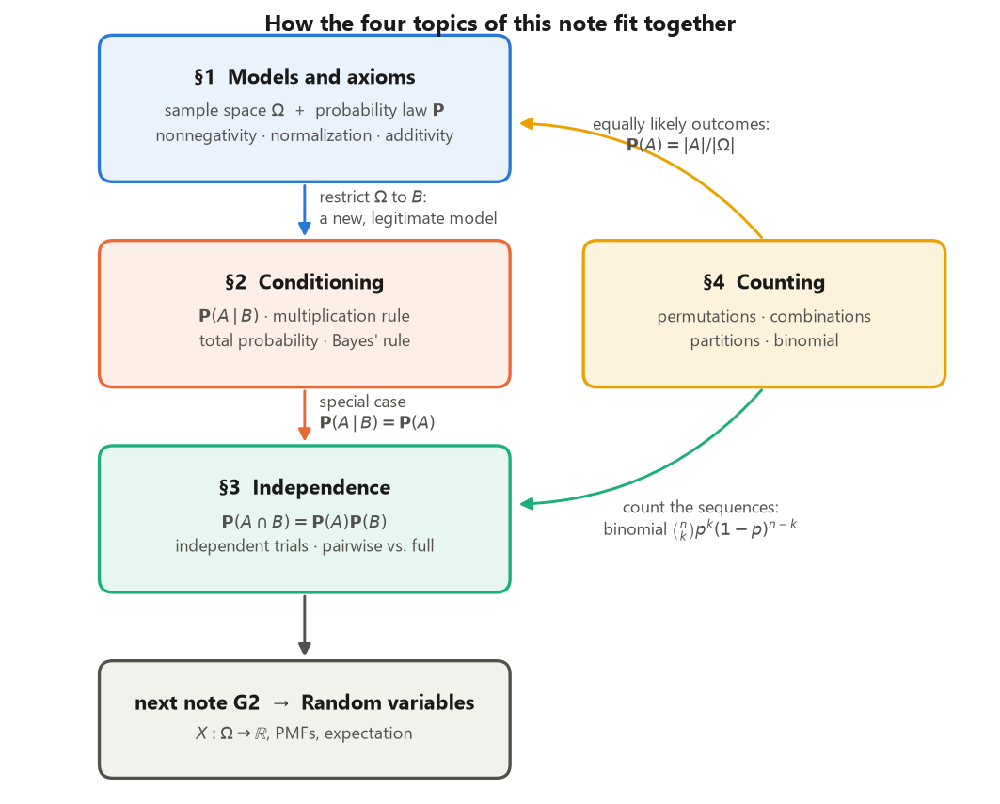
- §1 — Probability models and axioms (L01, rec01, B&T §1.1–1.2). The pair $(\Omega, \mathbf{P})$, the three axioms and their consequences (complement rule, union bound, inclusion–exclusion), discrete uniform and continuous uniform laws, and countable additivity. Hook: the model on $\{1,2,\ldots\}$ with $\mathbf{P}(n) = 2^{-n}$ has $\mathbf{P}(\text{outcome is even}) = 1/3$ — a fact that finite additivity alone cannot deliver (L01 slide 11).
- §2 — Conditional probability, total probability, Bayes' rule (L02, rec02, B&T §1.3–1.4). Conditioning is revision of a model in light of information: $\mathbf{P}(A \mid B)$ is again a legitimate probability law, now living on $B$. Out of it come the multiplication rule, the total probability theorem, and Bayes' rule for inference. Hook: in Monty Hall (rec02 P4), staying wins with probability $1/3$ and switching wins with probability $2/3$ — the whole disagreement is about which model the host's action induces.
- §3 — Independence (L03, rec03, B&T §1.5). The special case $\mathbf{P}(A \mid B) = \mathbf{P}(A)$, equivalently $\mathbf{P}(A \cap B) = \mathbf{P}(A)\mathbf{P}(B)$; conditional independence; independence of a collection versus mere pairwise independence; independent trials and Bernoulli/binomial models. Hook: independence is an assumption about the model, not a visual property of a Venn diagram, and conditioning can create it or destroy it (L03 slides 4–5).
- §4 — Counting (L04, rec04, B&T §1.6). When outcomes are equally likely, "computing probabilities $\equiv$ counting" (L01 slide 9): the basic counting principle, permutations, combinations $\binom{n}{k}$, binomial probabilities, and partitions/multinomial coefficients. Hook: with $23$ people and $365$ equally likely birthdays, the probability of a shared birthday is $0.5073$ (rec04 P1).
- §5 — Synthesis, cheatsheet, and the bridge to random variables (all four lectures). No new material: one page that assembles §1–§4 into a single decision procedure, a master cheatsheet of every formula in G1, the top gotchas collected in one place, and the hand-off to note G2.
The four topics occupy §1–§4 one-for-one, in the order above, and §5 is the synthesis; the sidebar table of contents lists the sub-sections of each.
The arrow out of the bottom of Fig. 0.1 is the sequel: note G2 introduces random variables, functions $X : \Omega \to \mathbb{R}$ that summarize an outcome by a number, together with PMFs and expectation. Everything in G1 stays true there — a random variable is defined on top of a model $(\Omega, \mathbf{P})$, never instead of one.
Solution
(a) §2 — Bayes' rule, fed by the total probability theorem for the denominator. (b) §4 — counting: the basic counting principle applied to the choice of aces and of non-aces, i.e. a product of binomial coefficients, then the discrete uniform law of §1 to turn the count into a probability. (c) §3 — the independence test $\mathbf{P}(A \cap B) = \mathbf{P}(A)\mathbf{P}(B)$, checked on the four-outcome model. (d) §1 — the continuous uniform law, probability $=$ area. Note that (b) needs two sections: counting produces $|A|$ and $|\Omega|$, §1 supplies the law that divides them. That dependency is the arrow from counting into §1 in Fig. 0.1.
0.3 How lectures, recitations, and the book interleave — and the notation used here
Each topic in this note appears three times, in this order, and the three passes do different jobs. Lecture (L01–L04) states the definitions and theorems and works one or two short examples, often leaving the arithmetic blank on the slide to be filled in live — those blanks appear in these notes as fully solved examples. Recitation (rec01–rec04) is where the multi-step problems live: rec01 (axioms, set algebra, Romeo & Juliet, continuity of $\mathbf{P}$), rec02 (conditioning, chess tournament, Monty Hall), rec03 (independence, random walk, noisy channel), rec04 (birthday problem, rooks, hypergeometric, multinomial). Every recitation problem is reproduced here with its statement and a fully expanded solution behind a Solution toggle. The book (Bertsekas–Tsitsiklis, 2nd ed.) supplies the careful general statements: B&T §1.1–1.2 for models and axioms, B&T §1.3–1.4 for conditioning and Bayes, B&T §1.5 for independence, B&T §1.6 for counting. Citations to all three appear inline throughout, in the small grey source lines and in the example headers.
Notation follows the course, not any one textbook. The table below lists every symbol used in G1.
| Symbol | Read as | Meaning |
|---|---|---|
| $\Omega$, $\omega$ | "omega" | Sample space; a single outcome $\omega \in \Omega$. |
| $A, B, C$ | events | Subsets of $\Omega$. "Event $A$ occurs" means the realized outcome lies in $A$. |
| $\mathbf{P}(A)$ | "P of $A$" | Probability of event $A$. Input is a set; output is a number in $[0,1]$. |
| $\mathbf{P}(\omega)$ | — | Shorthand for $\mathbf{P}(\{\omega\})$, the probability of a single-outcome event (L01 slide 7). |
| $A \cap B$ | "$A$ and $B$" | Intersection: outcomes in both. Often written $A B$ inside longer formulas. |
| $A \cup B$ | "$A$ or $B$" | Union: outcomes in at least one (inclusive "or"). |
| $A^c$ | "$A$ complement" | $\Omega \setminus A$: the event that $A$ does not occur. $\mathbf{P}(A^c) = 1 - \mathbf{P}(A)$. |
| $\varnothing$ | "empty set" | The impossible event. $A \cap B = \varnothing$ means $A$ and $B$ are disjoint (mutually exclusive). |
| $A \subseteq B$ | "$A$ implies $B$" | Every outcome of $A$ is an outcome of $B$; then $\mathbf{P}(A) \le \mathbf{P}(B)$. |
| $|A|$ | "size of $A$" | Number of elements of a finite event $A$; used with the discrete uniform law. |
| $\mathbf{P}(A \mid B)$ | "$A$ given $B$" | Conditional probability of $A$ given that $B$ occurred (§2). The bar $\mid$ never means division. |
| $n!$ | "$n$ factorial" | $n \cdot (n-1) \cdots 2 \cdot 1$, the number of orderings of $n$ distinct items; $0! = 1$ (§4). |
| ${n \choose k}$ | "$n$ choose $k$" | $\dfrac{n!}{k!\,(n-k)!}$, the number of $k$-element subsets of an $n$-element set (§4). Written interchangeably ${n \choose k}$ and $\binom{n}{k}$ — same symbol. |
| $\dfrac{n!}{n_1!\,n_2!\cdots n_r!}$ | multinomial coefficient | Number of ways to split $n$ distinct items into labeled groups of sizes $n_1,\ldots,n_r$ with $n_1 + \cdots + n_r = n$ (§4). |
| i.i.d. | — | Independent and identically distributed: repeated trials that neither influence each other nor change their probabilities (§3). |
| $\mathbb{E}[X]$, $\operatorname{var}(X)$ | — | Expectation and variance of a random variable. Not used in G1; they arrive in note G2. |
computes/, not by hand, so if a number disagrees with your own calculation, the disagreement is real and worth chasing.Solution
(a) $A \cap B$ (also written $AB$). (b) $A^c \cap B^c$, which equals $(A \cup B)^c$ by De Morgan. (c) $A \cup B$, the inclusive "or". (d) $B \cap A^c$, i.e. $B \setminus A$ — note this is not $B^c$.
(e) Both are ultimately statements about $\mathbf{P}$, but they live at different levels. "Disjoint" is a statement you can check by looking at the sets alone: $A \cap B = \varnothing$, no outcome lies in both — here it is false, since $(2,5)$ has an even first roll and sum $7$. "Independent" is a statement about the numbers the law assigns: it holds iff $\mathbf{P}(A \cap B) = \mathbf{P}(A)\mathbf{P}(B)$, and two models on the same $\Omega$ with the same sets can disagree about it. That is why no Venn diagram can show independence (§3).
§1 Probabilistic models and the axioms
Sources: L01 slides 3–11 (raster p01–p03) · rec01 P1–P4 and P G1† · Bertsekas–Tsitsiklis (B&T, as in §0) §1.1–1.2, Example 1.5 (p. 13), Problem 1.5 (p. 54), Problem 1.13 (p. 56). Throughout this note a bare "§N.k" always means this note's own subsection; every reference to the textbook carries the "B&T" prefix.
Probability is a mathematical framework for reasoning about uncertainty (L01 slide 3). The framework has exactly two moving parts — a sample space and a probability law — and three rules the law must obey. Everything else in this note is a consequence. This section builds those parts, shows the two standard ways of drawing a sample space (grid and tree), states and uses the three axioms, derives the standard consequences (complement, monotonicity, inclusion–exclusion, union bound), works the two uniform laws (counting for discrete models, area for continuous ones), and explains why the additivity axiom has to be strengthened from finite to countable. It closes with every problem of recitation 1 solved in full.
1.1 The sample space $\Omega$
An experiment is anything with an uncertain result: a die roll, a coin toss, the arrival time of a friend, the number of packets in a router queue. The first modeling step is always the same — write down what could happen.
- Mutually exclusive — at most one outcome can occur; no two elements of $\Omega$ can both be "what happened".
- Collectively exhaustive — at least one outcome occurs; whatever happens is described by some element of $\Omega$.
The slides give one discrete and one continuous example, and they are the two pictures worth memorizing.
The same 16-element set can be drawn two ways, and both drawings are used constantly later in the course.
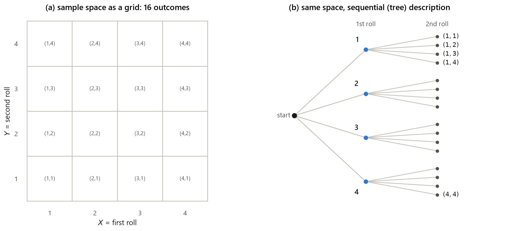
Solution
(a) An outcome is a triple $(x_1,x_2,x_3)$ with each $x_i \in \{1,2,3,4\}$, so $\Omega = \{1,2,3,4\}^3$ and $|\Omega| = 4 \times 4 \times 4 = 4^3 = 64$.
(b) Count the triples with distinct entries: $4$ choices for $x_1$, then $3$ remaining for $x_2$, then $2$ for $x_3$, giving $4 \cdot 3 \cdot 2 = 24$. The fraction is $24/64 = 3/8 = 0.375$. (Under the uniform law of §1.3 that fraction is the probability; as a statement about the sample space alone it is just a count.)
Solution
Counting cells $(x,y)$ with $x+y = s$:
| $s$ | 2 | 3 | 4 | 5 | 6 | 7 | 8 |
|---|---|---|---|---|---|---|---|
| cells | 1 | 2 | 3 | 4 | 3 | 2 | 1 |
| probability | $1/16$ | $1/8$ | $3/16$ | $1/4$ | $3/16$ | $1/8$ | $1/16$ |
The counts sum to $1+2+3+4+3+2+1 = 16$, as they must. The seven sums are therefore not equally likely — $\mathbf{P}(X+Y=5) = 4/16 = 1/4$ but $\mathbf{P}(X+Y=2) = 1/16$. A uniform law on $\{2,\ldots,8\}$ would assign $1/7$ to each, contradicting the finer model that actually describes the experiment. The coarse sample space is fine; the uniform law on it is the error.
1.2 Events, the three axioms, and their consequences
Probabilities are not attached to outcomes but to collections of outcomes.
- Nonnegativity: $\mathbf{P}(A) \ge 0$.
- Normalization: $\mathbf{P}(\Omega) = 1$.
- Additivity: if $A \cap B = \varnothing$ (the events are disjoint, i.e. cannot both occur), then $\mathbf{P}(A \cup B) = \mathbf{P}(A) + \mathbf{P}(B)$.
Axiom 3 is stated for two sets. The slide immediately uses it for $k$ sets, writing $\mathbf{P}(\{s_1,\ldots,s_k\}) = \mathbf{P}(s_1) + \cdots + \mathbf{P}(s_k)$ where $s_1,\ldots,s_k$ are distinct outcomes and $\mathbf{P}(s)$ abbreviates $\mathbf{P}(\{s\})$. That extension is an induction, and it is worth doing once.
Proof (the induction the slide omits)
Base case $k = 2$. This is exactly Axiom 3.
Induction hypothesis. Suppose the statement holds for some $k \ge 2$: for any $k$ pairwise disjoint events, the probability of the union is the sum of the probabilities.
Induction step ($k \to k+1$). Let $A_1, \ldots, A_{k+1}$ be pairwise disjoint. Put $$U = A_1 \cup \cdots \cup A_k, \qquad \text{so that} \qquad A_1 \cup \cdots \cup A_{k+1} = U \cup A_{k+1}.$$ Here $U$ is just a name for the union of the first $k$ events. We check that $U$ and $A_{k+1}$ are disjoint, which is what licenses Axiom 3: $$U \cap A_{k+1} = (A_1 \cup \cdots \cup A_k) \cap A_{k+1} = (A_1 \cap A_{k+1}) \cup \cdots \cup (A_k \cap A_{k+1}) = \varnothing \cup \cdots \cup \varnothing = \varnothing,$$ where the second equality is the distributive law for sets and the third uses pairwise disjointness. Applying Axiom 3 to the disjoint pair $U, A_{k+1}$, $$\mathbf{P}(A_1 \cup \cdots \cup A_{k+1}) = \mathbf{P}(U) + \mathbf{P}(A_{k+1}).$$ By the induction hypothesis $\mathbf{P}(U) = \mathbf{P}(A_1) + \cdots + \mathbf{P}(A_k)$, so $$\mathbf{P}(A_1 \cup \cdots \cup A_{k+1}) = \mathbf{P}(A_1) + \cdots + \mathbf{P}(A_k) + \mathbf{P}(A_{k+1}),$$ which is the statement for $k+1$. By induction it holds for every finite $k \ge 2$. $\blacksquare$
Specializing to singletons $A_i = \{s_i\}$ (distinct outcomes are automatically disjoint as one-element sets) gives the slide's line $$\mathbf{P}(\{s_1,\ldots,s_k\}) = \mathbf{P}(\{s_1\}) + \cdots + \mathbf{P}(\{s_k\}) = \mathbf{P}(s_1) + \cdots + \mathbf{P}(s_k),$$ the last step being only the notational shorthand $\mathbf{P}(\{s\}) \equiv \mathbf{P}(s)$.
The axioms are deliberately spare. Everything below is squeezed out of them; each step names the axiom used.
- $\mathbf{P}(\varnothing) = 0$.
- Complement rule: $\mathbf{P}(A^c) = 1 - \mathbf{P}(A)$, and consequently $\mathbf{P}(A) \le 1$.
- Monotonicity: if $A \subseteq B$ then $\mathbf{P}(A) \le \mathbf{P}(B)$.
- Inclusion–exclusion: $\mathbf{P}(A \cup B) = \mathbf{P}(A) + \mathbf{P}(B) - \mathbf{P}(A \cap B)$.
- Union bound: $\mathbf{P}(A \cup B) \le \mathbf{P}(A) + \mathbf{P}(B)$, and more generally $\mathbf{P}(A_1 \cup \cdots \cup A_n) \le \sum_{i=1}^{n} \mathbf{P}(A_i)$.
Proofs — every step justified
(1) $\mathbf{P}(\varnothing) = 0$. The events $\Omega$ and $\varnothing$ are disjoint ($\Omega \cap \varnothing = \varnothing$) and their union is $\Omega$. By Axiom 3, $$\mathbf{P}(\Omega) = \mathbf{P}(\Omega \cup \varnothing) = \mathbf{P}(\Omega) + \mathbf{P}(\varnothing).$$ By Axiom 2, $\mathbf{P}(\Omega) = 1$, so $1 = 1 + \mathbf{P}(\varnothing)$, hence $\mathbf{P}(\varnothing) = 0$.
(2) Complement rule. $A$ and $A^c$ are disjoint by definition of the complement ($A \cap A^c = \varnothing$), and together they exhaust the space ($A \cup A^c = \Omega$). Axiom 3 gives $$\mathbf{P}(A) + \mathbf{P}(A^c) = \mathbf{P}(A \cup A^c) = \mathbf{P}(\Omega) = 1,$$ the last equality by Axiom 2. Rearranging, $\mathbf{P}(A^c) = 1 - \mathbf{P}(A)$. Since $\mathbf{P}(A^c) \ge 0$ by Axiom 1, we get $1 - \mathbf{P}(A) \ge 0$, i.e. $\mathbf{P}(A) \le 1$. Combined with Axiom 1: every probability lies in $[0,1]$.
(3) Monotonicity. Assume $A \subseteq B$. Split $B$ into the part inside $A$ and the part outside: $$B = A \cup (B \cap A^c),$$ and these two pieces are disjoint because $A \cap (B \cap A^c) \subseteq A \cap A^c = \varnothing$. Axiom 3 gives $$\mathbf{P}(B) = \mathbf{P}(A) + \mathbf{P}(B \cap A^c) \;\ge\; \mathbf{P}(A),$$ because $\mathbf{P}(B \cap A^c) \ge 0$ by Axiom 1.
(4) Inclusion–exclusion. Decompose the union into three pairwise disjoint pieces: $$A \cup B = (A \cap B^c) \;\cup\; (A \cap B) \;\cup\; (A^c \cap B).$$ (Any outcome of $A \cup B$ is in exactly one of: only $A$, both, only $B$.) By finite additivity for three sets, $$\mathbf{P}(A \cup B) = \mathbf{P}(A \cap B^c) + \mathbf{P}(A \cap B) + \mathbf{P}(A^c \cap B). \tag{i}$$ Separately, $A = (A \cap B) \cup (A \cap B^c)$ is a disjoint split of $A$, so Axiom 3 gives $\mathbf{P}(A) = \mathbf{P}(A \cap B) + \mathbf{P}(A \cap B^c)$, i.e. $$\mathbf{P}(A \cap B^c) = \mathbf{P}(A) - \mathbf{P}(A \cap B). \tag{ii}$$ Identically, $B = (A \cap B) \cup (A^c \cap B)$ is a disjoint split of $B$, so $$\mathbf{P}(A^c \cap B) = \mathbf{P}(B) - \mathbf{P}(A \cap B). \tag{iii}$$ Substituting (ii) and (iii) into (i), $$\mathbf{P}(A \cup B) = \big[\mathbf{P}(A) - \mathbf{P}(A \cap B)\big] + \mathbf{P}(A \cap B) + \big[\mathbf{P}(B) - \mathbf{P}(A \cap B)\big] = \mathbf{P}(A) + \mathbf{P}(B) - \mathbf{P}(A \cap B).$$
(5) Union bound. From (4), $\mathbf{P}(A \cup B) = \mathbf{P}(A) + \mathbf{P}(B) - \mathbf{P}(A \cap B) \le \mathbf{P}(A) + \mathbf{P}(B)$, since $\mathbf{P}(A \cap B) \ge 0$ by Axiom 1. For $n$ events, apply the two-set bound to $A_1$ and $A_2 \cup \cdots \cup A_n$: $$\mathbf{P}(A_1 \cup A_2 \cup \cdots \cup A_n) \le \mathbf{P}(A_1) + \mathbf{P}(A_2 \cup \cdots \cup A_n),$$ then to $A_2$ and $A_3 \cup \cdots \cup A_n$, and so on; after $n-1$ such steps and adding, $\mathbf{P}(A_1 \cup \cdots \cup A_n) \le \sum_{i=1}^n \mathbf{P}(A_i)$ (this is the argument of B&T, p. 14).
Property 4 is stated for two events, and that is the version used everywhere below. Three events come up often enough — "at least one of three components fails", "the card is a heart, a face card, or an ace" — to be worth recording separately, and the derivation needs nothing new.
Proof — the two-set rule, applied to three different pairs
Step 1 — bracket two of the three. Union is associative, so $A \cup B \cup C = (A\cup B)\cup C$: this is a union of the two events $A\cup B$ and $C$. Property 4 applied to that pair gives $$\mathbf{P}(A\cup B\cup C) = \mathbf{P}(A\cup B) + \mathbf{P}(C) - \mathbf{P}\big((A\cup B)\cap C\big). \tag{i}$$ No assumption is needed: property 4 holds for arbitrary events, overlapping or not.
Step 2 — expand the first term. Property 4 again, this time on the pair $A$, $B$: $$\mathbf{P}(A\cup B) = \mathbf{P}(A) + \mathbf{P}(B) - \mathbf{P}(A\cap B). \tag{ii}$$
Step 3 — expand the subtracted term. By the distributive law for sets, $$(A\cup B)\cap C = (A\cap C)\cup(B\cap C),$$ a union of the two events $A\cap C$ and $B\cap C$ — so property 4 applies a third time, to that pair: $$\mathbf{P}\big((A\cup B)\cap C\big) = \mathbf{P}(A\cap C) + \mathbf{P}(B\cap C) - \mathbf{P}\big((A\cap C)\cap(B\cap C)\big).$$ The last intersection simplifies: an outcome lies in both $A\cap C$ and $B\cap C$ exactly when it lies in $A$, in $B$ and in $C$, i.e. $(A\cap C)\cap(B\cap C) = A\cap B\cap C$. Hence $$\mathbf{P}\big((A\cup B)\cap C\big) = \mathbf{P}(A\cap C) + \mathbf{P}(B\cap C) - \mathbf{P}(A\cap B\cap C). \tag{iii}$$
Step 4 — substitute (ii) and (iii) into (i). $$ \begin{aligned} \mathbf{P}(A\cup B\cup C) &= \big[\mathbf{P}(A)+\mathbf{P}(B)-\mathbf{P}(A\cap B)\big] + \mathbf{P}(C) - \big[\mathbf{P}(A\cap C)+\mathbf{P}(B\cap C)-\mathbf{P}(A\cap B\cap C)\big]\\ &= \mathbf{P}(A)+\mathbf{P}(B)+\mathbf{P}(C)-\mathbf{P}(A\cap B)-\mathbf{P}(A\cap C)-\mathbf{P}(B\cap C)+\mathbf{P}(A\cap B\cap C). \qquad \blacksquare \end{aligned} $$
The pattern. The signs alternate by the number of events intersected — add the singles, subtract the pairs, add back the triples — and the same bracketing argument, iterated, carries it to any finite number of events: $$\mathbf{P}(A_1\cup\cdots\cup A_n) = \sum_{i}\mathbf{P}(A_i) - \sum_{i<j}\mathbf{P}(A_i\cap A_j) + \sum_{i<j<k}\mathbf{P}(A_i\cap A_j\cap A_k) - \cdots + (-1)^{n+1}\,\mathbf{P}(A_1\cap\cdots\cap A_n),$$ the two-set and three-set statements being the cases $n=2$ and $n=3$. Keeping only the first sum leaves the union bound (property 5) — which is exactly why that bound over-estimates.
A check on the tetrahedral grid. Take the fair $4\times4$ model of Example 1.1 and the three events $A = \{X=1\}$ (a column, $4$ cells), $B = \{Y=1\}$ (a row, $4$ cells), $C = \{X+Y=5\}$ (the anti-diagonal $(1,4),(2,3),(3,2),(4,1)$, $4$ cells). The pairwise overlaps are single cells — $A\cap B = \{(1,1)\}$, $A\cap C = \{(1,4)\}$, $B\cap C = \{(4,1)\}$ — and $A\cap B\cap C = \varnothing$, since $(1,1)$ has sum $2$. The formula gives $$\mathbf{P}(A\cup B\cup C) = \frac{4+4+4}{16} - \frac{1+1+1}{16} + \frac{0}{16} = \frac{12-3}{16} = \frac{9}{16} = 0.5625 .$$ Counting the union directly: the $L$-shape $A\cup B$ has $7$ cells (Practice 1.6), and $C$ contributes the two further cells $(2,3)$ and $(3,2)$, for $7+2 = 9$ cells. ✓ Adding the three probabilities blindly would have given $12/16 = 0.75$.
Solution
(a) Inclusion–exclusion (property 4): $\mathbf{P}(A \cup B) = 0.5 + 0.4 - 0.1 = 0.8$.
(b) De Morgan gives $A^c \cap B^c = (A \cup B)^c$, so by the complement rule $\mathbf{P}(A^c \cap B^c) = 1 - \mathbf{P}(A \cup B) = 1 - 0.8 = 0.2$.
(c) "Exactly one" is the symmetric difference $(A \cap B^c) \cup (A^c \cap B)$. Using identities (ii) and (iii) from the proofs above, $\mathbf{P}(A \cap B^c) = 0.5 - 0.1 = 0.4$ and $\mathbf{P}(A^c \cap B) = 0.4 - 0.1 = 0.3$; these are disjoint, so by Axiom 3 the answer is $0.4 + 0.3 = 0.7$. Equivalently, by the formula of rec01 P1 (§1.7), $\mathbf{P}(A) + \mathbf{P}(B) - 2\mathbf{P}(A \cap B) = 0.5 + 0.4 - 0.2 = 0.7$.
Solution
Assume $A \subseteq B$. As in the monotonicity proof, $B = A \cup (B \cap A^c)$ and the two pieces are disjoint, so Axiom 3 gives $\mathbf{P}(B) = \mathbf{P}(A) + \mathbf{P}(B \cap A^c)$; subtracting $\mathbf{P}(A)$ from both sides gives $\mathbf{P}(B \cap A^c) = \mathbf{P}(B) - \mathbf{P}(A)$.
For the second claim, use the identity just proved — it applies because $A \subseteq A \cup B$ and $B \subseteq A \cup B$ (every outcome of $A$, and every outcome of $B$, lies in the union), so each of these pairs is a legal instance of "$A \subseteq B$". Taking the pair $\big(A,\ A\cup B\big)$ in the identity, with $A$ in the role of the smaller set and $A \cup B$ in the role of the larger, $$\mathbf{P}(A \cup B) - \mathbf{P}(A) = \mathbf{P}\big((A\cup B) \cap A^c\big) \;\ge\; 0$$ by Axiom 1, so $\mathbf{P}(A \cup B) \ge \mathbf{P}(A)$; the leftover event $(A\cup B)\cap A^c = B \cap A^c$ is "$B$ happens but $A$ does not", and the identity says the union costs exactly that much more than $A$ alone. Taking instead the pair $\big(B,\ A\cup B\big)$, $$\mathbf{P}(A \cup B) - \mathbf{P}(B) = \mathbf{P}\big((A\cup B) \cap B^c\big) = \mathbf{P}(A \cap B^c) \;\ge\; 0,$$ so $\mathbf{P}(A \cup B) \ge \mathbf{P}(B)$. A number that is $\ge$ both of two numbers is $\ge$ their maximum, hence $\mathbf{P}(A \cup B) \ge \max\{\mathbf{P}(A), \mathbf{P}(B)\}$. (This is monotonicity again, but obtained here with the size of the gap made explicit.) Together with the union bound this pins the union between $\max\{\mathbf{P}(A),\mathbf{P}(B)\}$ and $\mathbf{P}(A)+\mathbf{P}(B)$.
1.3 The discrete uniform law: probabilities are counts
Where the formula comes from
Let $|\Omega| = n$ and let every outcome carry the same probability $p$, i.e. $\mathbf{P}(\{\omega\}) = p$ for all $\omega \in \Omega$. Since $\Omega$ is the disjoint union of its $n$ singletons, finite additivity (the $k$-set property proved in §1.2) gives $$1 = \mathbf{P}(\Omega) = \sum_{\omega \in \Omega} \mathbf{P}(\{\omega\}) = n\,p \quad\Longrightarrow\quad p = \frac{1}{n},$$ where the first equality is Axiom 2. For an event $A$ with $|A| = m$ elements, the same additivity over its $m$ singletons gives $$\mathbf{P}(A) = \sum_{\omega \in A} \mathbf{P}(\{\omega\}) = m \cdot \frac{1}{n} = \frac{|A|}{|\Omega|}.$$ So "computing probabilities $\equiv$ counting" (L01 slide 9); this is what makes §4's counting machinery worth learning, and it is what "fair coin", "fair die" and "well-shuffled deck" mean.
The lecture applies this to the tetrahedral grid with $|\Omega| = 16$ and $\mathbf{P}(\text{each outcome}) = 1/16$ (L01 slide 8), and leaves four probabilities blank to be filled in live. Here they are, cell by cell.
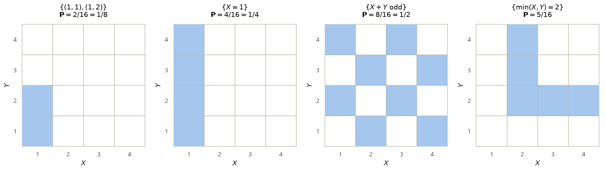
(a) $\mathbf{P}\big((X,Y) \text{ is } (1,1) \text{ or } (1,2)\big)$. The event is the two-element set $A = \{(1,1), (1,2)\}$. The two outcomes are distinct, hence disjoint as singletons, so Axiom 3 gives $$\mathbf{P}(A) = \mathbf{P}\big((1,1)\big) + \mathbf{P}\big((1,2)\big) = \frac{1}{16} + \frac{1}{16} = \frac{2}{16} = \frac{1}{8} = 0.125.$$ Equivalently, by the uniform law $\mathbf{P}(A) = |A|/|\Omega| = 2/16$.
(b) $\mathbf{P}(\{X = 1\})$. The event is $B = \{(1,1),(1,2),(1,3),(1,4)\}$ — the first column of the grid: the first roll is $1$ and the second roll is unconstrained, so there are $4$ choices for $Y$ and $|B| = 4$. Hence $$\mathbf{P}(B) = \frac{|B|}{|\Omega|} = \frac{4}{16} = \frac{1}{4} = 0.25.$$
(c) $\mathbf{P}(X + Y \text{ is odd})$. A sum is odd exactly when one roll is odd and the other is even. Split the event $C$ into the two disjoint cases:
• $X$ odd ($x \in \{1,3\}$, $2$ ways) and $Y$ even ($y \in \{2,4\}$, $2$ ways): $2 \times 2 = 4$ cells, namely $(1,2),(1,4),(3,2),(3,4)$;
• $X$ even and $Y$ odd: likewise $2 \times 2 = 4$ cells, namely $(2,1),(2,3),(4,1),(4,3)$.
These two cases cannot both hold, so by Axiom 3 the counts add: $|C| = 4 + 4 = 8$, and
$$\mathbf{P}(C) = \frac{8}{16} = \frac{1}{2} = 0.5.$$
The checkerboard pattern in Fig. 1.2 is the visual version of "exactly half the cells".
(d) $\mathbf{P}(\min(X,Y) = 2)$. The event $D$ requires both rolls to be $\ge 2$ and at least one of them to equal $2$. Split by where the minimum is achieved, into two disjoint pieces:
• $X = 2$ and $Y \ge 2$: cells $(2,2), (2,3), (2,4)$ — that is $3$ cells;
• $Y = 2$ and $X > 2$: cells $(3,2), (4,2)$ — that is $2$ cells. (The strict inequality $X > 2$ avoids counting $(2,2)$ a second time; this is exactly the bookkeeping that makes the two pieces disjoint.)
Hence $|D| = 3 + 2 = 5$ and
$$\mathbf{P}(D) = \frac{5}{16} = 0.3125.$$
A useful cross-check with complements: $\{\min(X,Y) \ge 2\}$ has $3 \times 3 = 9$ cells and $\{\min(X,Y) \ge 3\}$ has $2 \times 2 = 4$ cells, and since $\{\min \ge 3\} \subseteq \{\min \ge 2\}$, Practice 1.4 gives $|D| = 9 - 4 = 5$. ✓
Solution
(a) $\{\max = 3\}$ = both rolls $\le 3$ and at least one equal to $3$. Disjoint split: $X = 3, Y \le 3$ gives $(3,1),(3,2),(3,3)$, i.e. $3$ cells; $Y = 3, X < 3$ gives $(1,3),(2,3)$, i.e. $2$ cells. Total $5$, so $\mathbf{P} = 5/16 = 0.3125$. (Alternatively $3^2 - 2^2 = 9 - 4 = 5$.)
(b) $\{X \ge Y\}$ contains the $4$ diagonal cells plus the cells strictly below the diagonal. By symmetry the $16 - 4 = 12$ off-diagonal cells split evenly, $6$ with $X > Y$ and $6$ with $X < Y$. So $|\{X \ge Y\}| = 4 + 6 = 10$ and $\mathbf{P} = 10/16 = 5/8 = 0.625$.
(c) $\{X \ne Y\}$ is the complement of the $4$-cell diagonal, so by the complement rule $\mathbf{P} = 1 - 4/16 = 12/16 = 3/4 = 0.75$.
Solution
$\{X=1\}$ is a column of $4$ cells and $\{Y=1\}$ is a row of $4$ cells; their union is the $L$-shape of $4 + 4 - 1 = 7$ cells (the corner $(1,1)$ lies in both). So $\mathbf{P}(\text{union}) = 7/16 = 0.4375$, whereas $\mathbf{P}(X=1) + \mathbf{P}(Y=1) = 4/16 + 4/16 = 8/16 = 0.5$. Inclusion–exclusion repairs the gap exactly: $\mathbf{P}(A \cap B) = \mathbf{P}((1,1)) = 1/16$ and $8/16 - 1/16 = 7/16$. ✓ The two events are not disjoint, so Axiom 3 never applied.
1.4 Continuous models: probability $=$ area
On the unit square of Example 1.2 there is no way to give each of the uncountably many outcomes a positive probability — any two of them would already be disjoint events, and adding up uncountably many equal positive numbers cannot give $1$. The law is therefore specified on regions instead.
This is a legitimate probability law: areas are nonnegative (Axiom 1); the whole square has area $1 \times 1 = 1$ (Axiom 2); and the area of a union of two non-overlapping regions is the sum of their areas (Axiom 3). The lecture poses two questions about it.
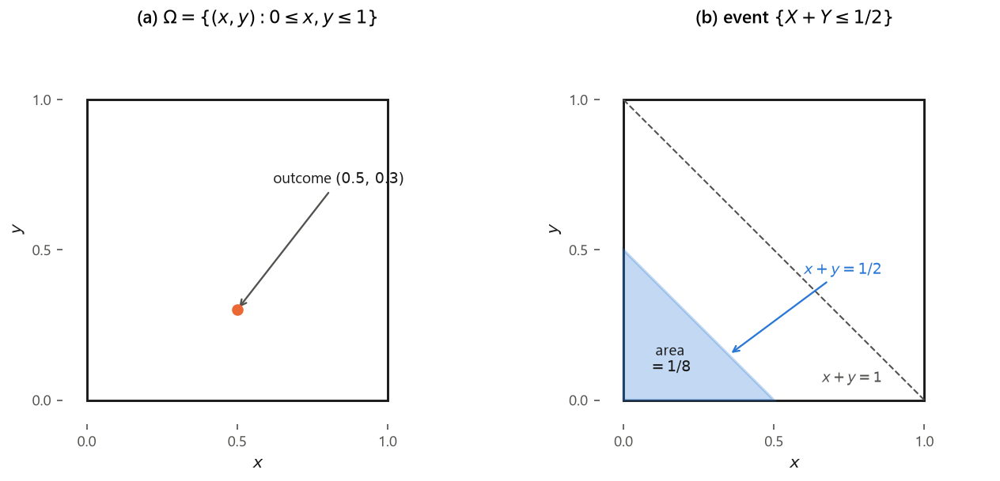
Step 1 — describe the event as a region. $A = \{(x,y) \in \Omega : x + y \le 1/2\}$ is the part of the unit square lying on or below the straight line $x + y = 1/2$. That line meets the axes at $(1/2, 0)$ and $(0, 1/2)$, both inside the square, so $A$ is the right triangle with vertices $(0,0)$, $(1/2, 0)$, $(0, 1/2)$ — shaded in Fig. 1.3(b).
Step 2 — compute its area. The triangle is right-angled at the origin with legs along the axes of length $b = 1/2$ (base) and $h = 1/2$ (height). The area of a right triangle is $\tfrac12 b h$: $$\text{area}(A) = \frac{1}{2} \cdot b \cdot h = \frac{1}{2} \cdot \frac{1}{2} \cdot \frac{1}{2} = \frac{1}{8}.$$
Step 3 — read off the probability. By the continuous uniform law, probability equals area, so $$\mathbf{P}(X + Y \le 1/2) = \frac{1}{8} = 0.125 .$$ Check: a Monte Carlo simulation with $4{,}000{,}000$ uniform pairs gives the relative frequency $0.12498$, agreeing with $0.125$ to four decimals.
Sanity checks on the general formula. Repeating steps 1–2 for a general threshold $z$: for $0 \le z \le 1$ the region is the triangle with legs $z$, area $z^2/2$; for $1 \le z \le 2$ it is the whole square minus the upper-right triangle with legs $2 - z$, area $1 - (2-z)^2/2$. This gives $$\mathbf{P}(X+Y \le z) = \begin{cases} 0, & z \le 0,\\[2pt] z^2/2, & 0 \le z \le 1,\\[2pt] 1 - (2-z)^2/2, & 1 \le z \le 2,\\[2pt] 1, & z \ge 2,\end{cases}$$ whose values at $z = 0.25, 0.5, 0.75, 1, 1.5, 2$ are $0.03125$, $0.125$, $0.28125$, $0.5$, $0.875$, $1.0$ — increasing from $0$ to $1$ as any probability of a growing event must (monotonicity, §1.2). The widget below is this formula, live.
The event is the one-point set $A = \{(0.5, 0.3)\}$, marked in Fig. 1.3(a). A single point is a region of zero area — a degenerate rectangle with both side lengths $0$ — so the uniform law assigns it $\mathbf{P}(A) = \text{area}(A) = 0$. Since that argument can feel like sleight of hand, here is the squeeze that makes it airtight, using only the axioms.
Step 1 — trap the point inside shrinking boxes. For $\varepsilon > 0$ let $$B_\varepsilon = \{(x,y) : |x - 0.5| \le \varepsilon,\ |y - 0.3| \le \varepsilon\},$$ the square of side $2\varepsilon$ centered at $(0.5, 0.3)$. For all small $\varepsilon$ (any $\varepsilon \le 0.3$) this box sits inside $\Omega$, and its area is $$\mathbf{P}(B_\varepsilon) = \text{area}(B_\varepsilon) = (2\varepsilon)^2 = 4\varepsilon^2 .$$ Numerically: $\varepsilon = 0.1$ gives $0.04$; $\varepsilon = 0.01$ gives $0.0004$; $\varepsilon = 0.001$ gives $4 \times 10^{-6}$; $\varepsilon = 10^{-6}$ gives $4 \times 10^{-12}$.
Step 2 — apply monotonicity. The single point lies in every one of these boxes, $A \subseteq B_\varepsilon$, so by monotonicity (§1.2, property 3), $$0 \;\le\; \mathbf{P}(A) \;\le\; \mathbf{P}(B_\varepsilon) = 4\varepsilon^2 \qquad \text{for every } 0 < \varepsilon \le 0.3,$$ the left inequality being Axiom 1. The quantifier is restricted to $\varepsilon \le 0.3$ because that is exactly the range in which Step 1 computed the area: for larger $\varepsilon$ the box pokes out of the square, $B_\varepsilon \cap \Omega$ is a clipped rectangle of area strictly less than $4\varepsilon^2$, and the displayed equality would be false. Nothing is lost — the squeeze in Step 3 needs only arbitrarily small $\varepsilon$.
Step 3 — squeeze. The number $\mathbf{P}(A)$ is a single fixed real number bounded above by $4\varepsilon^2$ for every $\varepsilon$ in $(0, 0.3]$. Letting $\varepsilon \to 0$ inside that range, the bound $4\varepsilon^2 \to 0$, so the only possibility is $$\mathbf{P}\big((X,Y) = (0.5,0.3)\big) = 0 .$$ Nothing was special about $(0.5,0.3)$: every individual outcome of this model has probability $0$.
Solution
(a) With $z = 3/2 > 1$ the region is the whole square minus the upper-right triangle cut off by $x+y = 3/2$, whose legs have length $2 - z = 1/2$. So the removed area is $\tfrac12 \cdot \tfrac12 \cdot \tfrac12 = 1/8$ and $\mathbf{P} = 1 - 1/8 = 7/8 = 0.875$.
(b) $\{\max(X,Y) \le 1/2\} = \{X \le 1/2\} \cap \{Y \le 1/2\}$ is the sub-square $[0,1/2]^2$, of area $(1/2)^2 = 1/4 = 0.25$.
(c) The complement region is $\{xy > 1/2\}$, which lies above the hyperbola $y = 1/(2x)$ and is nonempty only for $x > 1/2$. Its area is $\int_{1/2}^{1}\left(1 - \frac{1}{2x}\right)dx = \left[x - \tfrac12\ln x\right]_{1/2}^{1} = \left(1 - 0\right) - \left(\tfrac12 - \tfrac12\ln\tfrac12\right) = \tfrac12 - \tfrac12\ln 2$. Hence $\mathbf{P}(XY \le 1/2) = 1 - \left(\tfrac12 - \tfrac12\ln 2\right) = \tfrac12 + \tfrac12\ln 2 = 0.846574$. A $4{,}000{,}000$-sample simulation gives $0.84649$. ✓
Solution
For $\varepsilon > 0$ let $D_\varepsilon = \{(x,y) \in \Omega : |x - y| \le \varepsilon\}$, the band around the diagonal. Its complement inside the square consists of two right triangles with legs $1 - \varepsilon$ (the same geometry as in the Romeo & Juliet problem of §1.7), so $\mathbf{P}(D_\varepsilon) = 1 - (1-\varepsilon)^2 = 2\varepsilon - \varepsilon^2 \le 2\varepsilon$. The diagonal $D$ satisfies $D \subseteq D_\varepsilon$ for every $\varepsilon > 0$, so monotonicity gives $0 \le \mathbf{P}(D) \le 2\varepsilon$ for all $\varepsilon > 0$, and letting $\varepsilon \to 0$ forces $\mathbf{P}(D) = 0$. Cardinality is irrelevant to probability in continuous models — only area is.
1.5 Countable additivity: why finite additivity is not enough
Slide 7 ends with the remark "Axiom 3 needs strengthening", and slide 11 supplies the reason with a concrete model. Here is the model, the calculation, and the gap the strengthening fills.
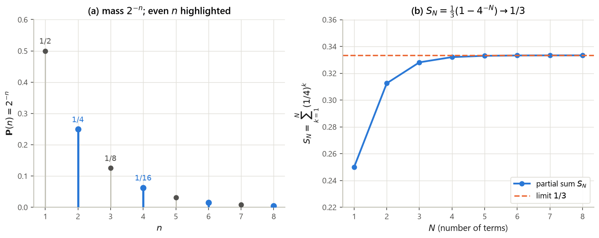
Step 1 — the event, written as a countable union. Let $E = \{2, 4, 6, \ldots\}$. This is not a finite set, so finite additivity (§1.2) does not apply to it directly. Granting for the moment that we may add the masses, $$\mathbf{P}(E) = \mathbf{P}(2) + \mathbf{P}(4) + \mathbf{P}(6) + \cdots = \frac{1}{2^2} + \frac{1}{2^4} + \frac{1}{2^6} + \cdots$$
Step 2 — recognize a geometric series. Write the $k$-th term with $n = 2k$: $$\frac{1}{2^{2k}} = \left(\frac{1}{2^{2}}\right)^{k} = \left(\frac{1}{4}\right)^{k}, \qquad k = 1, 2, 3, \ldots,$$ so $\mathbf{P}(E) = \sum_{k=1}^{\infty} (1/4)^k$: a geometric series with first term $a = 1/4$ and ratio $r = 1/4$.
Step 3 — sum it, from the partial sums (this is the step the slide skips). Let $S_N = \sum_{k=1}^{N} r^k$ with $r = 1/4$. Multiply by $r$ and subtract: $$S_N = r + r^2 + \cdots + r^{N}, \qquad r S_N = r^2 + r^3 + \cdots + r^{N+1},$$ $$S_N - r S_N = r - r^{N+1} \quad\Longrightarrow\quad S_N (1 - r) = r\left(1 - r^{N}\right) \quad\Longrightarrow\quad S_N = \frac{r\left(1 - r^{N}\right)}{1 - r}.$$ Substituting $r = 1/4$, so that $1 - r = 3/4$ and $r/(1-r) = (1/4)/(3/4) = 1/3$: $$S_N = \frac{1}{3}\left(1 - 4^{-N}\right).$$ The first few values are $S_1 = 1/4 = 0.25$, $S_2 = 5/16 = 0.3125$, $S_3 = 21/64 = 0.328125$, $S_4 = 85/256 = 0.33203125$, $S_5 = 341/1024 = 0.3330078125$ — the curve of Fig. 1.4(b). Because $|r| = 1/4 < 1$ we have $4^{-N} \to 0$ as $N \to \infty$, so $$\mathbf{P}(E) = \lim_{N \to \infty} S_N = \frac{1}{3}\left(1 - 0\right) = \frac{1}{3} \approx 0.3333 .$$
Step 4 — cross-checks. The odd outcomes give $\sum_{k \ge 0}(1/2)\cdot(1/4)^{k}$; the same formula with first term $a = 1/2$ and ratio $1/4$ yields $\dfrac{1/2}{1 - 1/4} = \dfrac{1/2}{3/4} = \dfrac{2}{3}$. And indeed $\tfrac13 + \tfrac23 = 1$: the even and odd events are disjoint and exhaust $\Omega$, so their probabilities must sum to $\mathbf{P}(\Omega) = 1$ (Axiom 2). Likewise the total mass $\sum_{n\ge1}2^{-n} = \dfrac{1/2}{1-1/2} = 1$, confirming that the law is normalized; after four terms the mass left over is $1 - (1/2+1/4+1/8+1/16) = 1/16$.
Where the gap is. Step 1 added infinitely many probabilities. Axiom 3 as stated on slide 7 licenses adding two disjoint events; the induction of §1.2 extends that to any finite number. No finite number of applications reaches $\{2,4,6,\ldots\}$: for every $N$, finite additivity gives only $$\mathbf{P}(\{2,4,\ldots,2N\}) = S_N = \tfrac13\left(1 - 4^{-N}\right),$$ which is strictly less than $1/3$ for every $N$. Finite additivity alone tells us $\mathbf{P}(E) \ge S_N$ for all $N$ (monotonicity, since $\{2,\ldots,2N\} \subseteq E$), hence $\mathbf{P}(E) \ge 1/3$; but it never delivers equality. The missing ingredient is promoted to an axiom.
With this axiom, Step 1 above is legitimate: take $A_k = \{2k\}$, pairwise disjoint singletons whose union is $E$, and the infinite sum is exactly what countable additivity says $\mathbf{P}(E)$ equals.
Solution
(a) Fastest via the complement: $\{n \ge 3\}$ is the complement of the finite event $\{1, 2\}$, so by the complement rule and finite additivity, $\mathbf{P}(n \ge 3) = 1 - \mathbf{P}(1) - \mathbf{P}(2) = 1 - \tfrac12 - \tfrac14 = \tfrac14 = 0.25$. Directly: $\sum_{n\ge3} 2^{-n} = \frac{1/8}{1 - 1/2} = \frac{1/8}{1/2} = \tfrac14$. ✓
(b) The event is $\{3, 6, 9, \ldots\}$ with masses $2^{-3k} = (1/8)^k$, $k \ge 1$: a geometric series with $a = r = 1/8$. By the formula of Step 3, $\sum_{k\ge1}(1/8)^k = \frac{1/8}{1 - 1/8} = \frac{1/8}{7/8} = \frac{1}{7} \approx 0.142857$. Countable additivity is what makes this infinite sum equal the probability.
Solution
The singletons are pairwise disjoint and their union is $\Omega$, so countable additivity forces $\mathbf{P}(\Omega) = \sum_{n\ge1} 1/n$. That is the harmonic series, which diverges: grouping terms, $1 + \tfrac12 + (\tfrac13+\tfrac14) + (\tfrac15+\cdots+\tfrac18) + \cdots \ge 1 + \tfrac12 + \tfrac12 + \tfrac12 + \cdots = \infty$. So $\mathbf{P}(\Omega) = \infty \ne 1$, violating normalization (Axiom 2). Nonnegativity is fine, and the proposal is not even a probability law — no rescaling saves it, since dividing by an infinite total is not defined.
1.6 Choosing the right law — a decision procedure
Every problem in this note begins with the same three decisions: what is $\Omega$, is it discrete or continuous, and what law does the problem statement actually specify. The flowchart makes the branches explicit.
![Decision flowchart: start by listing Omega as mutually exclusive and collectively exhaustive, then classify Omega three ways as finite, countably infinite, or continuous. The finite branch asks whether all outcomes are equally likely: yes leads to the discrete uniform law P(A)=|A|/|Omega|, marked finite Omega only, and no leads to summing the given masses. The countably infinite branch goes straight to summing the given masses by countable additivity, with no equally-likely option. The continuous branch assigns areas or lengths to regions and uses P(A)=area(A). All three end in the fallback advice to use complements or split A into disjoint pieces.](img/g1_s1_flowchart.png)
- Write $\Omega$. Grid (two-stage discrete experiments), tree (staged experiments), region of the plane (two continuous quantities), or an explicit list. Check mutual exclusivity and exhaustiveness.
- Classify $\Omega$. Finite → counting; countably infinite → a series, and you will need countable additivity; continuous → area or length.
- Read the law off the problem statement. "Fair", "at random", "equally likely" → uniform ($|A|/|\Omega|$ discretely, area continuously). Explicit or proportional weights ("each even face twice as likely") → introduce an unknown $c$, impose $\mathbf{P}(\Omega) = 1$ to find it, then sum masses. Never supply "uniform" yourself.
- Translate the question into an event — literally, which outcomes/cells/region belong to it. Sketch it.
- Compute, choosing the easier route:
- Direct: count cells / measure area.
- Complement: $\mathbf{P}(A) = 1 - \mathbf{P}(A^c)$ — best when $A$ is "at least one …" or a band, and $A^c$ is a couple of clean triangles (Romeo & Juliet, §1.7).
- Disjoint split: partition $A$ into non-overlapping pieces and add (Axiom 3) — best when $A$ is defined by a max/min or by cases.
- Inclusion–exclusion: when the pieces overlap and you cannot avoid it.
- Sanity-check. Is the answer in $[0,1]$? Does it move the right way when a parameter grows? Do complementary events sum to $1$?
(a) A fair eight-sided die is rolled twice; find $\mathbf{P}(X + Y = 5)$.
(b) $\Omega = \{1,2,3,\ldots\}$ with masses $\mathbf{P}(n) = \tfrac23\left(\tfrac13\right)^{n-1}$; find $\mathbf{P}(n \ge 3)$.
(c) $X, Y$ are two "random" numbers on $[0,1]$; find $\mathbf{P}(Y \ge 2X)$.
Solution
(a) Finite and equally likely → discrete uniform law, so count. An outcome is an ordered pair, $\Omega = \{1,\ldots,8\}^2$ with $|\Omega| = 8 \times 8 = 64$, and "fair" makes each outcome carry $1/64$. The event $\{X+Y=5\}$ is $\{(1,4),(2,3),(3,2),(4,1)\}$ — the pairs of positive integers at most $8$ summing to $5$ — so it has $4$ elements. Hence $$\mathbf{P}(X+Y=5) = \frac{|A|}{|\Omega|} = \frac{4}{64} = \frac{1}{16} = 0.0625 .$$
(b) Countably infinite with masses given → sum a series; the uniform branch is unavailable. There is no "equally likely" option here (a constant mass on $\{1,2,\ldots\}$ cannot normalize, §1.5), and the problem hands us the masses, so the only move is to add them by countable additivity. Fastest via the complement of the finite event $\{1,2\}$: $\mathbf{P}(1) = \tfrac23$ and $\mathbf{P}(2) = \tfrac23 \cdot \tfrac13 = \tfrac29$, so $$\mathbf{P}(n \ge 3) = 1 - \mathbf{P}(1) - \mathbf{P}(2) = 1 - \tfrac23 - \tfrac29 = \tfrac99 - \tfrac69 - \tfrac29 = \tfrac19 \approx 0.111111 .$$ Directly, as a geometric series with first term $a = \mathbf{P}(3) = \tfrac23\left(\tfrac13\right)^2 = \tfrac{2}{27}$ and ratio $r = \tfrac13$: $\sum_{n \ge 3}\mathbf{P}(n) = \dfrac{a}{1-r} = \dfrac{2/27}{2/3} = \dfrac19$ ✓. (Normalization check: $\sum_{n\ge1}\mathbf{P}(n) = \dfrac{2/3}{1 - 1/3} = 1$ ✓.)
(c) Continuous → probability $=$ area, and the region is a polygon. $\Omega = [0,1]^2$ and $\{y \ge 2x\}$ is the part of the square on or above the line $y = 2x$. That line leaves the square at $(1/2, 1)$, so the region is the triangle with vertices $(0,0)$, $(0,1)$, $(1/2,1)$: a right triangle with vertical leg from $(0,0)$ to $(0,1)$ of length $1$ and horizontal leg from $(0,1)$ to $(1/2,1)$ of length $1/2$. Hence $$\mathbf{P}(Y \ge 2X) = \text{area} = \tfrac12 \cdot 1 \cdot \tfrac12 = \tfrac14 = 0.25 .$$ A $4{,}000{,}000$-sample simulation gives $0.25014$ ✓.
What the three had in common. Nothing but the classification step. Once it was made, (a) was a count, (b) was a series, (c) was a triangle — and in each case the wrong branch would have produced a number rather than an obvious contradiction.
Solution
Error 1 — wrong branch. $\Omega = \{1,2,3,\ldots\}$ is countably infinite, not finite, and Fig. 1.5 offers the discrete uniform law only on the finite branch. On this branch the flowchart never asks "equally likely?" at all, because the answer can never be yes: if every $\mathbf{P}(n) = c$ then countable additivity forces $\mathbf{P}(\Omega) = \sum_{n\ge1}c$, which is $0$ for $c = 0$ and $\infty$ for $c > 0$, never $1$ (the Gotcha at the end of §1.5).
Error 2 — supplying "equally likely" from nowhere. Even on a finite $\Omega$, symmetry of the description is not symmetry of the law; the model must say "fair", "at random" or "equally likely" (Gotcha, §1.3). Here the problem statement does specify the physics — a fair coin — but that fairness lives on the flips, not on the counts, and it makes the counts distinctly non-uniform.
Error 3 — the arithmetic $2/\infty$. $|\Omega|$ is not a number, so $|A|/|\Omega|$ is not an expression; and the conclusion $\mathbf{P}(\{1,2\}) = 0$ contradicts $\mathbf{P}(1) = 1/2$ together with monotonicity.
Correct route. Countably infinite $\Omega$ with masses given $\Rightarrow$ sum the masses. $\{1,2\}$ is a finite disjoint union of singletons, so even finite additivity suffices: $$\mathbf{P}(\{1,2\}) = \mathbf{P}(1) + \mathbf{P}(2) = \tfrac12 + \tfrac14 = \tfrac34 = 0.75 .$$ Three quarters of the time a fair coin shows its first head within two flips — the opposite end of the scale from the proposed $0$.
1.7 Recitation 1, solved in full
All five items of rec01 follow, each with its statement and a completely expanded solution. Where the official solutions compress a step, the missing algebra is written out.
Solution
The event on the left is the symmetric difference: exactly one of $A$, $B$ occurs. Here $A$ and $B$ are arbitrary events and $A^c$, $B^c$ their complements.
Step 1 — the two pieces are disjoint, so additivity applies. An outcome in $A \cap B^c$ lies in $A$; an outcome in $A^c \cap B$ lies in $A^c$. No outcome lies in both $A$ and $A^c$, so $$(A \cap B^c) \cap (A^c \cap B) = \varnothing .$$ By the additivity axiom (Axiom 3), $$\mathbf{P}\big((A \cap B^c) \cup (A^c \cap B)\big) = \mathbf{P}(A \cap B^c) + \mathbf{P}(A^c \cap B). \tag{1}$$
Step 2 — express $\mathbf{P}(A \cap B^c)$. Split $A$ according to whether $B$ also occurs: $$A = (A \cap B) \cup (A \cap B^c),$$ which is a union of two disjoint sets (again because $B \cap B^c = \varnothing$). By the additivity axiom, $$\mathbf{P}(A) = \mathbf{P}(A \cap B) + \mathbf{P}(A \cap B^c),$$ so that $$\mathbf{P}(A \cap B^c) = \mathbf{P}(A) - \mathbf{P}(A \cap B). \tag{2}$$
Step 3 — the parallel step for $B$ (the official solution says only "similarly"; here it is in full). Split $B$ according to whether $A$ also occurs: $$B = (A \cap B) \cup (A^c \cap B),$$ a union of two disjoint sets, since an outcome cannot lie in both $A$ and $A^c$. By the additivity axiom, $$\mathbf{P}(B) = \mathbf{P}(A \cap B) + \mathbf{P}(A^c \cap B),$$ so that $$\mathbf{P}(A^c \cap B) = \mathbf{P}(B) - \mathbf{P}(A \cap B). \tag{3}$$ (The official write-up denotes this event $B \cap A^c$; intersection is commutative, so $B \cap A^c = A^c \cap B$ — the same event.)
Step 4 — substitute (2) and (3) into (1) and collect terms. $$ \begin{aligned} \mathbf{P}\big((A \cap B^c) \cup (A^c \cap B)\big) &= \mathbf{P}(A \cap B^c) + \mathbf{P}(A^c \cap B)\\ &= \big[\mathbf{P}(A) - \mathbf{P}(A \cap B)\big] + \big[\mathbf{P}(B) - \mathbf{P}(A \cap B)\big]\\ &= \mathbf{P}(A) + \mathbf{P}(B) - 2\,\mathbf{P}(A \cap B). \qquad \blacksquare \end{aligned} $$
Reading it. Adding $\mathbf{P}(A)$ and $\mathbf{P}(B)$ counts the overlap twice; "exactly one" wants it counted zero times, so it is removed twice. Compare inclusion–exclusion, where the union wants it once and it is removed once. With the numbers of Practice 1.3 ($0.5, 0.4, 0.1$): symmetric difference $= 0.5 + 0.4 - 2(0.1) = 0.7$, union $= 0.5 + 0.4 - 0.1 = 0.8$, and the difference between them is precisely $\mathbf{P}(A \cap B) = 0.1$. ✓
Solution
Step 0 — the model. The experiment is "select one student at random from the class". $\Omega$ is the set of students. Define the events $$A = \{\text{the selected student is a genius}\}, \qquad B = \{\text{the selected student loves chocolate}\}.$$ The percentages are read as probabilities under the uniform ("at random") law: $$\mathbf{P}(A) = 0.6, \qquad \mathbf{P}(B) = 0.7, \qquad \mathbf{P}(A \cap B) = 0.4 .$$ The quantity asked for is $\mathbf{P}(A^c \cap B^c)$ — neither category.
Step 1 — De Morgan (the official solution uses this silently). "Neither $A$ nor $B$" is the complement of "at least one of $A$, $B$": $$A^c \cap B^c = (A \cup B)^c .$$ Why: an outcome $\omega$ lies in $A^c \cap B^c$ iff $\omega \notin A$ and $\omega \notin B$, iff $\omega$ is in neither, iff $\omega \notin A \cup B$, iff $\omega \in (A\cup B)^c$. Consequently, by the complement rule (§1.2, property 2), $$1 = \mathbf{P}(A \cup B) + \mathbf{P}\big((A \cup B)^c\big) = \mathbf{P}(A \cup B) + \mathbf{P}(A^c \cap B^c). \tag{1}$$
Step 2 — inclusion–exclusion (also used silently). Proved in §1.2 (property 4) from Axiom 3 alone: $$\mathbf{P}(A \cup B) = \mathbf{P}(A) + \mathbf{P}(B) - \mathbf{P}(A \cap B). \tag{2}$$
Step 3 — substitute the numbers. Putting (2) into (1), $$ \begin{aligned} 1 &= \mathbf{P}(A) + \mathbf{P}(B) - \mathbf{P}(A \cap B) + \mathbf{P}(A^c \cap B^c)\\ &= 0.6 + 0.7 - 0.4 + \mathbf{P}(A^c \cap B^c)\\ &= 0.9 + \mathbf{P}(A^c \cap B^c). \end{aligned} $$
Step 4 — solve. $$\mathbf{P}(\text{neither a genius nor a chocolate lover}) = \mathbf{P}(A^c \cap B^c) = 1 - 0.9 = 0.1 .$$ So 10% of the class is in neither category.
Step 5 — the four-piece check. $\Omega$ splits into four disjoint events whose probabilities must total $1$:
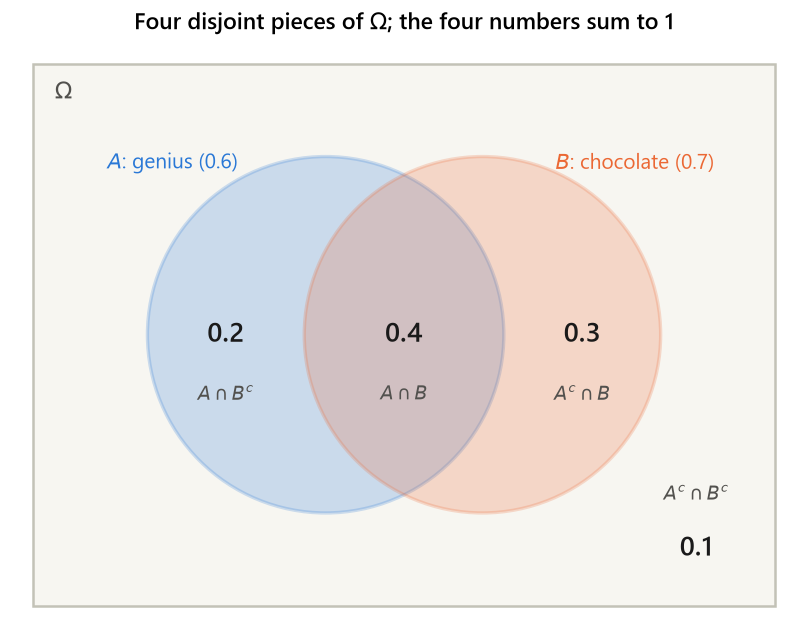
Genius only: $\mathbf{P}(A \cap B^c) = \mathbf{P}(A) - \mathbf{P}(A\cap B) = 0.6 - 0.4 = 0.2$. Chocolate only: $\mathbf{P}(A^c \cap B) = 0.7 - 0.4 = 0.3$. Both: $0.4$. Neither: $0.1$. Sum: $0.2 + 0.4 + 0.3 + 0.1 = 1.0$ ✓, and $\mathbf{P}(A \cup B) = 0.2+0.4+0.3 = 0.9$ ✓ matches (2). As a bonus, "exactly one of the two" is $0.2 + 0.3 = 0.5$, which agrees with the rec01 P1 formula $0.6 + 0.7 - 2(0.4) = 0.5$ ✓.
Gotcha inside this problem. The three given numbers are not free: $\mathbf{P}(A \cap B) = 0.4$ must lie between $\mathbf{P}(A) + \mathbf{P}(B) - 1 = 0.3$ and $\min\{0.6, 0.7\} = 0.6$, otherwise some piece of the Venn diagram would come out negative and Axiom 1 would fail. Had the problem said 20% fall into both, the "neither" probability would have come out as $1 - (0.6+0.7-0.2) = -0.1$, which is the signal that the data were inconsistent.
Solution
Step 1 — sample space. One roll of a six-sided die records the face that came up: $$\Omega = \{1,2,3,4,5,6\},$$ mutually exclusive (one face lands up) and collectively exhaustive (some face does).
Step 2 — parameterize the law. "Each even face is twice as likely as each odd face" says the three odd faces share a common probability, call it $c$, and each even face has probability $2c$. Here $c$ is a single unknown number, not yet determined: $$\mathbf{P}(1) = \mathbf{P}(3) = \mathbf{P}(5) = c, \qquad \mathbf{P}(2) = \mathbf{P}(4) = \mathbf{P}(6) = 2c .$$
Step 3 — impose normalization to find $c$. The six singletons are pairwise disjoint and their union is $\Omega$, so finite additivity plus Axiom 2 give $$1 = \mathbf{P}(\Omega) = \mathbf{P}(1)+\mathbf{P}(2)+\mathbf{P}(3)+\mathbf{P}(4)+\mathbf{P}(5)+\mathbf{P}(6) = c + 2c + c + 2c + c + 2c .$$ Grouping the three odd terms and the three even terms (the arithmetic the official solution compresses): $$3c + 3(2c) = 3c + 6c = 9c = 1 \quad\Longrightarrow\quad c = \frac{1}{9}.$$ Note $c = 1/9 > 0$, so Axiom 1 holds as well.
Step 4 — the completed model (the problem said "construct a probabilistic model", so write it down): $$\Omega = \{1,\ldots,6\}, \qquad \mathbf{P}(1) = \mathbf{P}(3) = \mathbf{P}(5) = \frac{1}{9}, \qquad \mathbf{P}(2) = \mathbf{P}(4) = \mathbf{P}(6) = \frac{2}{9}.$$ Check: $3 \cdot \tfrac19 + 3 \cdot \tfrac29 = \tfrac39 + \tfrac69 = \tfrac99 = 1$ ✓. As a by-product, $\mathbf{P}(\text{even}) = 3 \cdot \tfrac29 = \tfrac69 = \tfrac23$ and $\mathbf{P}(\text{odd}) = \tfrac13$.
Step 5 — the requested event. $\{1,2,3\}$ is the disjoint union of three singletons, so by finite additivity $$\mathbf{P}(\{1,2,3\}) = \mathbf{P}(1) + \mathbf{P}(2) + \mathbf{P}(3) = c + 2c + c = 4c = \frac{4}{9} \approx 0.4444 .$$
Reading it. The uniform law would have given $3/6 = 0.5$. The loading pulls weight onto the evens, and $\{1,2,3\}$ contains two odds and only one even, so its probability drops below $1/2$ — to $4/9 \approx 0.4444$. Whenever a problem gives relative likelihoods, this is the whole technique: name the unit $c$, express every mass as a multiple of it, and let normalization fix $c$.
Solution
The recitation solutions defer this entirely to the text; here is the full derivation.
Step 1 — sample space. Let $x$ be Romeo's delay and $y$ Juliet's delay, both measured in hours from the appointed time. Each lies in $[0,1]$ and an outcome records the pair, so $$\Omega = \{(x,y) : 0 \le x \le 1,\ 0 \le y \le 1\} = [0,1]^2,$$ the unit square of Example 1.2.
Step 2 — probability law. "All pairs of delays equally likely" is the continuous uniform law: $\mathbf{P}(A) = \text{area}(A)$. It satisfies the three axioms (areas are $\ge 0$; the square has area $1$; areas of non-overlapping regions add).
Step 3 — translate "they meet" into a region. The first to arrive waits 15 minutes $= 1/4$ hour. If Romeo arrives first ($x \le y$) they meet iff Juliet arrives within his waiting window, $y - x \le 1/4$. If Juliet arrives first ($y \le x$) they meet iff $x - y \le 1/4$. The two conditions combine into one: $$M = \{(x,y) \in \Omega : |x - y| \le 1/4\},$$ the band of half-width $1/4$ around the diagonal $y = x$, shaded in Fig. 1.7(a). Write $w = 1/4$ for the waiting window, so $M = \{|x-y| \le w\}$.
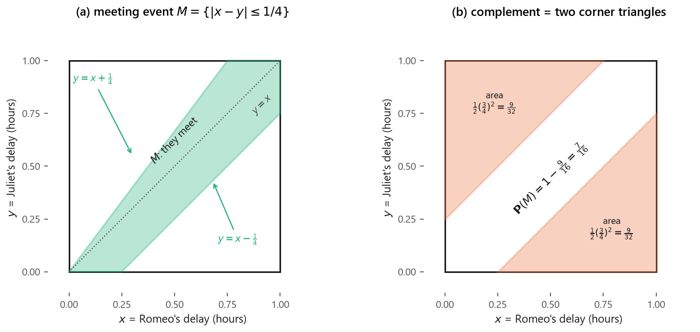
Step 4 — compute via the complement (much easier than integrating the band). The complement $M^c$ is the set of pairs with $|x - y| > 1/4$, i.e. the two corner regions of Fig. 1.7(b):
• upper-left triangle $T_1 = \{y > x + 1/4\}$, with vertices $(0, 1/4)$, $(0,1)$, $(3/4, 1)$;
• lower-right triangle $T_2 = \{y < x - 1/4\}$, with vertices $(1/4, 0)$, $(1,0)$, $(1, 3/4)$.
Each is a right triangle whose two legs have length $1 - w = 1 - 1/4 = 3/4$ (read off the vertex coordinates: $T_1$ has a vertical leg from $(0,1/4)$ to $(0,1)$ of length $3/4$ and a horizontal leg from $(0,1)$ to $(3/4,1)$ of length $3/4$). Hence
$$\text{area}(T_1) = \frac{1}{2}\left(\frac{3}{4}\right)^2 = \frac{1}{2}\cdot\frac{9}{16} = \frac{9}{32}, \qquad \text{area}(T_2) = \frac{9}{32}.$$
$T_1$ and $T_2$ are disjoint (one has $y > x$, the other $y < x$), so by Axiom 3
$$\mathbf{P}(M^c) = \frac{9}{32} + \frac{9}{32} = \frac{18}{32} = \frac{9}{16} = \left(\frac{3}{4}\right)^2 .$$
Step 5 — complement rule. $$\mathbf{P}(M) = 1 - \mathbf{P}(M^c) = 1 - \frac{9}{16} = \frac{7}{16} = 0.4375,$$ i.e. about $43.75\%$. This matches the textbook's "$1 - (3/4)\cdot(3/4) = 7/16$" (B&T §1.2, Example 1.5, p. 13). A $4{,}000{,}000$-sample simulation gives $0.43735$ ✓.
Step 6 — the general formula. Nothing above used the specific value $1/4$. For a waiting window $w \in [0,1]$ (in hours), the two corner triangles each have legs $1 - w$, so $$\mathbf{P}(\text{meet}) = 1 - 2 \cdot \frac{1}{2}(1-w)^2 = 1 - (1-w)^2 = 2w - w^2 .$$ Values: $w = 0 \Rightarrow 0$; $w = 0.1 \Rightarrow 0.19$; $w = 0.25 \Rightarrow 0.4375$; $w = 0.5 \Rightarrow 0.75$; $w = 0.75 \Rightarrow 0.9375$; $w = 1 \Rightarrow 1$. The endpoints are the sanity check: with no waiting they meet only if they arrive at exactly the same instant, an event of zero area (Practice 1.8); with $w = 1$ the window covers every possible discrepancy, so they always meet.
Reading the formula. $\mathbf{P}(\text{meet}) = 1 - (1-w)^2$ grows steeply at first (derivative $2(1-w)$, equal to $2$ at $w = 0$) and flattens near $w = 1$. Doubling the waiting time from 15 to 30 minutes lifts the meeting probability from $0.4375$ to $0.75$ — a gain of $0.3125$ — while doubling again from 30 to 60 minutes only adds $0.25$. Diminishing returns on patience.
(a) Let $A_1, A_2, \ldots$ be an infinite sequence of events that is monotonically increasing, meaning $A_n \subset A_{n+1}$ for every $n$. Let $A = \bigcup_{n=1}^{\infty} A_n$. Show that $\mathbf{P}(A) = \lim_{n\to\infty} \mathbf{P}(A_n)$. Hint: express $A$ as a union of countably many disjoint sets.
(b) Suppose the events are monotonically decreasing, $A_{n+1} \subset A_n$ for every $n$, and let $A = \bigcap_{n=1}^{\infty} A_n$. Show that $\mathbf{P}(A) = \lim_{n\to\infty}\mathbf{P}(A_n)$. Hint: apply part (a) to the complements.
(c) For a model whose sample space is the real line, show that $\mathbf{P}\big([0,\infty)\big) = \lim_{n\to\infty}\mathbf{P}\big([0,n]\big)$ and $\lim_{n\to\infty}\mathbf{P}\big([n,\infty)\big) = 0$.
Solution
The recitation solutions defer to the text; the argument below is B&T's, expanded.
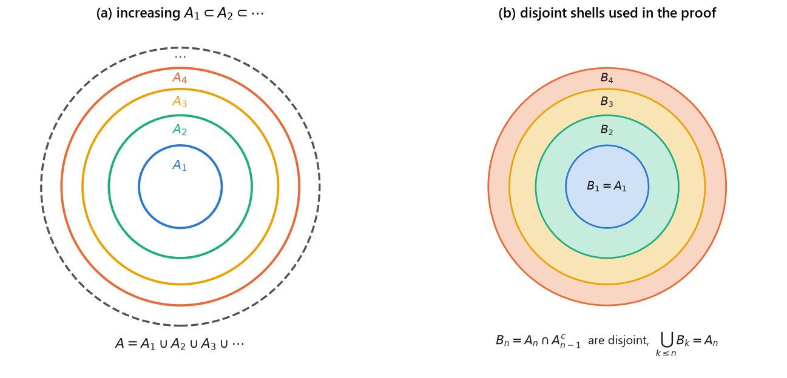
(a) Increasing sequence.
Step 1 — build disjoint shells. Define $$B_1 = A_1, \qquad B_n = A_n \cap A_{n-1}^c \ \ (n \ge 2),$$ so $B_n$ is "what is new at stage $n$" — the part of $A_n$ not already in $A_{n-1}$ (the rings in Fig. 1.8b).
Step 2 — check they are pairwise disjoint. Take $m < n$. Because the sequence is increasing, $A_m \subseteq A_{n-1}$. Any outcome of $B_m$ lies in $A_m$, hence in $A_{n-1}$; any outcome of $B_n$ lies in $A_{n-1}^c$. No outcome is in both $A_{n-1}$ and $A_{n-1}^c$, so $B_m \cap B_n = \varnothing$.
Step 3 — check the two union identities. First, for each fixed $n$, $$\bigcup_{k=1}^{n} B_k = A_n .$$ "⊆": each $B_k \subseteq A_k \subseteq A_n$ for $k \le n$ (monotone sequence). "⊇": let $\omega \in A_n$ and let $k$ be the smallest index with $\omega \in A_k$ (it exists, $k \le n$); then either $k = 1$ and $\omega \in B_1$, or $k \ge 2$ and $\omega \notin A_{k-1}$ by minimality, so $\omega \in A_k \cap A_{k-1}^c = B_k$. Second, the same argument with no upper limit gives $$\bigcup_{k=1}^{\infty} B_k = \bigcup_{n=1}^{\infty} A_n = A .$$
Step 4 — apply countable additivity, then finite additivity. The $B_k$ are pairwise disjoint, so by the countable additivity axiom (§1.5), $$\mathbf{P}(A) = \mathbf{P}\left(\bigcup_{k=1}^{\infty}B_k\right) = \sum_{k=1}^{\infty}\mathbf{P}(B_k) = \lim_{n\to\infty}\sum_{k=1}^{n}\mathbf{P}(B_k),$$ the last equality being the definition of an infinite sum as the limit of its partial sums. By finite additivity applied to the disjoint sets $B_1,\ldots,B_n$ (§1.2) and Step 3, $$\sum_{k=1}^{n}\mathbf{P}(B_k) = \mathbf{P}\left(\bigcup_{k=1}^{n}B_k\right) = \mathbf{P}(A_n).$$ Combining, $$\mathbf{P}(A) = \lim_{n\to\infty}\mathbf{P}(A_n). \qquad \blacksquare$$ (The limit exists because $\mathbf{P}(A_n)$ is nondecreasing by monotonicity and bounded above by $1$.)
(b) Decreasing sequence.
Step 1 — complement everything. Set $C_n = A_n^c$ and $C = A^c$. If $A_{n+1} \subseteq A_n$, then taking complements reverses the inclusion: $A_n^c \subseteq A_{n+1}^c$, i.e. $C_n \subseteq C_{n+1}$. So $(C_n)$ is a monotonically increasing sequence and part (a) applies to it.
Step 2 — identify the limit set. By De Morgan's law for countably many sets, $$C = A^c = \left(\bigcap_{n=1}^{\infty}A_n\right)^{c} = \bigcup_{n=1}^{\infty}A_n^{c} = \bigcup_{n=1}^{\infty}C_n .$$
Step 3 — apply part (a) and the complement rule. Part (a) for the increasing sequence $(C_n)$ gives $\mathbf{P}(C) = \lim_n \mathbf{P}(C_n)$. Rewriting both sides with the complement rule $\mathbf{P}(E^c) = 1 - \mathbf{P}(E)$ (§1.2, property 2), $$1 - \mathbf{P}(A) = \mathbf{P}(A^c) = \mathbf{P}(C) = \lim_{n\to\infty}\mathbf{P}(C_n) = \lim_{n\to\infty}\big(1 - \mathbf{P}(A_n)\big) = 1 - \lim_{n\to\infty}\mathbf{P}(A_n),$$ using that the limit of $1 - u_n$ is $1 - \lim u_n$ whenever the latter exists (here $\mathbf{P}(A_n)$ is nonincreasing and bounded below by $0$). Cancelling the $1$'s and multiplying by $-1$, $$\mathbf{P}(A) = \lim_{n\to\infty}\mathbf{P}(A_n). \qquad \blacksquare$$
(c) Two consequences on the real line.
First identity. Take $A_n = [0, n]$. These increase: $[0,n] \subseteq [0,n+1]$. Their union is $\bigcup_{n\ge1}[0,n] = [0,\infty)$, since every real $t \ge 0$ satisfies $t \le n$ for some integer $n$ (Archimedean property). Part (a) therefore gives $$\mathbf{P}\big([0,\infty)\big) = \lim_{n\to\infty}\mathbf{P}\big([0,n]\big).$$
Second identity. Take $A_n = [n, \infty)$. These decrease: $[n+1,\infty) \subseteq [n,\infty)$. Their intersection is empty, $\bigcap_{n\ge1}[n,\infty) = \varnothing$, because no real number $t$ satisfies $t \ge n$ for every integer $n$. Part (b) therefore gives $$\lim_{n\to\infty}\mathbf{P}\big([n,\infty)\big) = \mathbf{P}(\varnothing) = 0,$$ the last step by §1.2, property 1. $\blacksquare$
A concrete instance. Take the law on $[0,\infty)$ with $\mathbf{P}([0,t]) = 1 - e^{-t}$ (an exponential model, met later in the course). Then $\mathbf{P}([0,n])$ runs $0.632121$, $0.864665$, $0.993262$, $0.999955$, $1.0$ for $n = 1, 2, 5, 10, 20$ — climbing to $\mathbf{P}([0,\infty)) = 1$. The tails $\mathbf{P}([n,\infty)) = e^{-n}$ run $0.3679$, $0.1353$, $0.006738$, $4.54\times10^{-5}$, $2.061\times10^{-9}$ — shrinking to $0$, exactly as (c) predicts.
Why this is worth having. Continuity is the tool that converts a statement about an infinite limit into a sequence of finite computations. Every "the process eventually does $X$" argument later in the course — a random walk eventually crossing a level, a sequence of trials eventually producing a success — is an increasing union $A = \bigcup_n A_n$ with $A_n$ = "it happened within the first $n$ steps", and part (a) is what lets you compute $\mathbf{P}(A)$ as $\lim_n \mathbf{P}(A_n)$.
Solution
Twenty minutes is $w = 20/60 = 1/3$ hour. By the general formula of Step 6, $$\mathbf{P}(\text{meet}) = 1 - (1 - \tfrac13)^2 = 1 - \left(\tfrac23\right)^2 = 1 - \tfrac49 = \tfrac59 \approx 0.555556 .$$ Simulation with $4{,}000{,}000$ pairs: $0.55539$ ✓. Five extra minutes of patience buys $0.5556 - 0.4375 = 0.1181$ of meeting probability.
Solution
Model. $\Omega = [0,1]^2$, probability $=$ area, $x$ = Romeo's delay, $y$ = Juliet's. In hours, $a = 1/4$ and $b = 1/2$.
Event. If Romeo arrives first ($x \le y$) he waits $a$, so they meet iff $y - x \le a$. If Juliet arrives first ($y \le x$) she waits $b$, so they meet iff $x - y \le b$. Hence $$M = \{-b \le x - y \le a\} = \{y - x \le a\} \cap \{x - y \le b\},$$ an asymmetric band around the diagonal.
Complement. $M^c$ is again two corner triangles, now of different sizes: the upper-left triangle $\{y > x + a\}$ has legs $1 - a = 3/4$, and the lower-right triangle $\{x > y + b\}$ has legs $1 - b = 1/2$. They are disjoint, so $$\mathbf{P}(M^c) = \frac{(1-a)^2}{2} + \frac{(1-b)^2}{2} = \frac{(3/4)^2}{2} + \frac{(1/2)^2}{2} = \frac{9/16}{2} + \frac{1/4}{2} = \frac{9}{32} + \frac{4}{32} = \frac{13}{32}.$$
Answer. $\mathbf{P}(M) = 1 - \dfrac{13}{32} = \dfrac{19}{32} = 0.59375$. Simulation: $0.59374$ ✓. Sanity check: this sits between the symmetric answers for $w = 1/4$ ($0.4375$) and $w = 1/2$ ($0.75$), as it must, since the band contains the $w=1/4$ band and is contained in the $w=1/2$ band (monotonicity).
Solution
Set $\mathbf{P}(k) = ck$ for an unknown constant $c > 0$. Normalization plus finite additivity over the six disjoint singletons: $$1 = \sum_{k=1}^{6} ck = c(1+2+3+4+5+6) = 21c \quad\Longrightarrow\quad c = \frac{1}{21}.$$ The model is $\mathbf{P}(k) = k/21$ for $k = 1,\ldots,6$, i.e. $1/21, 2/21, 3/21, 4/21, 5/21, 6/21$, which sum to $21/21 = 1$ ✓. Then $$\mathbf{P}(\{1,2,3\}) = \frac{1}{21} + \frac{2}{21} + \frac{3}{21} = \frac{6}{21} = \frac{2}{7} \approx 0.285714 .$$ Lower than the $4/9 \approx 0.4444$ of Problem R1.3 and much lower than the uniform $0.5$, because this loading pushes even more weight onto the high faces.
Solution
Let $A_n = (1/n, 1]$ for $n \ge 1$. These increase, since $1/(n+1) < 1/n$ implies $(1/n,1] \subseteq (1/(n+1),1]$, and their union is $\bigcup_{n\ge1}(1/n,1] = (0,1]$ (every $t > 0$ exceeds $1/n$ for some $n$). Each has length $\mathbf{P}(A_n) = 1 - 1/n$. By part (a), $$\mathbf{P}\big((0,1]\big) = \lim_{n\to\infty}\left(1 - \frac{1}{n}\right) = 1 .$$ Since $[0,1] = \{0\} \cup (0,1]$ is a disjoint union, Axiom 3 gives $1 = \mathbf{P}(\{0\}) + 1$, hence $\mathbf{P}(\{0\}) = 0$. The same argument at any interior point (using two shrinking intervals) shows every single point has probability zero.
§2 Conditioning, total probability, and Bayes' rule
Sources: L02 slides 1–8 (raster p01–p02) · rec02 problems 1–4 · Bertsekas–Tsitsiklis §1.3–1.4 (Examples 1.12, 1.13, 1.16, 1.17; Problems 1.14, 1.15)
Everything in §1 assumed the model was fixed and complete. Real problems arrive in pieces: you learn something, and you want to redo the calculation in the light of what you learned. Conditioning is the operation that does this. It is a single definition, and out of it come the three tools L02 advertises on its outline slide — the multiplication rule, the total probability theorem, and Bayes' rule (L02 slide 1). Those three are not three ideas; they are one idea read left-to-right, summed, and inverted.
The section is organized around that observation. §2.1 defines conditional probability and shows it is again a legitimate probability law. §2.2 reads the definition forwards (multiplication rule, sequential trees). §2.3 sums over a partition (total probability). §2.4 inverts (Bayes' rule) and works the radar model completely. §2.5 is a decision guide for choosing among the three. §2.6 applies all of it to Monty Hall.
- rec02 P1 (Alice's two-heads claim; B&T Problem 1.15) — Example 2.3, §2.1.
- rec02 P2 (two fair 6-sided dice; B&T Problem 1.14) — Example 2.2, §2.1.
- rec02 P3 (chess tournament; text Examples 1.13 and 1.17) — Example 2.4 (part a, §2.3) and Example 2.6 (part b, §2.4).
- rec02 P4 (Monty Hall; B&T Example 1.12) — Example 2.7, §2.6.
2.1 Conditional probability: a re-normalized universe
The question conditioning answers is: given that event $B$ has occurred, how likely is event $A$? The lecture's phrasing is the one to memorize — "$B$ is our new universe" (L02 slide 3). Outcomes outside $B$ are now known not to have happened, so they receive probability $0$; outcomes inside $B$ keep their relative weights but must be rescaled so that they again total $1$. Dividing by $\mathbf{P}(B)$ is exactly that rescaling.
Two immediate consequences of the definition, both used constantly below. First, the numerator only ever involves the part of $A$ that lies inside $B$: outcomes of $A$ outside $B$ contribute nothing. Second, in a discrete uniform model — all $|\Omega|$ outcomes equally likely — the definition collapses to counting: $$\mathbf{P}(A \mid B) \;=\; \frac{|A \cap B| / |\Omega|}{|B| / |\Omega|} \;=\; \frac{|A \cap B|}{|B|},$$ where $|E|$ denotes the number of outcomes in the event $E$. The factors $1/|\Omega|$ cancel, which is the formal statement of "$B$ is the new universe": you count inside $B$ and divide by the size of $B$.
- Nonnegativity. $\mathbf{Q}(A) = \mathbf{P}(A \cap B) / \mathbf{P}(B) \ge 0$, because the numerator is $\ge 0$ by the nonnegativity axiom and the denominator is $> 0$ by assumption.
- Normalization. $\mathbf{Q}(\Omega) = \mathbf{P}(\Omega \cap B)/\mathbf{P}(B) = \mathbf{P}(B)/\mathbf{P}(B) = 1$, using $\Omega \cap B = B$ (every outcome of $B$ is in $\Omega$).
- Countable additivity. Let $A_1, A_2, \ldots$ be a sequence of pairwise disjoint events. Distributivity of $\cap$ over $\cup$ (applied to countably many sets) gives $\left(\bigcup_{k} A_k\right) \cap B = \bigcup_{k} (A_k \cap B)$, and the pieces $A_k \cap B$ are still pairwise disjoint because the $A_k$ already were. The countable additivity axiom (§1.5) therefore gives $\mathbf{P}\!\left(\bigcup_k A_k \cap B\right) = \sum_k \mathbf{P}(A_k \cap B)$; dividing both sides by the constant $\mathbf{P}(B)$ — which may be taken term by term inside a convergent sum of nonnegative terms — yields $$\mathbf{Q}\!\left(\bigcup_k A_k\right) = \sum_k \mathbf{Q}(A_k).$$ Taking $A_3 = A_4 = \cdots = \varnothing$ recovers the two-set case $\mathbf{Q}(A_1 \cup A_2) = \mathbf{Q}(A_1) + \mathbf{Q}(A_2)$.
Step 0 — the model. An outcome is the ordered pair $(x, y)$ with $x, y \in \{1,2,3,4\}$, so $$|\Omega| = 4 \times 4 = 16,$$ and the $16$ cells of the grid in Fig. 2.1 are equally likely: $\mathbf{P}(\{(x,y)\}) = 1/16$ for every cell. This is the discrete uniform law (L01 slide 9), so all the work below is counting cells.
Step 1 — write out $B$ explicitly. The slide never does this, and it is where the whole example lives. $\min(x,y) = 2$ means: neither coordinate is $1$, and at least one coordinate equals $2$. Sweeping the grid: $$B = \{(2,2),\;(2,3),\;(2,4),\;(3,2),\;(4,2)\}, \qquad |B| = 5 .$$ These are the shaded cells in Fig. 2.1 — the "hook" shape consisting of column $x=2$ from row $2$ upward plus row $y=2$ from column $2$ rightward. Hence $$\mathbf{P}(B) = \frac{|B|}{|\Omega|} = \frac{5}{16} = 0.3125 .$$
Step 2 — $\mathbf{P}(M = 1 \mid B)$. The event $\{M = 1\} = \{\max(X,Y) = 1\}$ contains the single cell $(1,1)$, whose minimum is $1$, not $2$. Therefore $$\{M = 1\} \cap B = \varnothing, \qquad |\{M=1\} \cap B| = 0,$$ and by the counting form of the definition, $$\mathbf{P}(M = 1 \mid B) = \frac{|\{M=1\} \cap B|}{|B|} = \frac{0}{5} = 0 .$$ This is forced logically, not just numerically: $\max \ge \min$ always, so $\min = 2$ makes $\max = 1$ impossible. Note the contrast with the unconditional value $\mathbf{P}(M = 1) = 1/16$ — conditioning on $B$ has driven a possible event to impossibility.
Step 3 — $\mathbf{P}(M = 2 \mid B)$. $\{M = 2\}$ is the set of cells whose larger coordinate is $2$: $(1,2), (2,1), (2,2)$, three cells, so unconditionally $\mathbf{P}(M=2) = 3/16$. Intersecting with $B$: $(1,2)$ and $(2,1)$ have minimum $1$, so they are out; only $(2,2)$ survives (it has $\min = 2$ and $\max = 2$). So $$\{M = 2\} \cap B = \{(2,2)\}, \qquad \mathbf{P}(M = 2 \mid B) = \frac{1}{5} = 0.2 .$$ That is the blue cell in Fig. 2.1.
Step 4 — the remaining values, as a check. $\{M=3\} \cap B = \{(2,3),(3,2)\}$ and $\{M=4\} \cap B = \{(2,4),(4,2)\}$, each of size $2$, so $$\mathbf{P}(M = 3 \mid B) = \frac{2}{5}, \qquad \mathbf{P}(M = 4 \mid B) = \frac{2}{5}.$$ The four conditional probabilities sum to $0 + \tfrac15 + \tfrac25 + \tfrac25 = 1$, as normalization inside the new universe requires — the events $\{M=m\}$, $m = 1,\dots,4$, partition $\Omega$, hence also partition $B$.
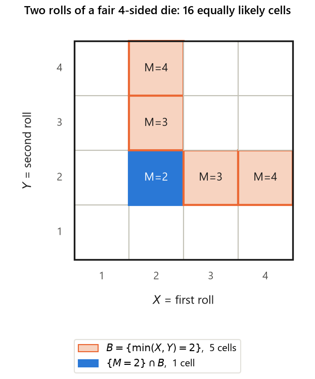
(a) Find the probability that doubles are rolled.
(b) Given that the roll results in a sum of 4 or less, find the conditional probability that doubles are rolled.
(c) Find the probability that at least one die roll is a 6.
(d) Given that the two dice land on different numbers, find the conditional probability that at least one die roll is a 6.
Solution
Model. An outcome is an ordered pair $(i,j)$, $i$ = first die, $j$ = second die, each in $\{1,\dots,6\}$; $|\Omega| = 6 \times 6 = 36$ and every outcome has probability $1/36$ (given). "Ordered" matters: $(1,2)$ and $(2,1)$ are different outcomes, which is what makes all 36 equally likely.
(a) Let $D = \{(i,j) : i = j\}$ be the event "doubles". Its elements are $(1,1),(2,2),(3,3),(4,4),(5,5),(6,6)$, so $|D| = 6$ and, by the discrete uniform law, $$\mathbf{P}(D) = \frac{|D|}{|\Omega|} = \frac{6}{36} = \frac{1}{6} \approx 0.1667 .$$
(b) Let $S = \{(i,j) : i + j \le 4\}$ be the conditioning event. Enumerate it by first coordinate: $i=1$ allows $j \in \{1,2,3\}$; $i=2$ allows $j \in \{1,2\}$; $i=3$ allows $j = 1$; $i \ge 4$ allows nothing. Hence $$S = \{(1,1),(1,2),(1,3),(2,1),(2,2),(3,1)\}, \qquad |S| = 6,$$ matching the official solution. Of these, the doubles are $(1,1)$ and $(2,2)$, so $|D \cap S| = 2$ and $$\mathbf{P}(D \mid S) = \frac{\mathbf{P}(D \cap S)}{\mathbf{P}(S)} = \frac{2/36}{6/36} = \frac{2}{6} = \frac{1}{3} \approx 0.3333 .$$ Conditioning doubled the chance of doubles ($1/6 \to 1/3$): small sums force the two dice to be close, and "close" is a step toward "equal".
(c) Let $T$ = "at least one roll is a 6". Counting directly, as the official solution does: the outcomes $(6,i)$ for $i = 1,\dots,5$ (five of them), the outcomes $(i,6)$ for $i = 1,\dots,5$ (five more), and $(6,6)$ (one), for a total $|T| = 5 + 5 + 1 = 11$. So $$\mathbf{P}(T) = \frac{11}{36} \approx 0.3056 .$$ Cross-check by complement: no 6 at all leaves $5 \times 5 = 25$ outcomes, and $36 - 25 = 11$. ✓ (The naive "$6 + 6 = 12$" double-counts $(6,6)$.)
(d) Let $U = D^c$ = "the dice land on different numbers". [Filling the gap the official solution leaves: it asserts the counts 30 and 10 without derivation.] Since $D$ and $U$ partition $\Omega$, $$|U| = |\Omega| - |D| = 36 - 6 = 30 .$$ For the numerator, $T \cap U$ is "at least one 6 and the two dice differ". From the list in (c), the only element of $T$ that is a double is $(6,6)$; removing it, $$|T \cap U| = |T| - 1 = 11 - 1 = 10 .$$ Therefore $$\mathbf{P}(T \mid U) = \frac{|T \cap U|}{|U|} = \frac{10}{30} = \frac{1}{3} \approx 0.3333 .$$ Note that $\mathbf{P}(T \mid U) = 1/3 > 11/36 = \mathbf{P}(T)$: excluding doubles removes five outcomes with no 6 for every one outcome with a 6, which tilts the balance toward $T$.
Solution
Setting up. Let $A$ = "the first toss is a head" and $B$ = "the second toss is a head". Then "two heads" is the event $A \cap B$. Alice's two pieces of information are the conditioning events $A$ ("first toss is a head") and $A \cup B$ ("at least one toss is a head"). So the claim to check is $$\mathbf{P}(A \cap B \mid A) \;\ge\; \mathbf{P}(A \cap B \mid A \cup B).$$
Step 1 — simplify each side using the definition. For the left side, apply the definition with conditioning event $A$, and note that the numerator event $(A \cap B) \cap A$ equals $A \cap B$ because $A \cap B \subseteq A$ (intersecting with a superset changes nothing): $$\mathbf{P}(A \cap B \mid A) = \frac{\mathbf{P}((A\cap B)\cap A)}{\mathbf{P}(A)} = \frac{\mathbf{P}(A \cap B)}{\mathbf{P}(A)} .$$ For the right side, the same move with conditioning event $A \cup B$, using $(A \cap B) \cap (A \cup B) = A \cap B$ because $A \cap B \subseteq A \cup B$: $$\mathbf{P}(A \cap B \mid A \cup B) = \frac{\mathbf{P}((A\cap B)\cap(A\cup B))}{\mathbf{P}(A \cup B)} = \frac{\mathbf{P}(A \cap B)}{\mathbf{P}(A \cup B)} .$$ [The recitation PDF prints this last fraction as $\frac{A \cap B}{A \cup B}$, dropping the $\mathbf{P}(\cdot)$'s — a typo; the operators belong there.]
Step 2 — compare. The two expressions have the same numerator $\mathbf{P}(A\cap B)$, so the comparison is entirely a comparison of denominators. Since $A \subseteq A \cup B$, monotonicity of probability (§1: $E \subseteq F \Rightarrow \mathbf{P}(E) \le \mathbf{P}(F)$) gives $$\mathbf{P}(A) \le \mathbf{P}(A \cup B) \;\Longrightarrow\; \frac{\mathbf{P}(A\cap B)}{\mathbf{P}(A)} \;\ge\; \frac{\mathbf{P}(A\cap B)}{\mathbf{P}(A\cup B)} .$$ (A larger positive denominator with a fixed nonnegative numerator gives a smaller quotient.) Alice is right, and nothing in this argument used the coin's bias or even independence of the tosses — only the set inclusion $A \subseteq A \cup B$. So the answer to "does it make a difference if the coin is unfair?" is no: the inequality holds for every probability law on the four outcomes.
Step 3 — the fair-coin numbers. [The official solution quotes $1/2$ and $1/3$ without deriving the four ingredients; here they are.] With a fair coin, $\Omega = \{HH, HT, TH, TT\}$ with each outcome of probability $1/4$. Reading off the outcomes: $$A = \{HH, HT\},\quad B = \{HH, TH\},\quad A \cap B = \{HH\},\quad A \cup B = \{HH, HT, TH\},$$ so $\mathbf{P}(A) = 2/4 = 1/2$, $\mathbf{P}(A \cap B) = 1/4$, and $\mathbf{P}(A \cup B) = 3/4$. Substituting, $$\mathbf{P}(A\cap B \mid A) = \frac{1/4}{1/2} = \frac{1}{2}, \qquad \mathbf{P}(A\cap B \mid A \cup B) = \frac{1/4}{3/4} = \frac{1}{3},$$ and indeed $1/2 \ge 1/3$.
Step 4 — an unfair coin, to confirm the claim is not an artifact of symmetry. Let the tosses be independent with $\mathbf{P}(\text{head}) = p = 0.6$. Then $\mathbf{P}(A \cap B) = p^2 = 0.36$, $\mathbf{P}(A) = p = 0.6$, and by the union formula $\mathbf{P}(A \cup B) = p + p - p^2 = 2p - p^2 = 1.2 - 0.36 = 0.84$. Hence $$\mathbf{P}(A\cap B\mid A) = \frac{0.36}{0.6} = 0.6, \qquad \mathbf{P}(A\cap B \mid A\cup B) = \frac{0.36}{0.84} = \frac{p}{2-p} = 0.428571,$$ and $0.6 \ge 0.428571$. ✓
Step 5 — the generalization, proved. [The recitation solution states it but gives no proof.] Claim: if $A$, $B$, $C$ are events with $$B \subseteq C, \qquad A \cap B = A \cap C, \qquad \mathbf{P}(B) > 0,$$ then $\mathbf{P}(A \mid B) \ge \mathbf{P}(A \mid C)$. Proof: by the definition twice, and then the hypothesis $A\cap B = A\cap C$ on the numerator, $$\mathbf{P}(A \mid B) = \frac{\mathbf{P}(A \cap B)}{\mathbf{P}(B)} = \frac{\mathbf{P}(A \cap C)}{\mathbf{P}(B)} .$$ From $B \subseteq C$ and monotonicity, $0 < \mathbf{P}(B) \le \mathbf{P}(C)$, so replacing the denominator by the larger $\mathbf{P}(C)$ can only decrease the fraction: $$\frac{\mathbf{P}(A\cap C)}{\mathbf{P}(B)} \;\ge\; \frac{\mathbf{P}(A\cap C)}{\mathbf{P}(C)} = \mathbf{P}(A \mid C). \qquad \blacksquare$$ Alice's case is $C = A \cup B$ with the event of interest $A \cap B$: indeed $A \subseteq A\cup B$ and $(A\cap B)\cap A = (A\cap B)\cap(A\cup B) = A \cap B$. The special case $A \subseteq B \subseteq C$ also satisfies the hypotheses, since then $A \cap B = A = A \cap C$.
What it means. The information "the first toss was a head" is more specific than "at least one toss was a head" — it pins down which toss. A sharper conditioning event is a smaller universe, and with the favorable part of the universe unchanged, a smaller universe means a higher conditional probability. The vaguer statement "at least one head" is consistent with the disappointing outcome $TH$, and that extra possibility is what drags $1/2$ down to $1/3$.
Solution
Condition on $\{M = 3\}$: the cells with larger coordinate equal to $3$ are $(1,3), (2,3), (3,3), (3,2), (3,1)$, so $|\{M=3\}| = 5$. Among these, the ones with minimum $1$ are $(1,3)$ and $(3,1)$, so the intersection has $2$ cells. By the counting form of the definition, $$\mathbf{P}(\min = 1 \mid M = 3) = \frac{2}{5} = 0.4 .$$ Sanity check: given $M = 3$, the minimum can only be $1, 2$ or $3$, with counts $2, 2, 1$ — and $\tfrac25 + \tfrac25 + \tfrac15 = 1$.
Solution
The conditioning event $C = \{\min(X,Y) \le 2\}$ is the complement of $\{\min \ge 3\}$, and $\{\min \ge 3\}$ means both coordinates lie in $\{3,4\}$: $2 \times 2 = 4$ cells. So $|C| = 16 - 4 = 12$.
The event $\{X = 1\}$ is the whole first column, $4$ cells, and every one of them has $\min \le 1 \le 2$, so $\{X=1\} \subseteq C$ and $|\{X=1\}\cap C| = 4$. Therefore $$\mathbf{P}(X = 1 \mid \min \le 2) = \frac{4}{12} = \frac{1}{3} \approx 0.3333,$$ up from the unconditional $\mathbf{P}(X=1) = 4/16 = 1/4$: learning that the minimum is small makes a small first roll more plausible.
2.2 The multiplication (chain) rule
Read the definition of conditional probability backwards — multiply through by $\mathbf{P}(B)$ — and it becomes a construction tool rather than a query tool. This is how sequential models are built: you rarely know $\mathbf{P}(A \cap B)$ directly, but you very often know "the chance of the first thing" and "the chance of the second thing given the first".
Derivation of the two-event form. Start from the definition of $\mathbf{P}(B \mid A)$ (legitimate because $\mathbf{P}(A) > 0$): $$\mathbf{P}(B \mid A) = \frac{\mathbf{P}(A \cap B)}{\mathbf{P}(A)} \quad\Longrightarrow\quad \mathbf{P}(A)\,\mathbf{P}(B\mid A) = \mathbf{P}(A \cap B),$$ by multiplying both sides by the nonzero number $\mathbf{P}(A)$. That is the entire content: the multiplication rule is the definition, rearranged.
Derivation of the three-event form (L02 slide 6 states it without proof). Group the first two events and apply the two-event rule to the pair $(A \cap B,\, C)$: $$\mathbf{P}\big((A\cap B) \cap C\big) = \mathbf{P}(A \cap B)\cdot\mathbf{P}\big(C \mid A \cap B\big),$$ which is the two-event rule with "$A$" $= A\cap B$ and "$B$" $= C$; it needs $\mathbf{P}(A \cap B) > 0$. Now expand the first factor by the two-event rule again, $\mathbf{P}(A\cap B) = \mathbf{P}(A)\mathbf{P}(B\mid A)$, and substitute: $$\mathbf{P}(A\cap B\cap C) = \mathbf{P}(A)\,\mathbf{P}(B\mid A)\,\mathbf{P}(C\mid A\cap B).$$ Note carefully that the last factor conditions on both earlier events, $A \cap B$, not on $B$ alone — a distinction the slide makes typographically and which is the single most common transcription error here.
The general form follows by induction on $n$. Base case $n = 2$ is the two-event rule. Inductive step: assume the formula for $n-1$ events and write $\bigcap_{i=1}^{n}A_i = \left(\bigcap_{i=1}^{n-1}A_i\right)\cap A_n$; the two-event rule gives $$\mathbf{P}\!\left(\bigcap_{i=1}^{n} A_i\right) = \mathbf{P}\!\left(\bigcap_{i=1}^{n-1} A_i\right) \cdot \mathbf{P}\!\left(A_n \;\middle|\; \bigcap_{i=1}^{n-1}A_i\right),$$ and the inductive hypothesis expands the first factor into the first $n-1$ factors of the product. ∎ Every conditioning event in the product is legitimate: for each $m \le n-1$ the partial intersection $\bigcap_{i=1}^{m}A_i$ contains $\bigcap_{i=1}^{n-1}A_i$ (intersecting fewer sets can only enlarge the result), so by monotonicity $\mathbf{P}\!\left(\bigcap_{i=1}^{m}A_i\right) \ge \mathbf{P}\!\left(\bigcap_{i=1}^{n-1}A_i\right) > 0$, the last inequality being the theorem's hypothesis.
![A three-stage binary probability tree drawn left to right. From the root, branches labeled P(A) and P(A complement) lead to nodes A and A complement. From A, branches P(B given A) and P(B complement given A) lead to nodes A intersect B and A intersect B complement. From each of the four second-stage nodes, two further branches lead to the eight leaves A intersect B intersect C, and so on. Labels P(C given A intersect B) and P(C complement given A intersect B) are shown on the top pair of third-stage branches.](img/g1_s2_multtree.png)
Solution
Let $R_i$ = "the $i$-th ball drawn is red", $i = 1,2,3$; the event of interest is $R_1 \cap R_2 \cap R_3$. Apply the three-event multiplication rule: $$\mathbf{P}(R_1\cap R_2\cap R_3) = \mathbf{P}(R_1)\,\mathbf{P}(R_2\mid R_1)\,\mathbf{P}(R_3\mid R_1\cap R_2).$$ Each factor is read off the urn's composition at that moment, since given the past all remaining balls are equally likely to be drawn next:
- Initially 5 red out of 8 balls: $\mathbf{P}(R_1) = 5/8$.
- Given $R_1$, one red is gone: 4 red out of 7: $\mathbf{P}(R_2 \mid R_1) = 4/7$.
- Given $R_1 \cap R_2$, two reds are gone: 3 red out of 6: $\mathbf{P}(R_3\mid R_1\cap R_2) = 3/6 = 1/2$.
Multiplying, $$\mathbf{P}(R_1\cap R_2\cap R_3) = \frac{5}{8}\cdot\frac{4}{7}\cdot\frac{3}{6} = \frac{60}{336} = \frac{5}{28} \approx 0.178571 .$$ Notice how each conditional factor uses the full history (how many reds were removed), which is exactly why the third factor conditions on $R_1 \cap R_2$ and not on $R_2$ alone.
2.3 Total probability theorem: divide and conquer
The second tool sums the multiplication rule over a set of mutually exclusive scenarios. L02 slide 7 calls the idea "divide and conquer": if you cannot compute $\mathbf{P}(B)$ head-on, split the world into cases in which $B$'s probability is known, and average.
Derivation (the slide states the formula only; here are the two steps it compresses).
Step 1 — cut $B$ into pieces. Because the $A_i$ cover $\Omega$, every outcome of $B$ lies in exactly one $A_i$, so $$B = B \cap \Omega = B \cap (A_1 \cup A_2 \cup A_3) = (A_1 \cap B) \cup (A_2 \cap B) \cup (A_3 \cap B),$$ using $\Omega \cap B = B$ and distributivity. The three pieces are disjoint: if an outcome were in $(A_i\cap B)$ and $(A_j\cap B)$ with $i \ne j$, it would lie in $A_i \cap A_j = \varnothing$. This is the picture in Fig. 2.3: the two dividing curves slice the grey ellipse $B$ into three arcs.
Step 2 — add, then factor each piece. The additivity axiom applied to three disjoint events gives $$\mathbf{P}(B) = \mathbf{P}(A_1 \cap B) + \mathbf{P}(A_2 \cap B) + \mathbf{P}(A_3 \cap B),$$ and the multiplication rule of §2.2 rewrites each term as $\mathbf{P}(A_i \cap B) = \mathbf{P}(A_i)\,\mathbf{P}(B\mid A_i)$ (legal since $\mathbf{P}(A_i) > 0$). Substituting all three: $$\mathbf{P}(B) = \mathbf{P}(A_1)\mathbf{P}(B\mid A_1) + \mathbf{P}(A_2)\mathbf{P}(B\mid A_2) + \mathbf{P}(A_3)\mathbf{P}(B\mid A_3). \qquad \blacksquare$$ The same two steps work for any finite $n$, and (using countable additivity, L01 slide 11; L02 slide 2 axiom 3′) for a countably infinite partition.
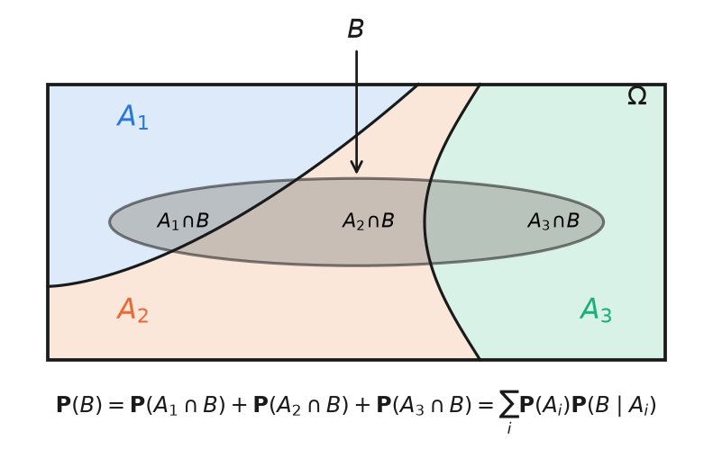
Solution
[The recitation solution delegates this entirely to the textbook — no computation appears in the source. Here it is in full.]
Step 1 — name the events and the partition. Let $A_i$ = "the opponent drawn is of type $i$", $i = 1,2,3$, and let $B$ = "you win the game". "A randomly chosen opponent" means the chance of drawing a type-$i$ opponent equals that type's share of the field: $$\mathbf{P}(A_1) = 0.5, \qquad \mathbf{P}(A_2) = 0.25, \qquad \mathbf{P}(A_3) = 0.25 .$$ These are mutually exclusive (an opponent has one type) and collectively exhaustive (every opponent has a type), so $\{A_1,A_2,A_3\}$ is a partition — and as an audit, $0.5 + 0.25 + 0.25 = 1$. ✓ The data of the problem are exactly the conditional probabilities $$\mathbf{P}(B\mid A_1) = 0.3, \qquad \mathbf{P}(B\mid A_2) = 0.4, \qquad \mathbf{P}(B\mid A_3) = 0.5 .$$
Step 2 — apply the total probability theorem. Compute the three joint probabilities first (multiplication rule): $$\mathbf{P}(A_1 \cap B) = \mathbf{P}(A_1)\mathbf{P}(B\mid A_1) = 0.5 \times 0.3 = 0.15,$$ $$\mathbf{P}(A_2 \cap B) = \mathbf{P}(A_2)\mathbf{P}(B\mid A_2) = 0.25 \times 0.4 = 0.10,$$ $$\mathbf{P}(A_3 \cap B) = \mathbf{P}(A_3)\mathbf{P}(B\mid A_3) = 0.25 \times 0.5 = 0.125 .$$ Adding the three disjoint pieces (Step 2 of the derivation above): $$\mathbf{P}(B) = 0.15 + 0.10 + 0.125 = 0.375 .$$
Step 3 — interpret. $0.375$ sits inside $[0.3,\,0.5]$, the range of the per-type win probabilities, as the weighted-average reading demands. It is closer to $0.3$ than to $0.5$ because half the field is type 1. Note that $0.375$ is not the plain average $(0.3+0.4+0.5)/3 = 0.4$: the types are not equally likely, and ignoring the weights would overstate your chances.
Solution
Let $O$ = "item came from the old machine", $N = O^c$ = "from the new machine", $D$ = "item is defective". $\{O, N\}$ is a partition with $\mathbf{P}(O) = 0.6$, $\mathbf{P}(N) = 0.4$ (sum $=1$ ✓), and the given data are $\mathbf{P}(D\mid O) = 0.03$, $\mathbf{P}(D \mid N) = 0.01$. Total probability: $$\mathbf{P}(D) = \mathbf{P}(O)\mathbf{P}(D\mid O) + \mathbf{P}(N)\mathbf{P}(D\mid N) = 0.6\times 0.03 + 0.4 \times 0.01 = 0.018 + 0.004 = 0.022 .$$ So $2.2\%$ of output is defective — between $1\%$ and $3\%$, as the weighted-average bound requires.
2.4 Bayes' rule: revising beliefs
The third tool answers the inverse question. L02 slide 8 sets it up in the language of belief: the $\mathbf{P}(A_i)$ are prior probabilities — initial beliefs about which scenario holds; the $\mathbf{P}(B \mid A_i)$ describe how each scenario generates observations; and after observing $B$ you want the posterior $\mathbf{P}(A_i \mid B)$, the revised beliefs. The rule that performs the revision is nothing more than the definition plus the two previous tools.
Derivation, one equality at a time. The first equality is the definition of conditional probability (§2.1) applied with conditioning event $B$; it needs $\mathbf{P}(B) > 0$. The second replaces the numerator using the multiplication rule, $\mathbf{P}(A_i \cap B) = \mathbf{P}(A_i)\mathbf{P}(B\mid A_i)$, which is legal since $\mathbf{P}(A_i) > 0$; this converts an unknown joint probability into two knowns. The third — the step the slide performs silently — substitutes the total probability theorem of §2.3 into the denominator: $$\mathbf{P}(B) = \sum_{j} \mathbf{P}(A_j)\mathbf{P}(B\mid A_j),$$ which is available precisely because the $A_i$ form a partition. After this substitution the right-hand side contains only the prior probabilities and the conditional probabilities you were given: the rule is fully computable from the model's inputs. ∎
Step 0 — read the model, and audit it. The prior $\mathbf{P}(A) = 0.05$ says planes are rare: on a randomly chosen scan, one chance in twenty. The radar is described by two conditional probabilities: its sensitivity $\mathbf{P}(B\mid A) = 0.99$ (it detects a real plane $99\%$ of the time) and its false-alarm rate $\mathbf{P}(B\mid A^c) = 0.10$ (it registers something on $10\%$ of empty skies). Audit the branch pairs: $0.05 + 0.95 = 1$ ✓, $0.99 + 0.01 = 1$ ✓, $0.10 + 0.90 = 1$ ✓ — each node's branches form a conditional probability law and must normalize.
Step 1 — $\mathbf{P}(A\cap B)$ by the multiplication rule (§2.2). $$\mathbf{P}(A \cap B) = \mathbf{P}(A)\,\mathbf{P}(B\mid A) = 0.05 \times 0.99 = 0.0495 .$$ This is the probability of the top leaf of the tree: "a plane is there and the radar sees it".
Step 2 — the other three leaves, for completeness and as a check. $$\mathbf{P}(A\cap B^c) = 0.05 \times 0.01 = 0.0005, \qquad \mathbf{P}(A^c \cap B) = 0.95 \times 0.10 = 0.0950, \qquad \mathbf{P}(A^c\cap B^c) = 0.95 \times 0.90 = 0.8550 .$$ Sum of all four leaves: $0.0495 + 0.0005 + 0.0950 + 0.8550 = 1.0$ ✓ — the leaves partition $\Omega$.
Step 3 — $\mathbf{P}(B)$ by the total probability theorem (§2.3) over the two-element partition $\{A, A^c\}$: $$\mathbf{P}(B) = \mathbf{P}(A)\mathbf{P}(B\mid A) + \mathbf{P}(A^c)\mathbf{P}(B\mid A^c) = 0.0495 + 0.0950 = 0.1445 .$$ Equivalently: add the two leaves in which $B$ occurs. About one scan in seven produces a blip.
Step 4 — $\mathbf{P}(A\mid B)$ by Bayes' rule (§2.4). $$\mathbf{P}(A \mid B) = \frac{\mathbf{P}(A \cap B)}{\mathbf{P}(B)} = \frac{\mathbf{P}(A)\mathbf{P}(B\mid A)}{\mathbf{P}(A)\mathbf{P}(B\mid A) + \mathbf{P}(A^c)\mathbf{P}(B\mid A^c)} = \frac{0.0495}{0.1445} = 0.342561 \approx 0.3426 .$$ The complementary posterior is $\mathbf{P}(A^c\mid B) = 0.0950/0.1445 = 0.657439$, and $0.342561 + 0.657439 = 1$ ✓.
Step 5 — the other posterior, for contrast. If nothing registers, $$\mathbf{P}(A\mid B^c) = \frac{\mathbf{P}(A\cap B^c)}{\mathbf{P}(B^c)} = \frac{0.0005}{1 - 0.1445} = \frac{0.0005}{0.8555} = 0.000584 .$$ So a clean screen is very strong evidence of empty sky, while a blip is weak evidence of a plane. The asymmetry is entirely due to the priors.
![Two-stage probability tree for the radar model. From the root, a blue branch labeled P(A)=0.05 goes to node A, plane above; a grey branch labeled P(A complement)=0.95 goes to node A complement, no plane. From A, branches P(B|A)=0.99 and P(B complement|A)=0.01 reach leaves A intersect B with value 0.05 times 0.99 equals 0.0495, and A intersect B complement with 0.0005. From A complement, branches 0.10 and 0.90 reach leaves A complement intersect B with 0.0950 and A complement intersect B complement with 0.8550. A bracket joins the two leaves containing B and is labeled P(B) = 0.0495 + 0.0950 = 0.1445. Below, P(A|B) = 0.0495/0.1445 approximately 0.3426.](img/g1_s2_radartree.png)
Solution
[Again, the recitation solution refers to the book and shows nothing; the full computation follows.]
Step 1 — identify what is asked. We want $\mathbf{P}(A_1 \mid B)$: the posterior probability of the scenario "type 1 opponent" given the observation "you won". The priors $\mathbf{P}(A_i)$ and the likelihoods $\mathbf{P}(B\mid A_i)$ are exactly the data of Example 2.4, and $\mathbf{P}(B) = 0.375$ was computed there.
Step 2 — Bayes' rule. $$\mathbf{P}(A_1\mid B) = \frac{\mathbf{P}(A_1)\mathbf{P}(B\mid A_1)}{\mathbf{P}(B)} = \frac{0.5 \times 0.3}{0.375} = \frac{0.15}{0.375} = 0.4 .$$
Step 3 — the whole posterior distribution, as a check. $$\mathbf{P}(A_2 \mid B) = \frac{0.10}{0.375} = 0.266667, \qquad \mathbf{P}(A_3\mid B) = \frac{0.125}{0.375} = 0.333333,$$ and $0.4 + 0.266667 + 0.333333 = 1.0$ ✓ (the posterior is a probability law over the partition, by the Property in §2.1).
Step 4 — interpret the shift. The prior on type 1 was $0.5$; after learning that you won it drops to $0.4$. That direction is forced: type-1 players are the strongest opponents ($\mathbf{P}(\text{win}) = 0.3$ is the smallest likelihood), so a win is evidence against having faced one. Symmetrically, type 3 rises from $0.25$ to $0.333333$. Nothing about the field changed — only your information about which opponent you drew.
Step 5 — the mirror question. Had you lost, $\mathbf{P}(B^c) = 1 - 0.375 = 0.625$ and $$\mathbf{P}(A_1 \mid B^c) = \frac{\mathbf{P}(A_1)\mathbf{P}(B^c\mid A_1)}{\mathbf{P}(B^c)} = \frac{0.5 \times 0.7}{0.625} = \frac{0.35}{0.625} = 0.56,$$ up from the prior $0.5$ — a loss is evidence that the opponent was strong. Posterior probabilities move in opposite directions for opposite observations; that is the whole content of "revising beliefs".
Interactive: the Bayes explorer
Bayes' rule has three inputs — the prior $\mathbf{P}(A)$, the sensitivity $\mathbf{P}(B\mid A)$, and the false-alarm rate $\mathbf{P}(B\mid A^c)$ — and one output, the posterior $\mathbf{P}(A\mid B)$. The dependence on the prior is the part that defeats intuition, so the widget plots the posterior as a function of the prior with the current setting marked. The defaults are the radar numbers of Example 2.5; the marked point should read $\mathbf{P}(A\mid B) = 0.342561$ with $\mathbf{P}(B) = 0.1445$, matching Step 4 above.
Three experiments worth running. (1) Keep the radar likelihoods and drag the prior: at $\mathbf{P}(A) = 0.01$ the posterior is only $0.090909$, at $0.05$ it is $0.342561$, at $0.10$ it is $0.523810$, at $0.25$ it is $0.767442$ — the curve is steep near the left edge, which is exactly why rare-event inference is so sensitive to base rates. (2) Set sensitivity equal to the false-alarm rate (say both $0.40$): the curve collapses onto the dashed diagonal and the posterior equals the prior for every prior — a test that responds identically whether or not $A$ holds carries no information. (3) Push the false alarm rate toward $0$ with sensitivity high: the curve bows up to near $1$ almost everywhere, because a blip becomes nearly conclusive.
Solution
Let $S$ = "sick", $T$ = "test is positive". Given: $\mathbf{P}(S) = 0.001$, so $\mathbf{P}(S^c) = 0.999$; $\mathbf{P}(T\mid S) = 0.95$; specificity $0.95$ means $\mathbf{P}(T^c \mid S^c) = 0.95$, hence the false-alarm rate is $\mathbf{P}(T\mid S^c) = 1 - 0.95 = 0.05$.
Joint probabilities (multiplication rule): $$\mathbf{P}(S\cap T) = 0.001\times 0.95 = 0.00095, \qquad \mathbf{P}(S^c \cap T) = 0.999 \times 0.05 = 0.04995 .$$ Total probability: $\mathbf{P}(T) = 0.00095 + 0.04995 = 0.0509$. Bayes' rule: $$\mathbf{P}(S \mid T) = \frac{0.00095}{0.0509} = 0.018664 .$$ Fewer than $2\%$ of positives are genuinely sick, despite a "$95\%$ accurate" test — the same base-rate arithmetic as the radar, pushed harder by a rarer event. (Set the widget to prior $0.001$, sensitivity $0.95$, false alarm $0.05$ to see this point on the curve.)
Solution
The joints were computed there: $\mathbf{P}(O\cap D) = 0.018$, $\mathbf{P}(N\cap D) = 0.004$, $\mathbf{P}(D) = 0.022$. Bayes' rule: $$\mathbf{P}(O\mid D) = \frac{\mathbf{P}(O)\mathbf{P}(D\mid O)}{\mathbf{P}(D)} = \frac{0.018}{0.022} = 0.818182 .$$ The prior $0.6$ rises to $0.818182$ because the old machine is both more prolific and more error-prone — both factors push the numerator up. Check: $\mathbf{P}(N \mid D) = 0.004/0.022 = 0.181818$ and the two sum to $1$.
2.5 Which tool? A decision guide
Students rarely fail these problems because a formula was misremembered; they fail because the wrong formula was reached for. The three tools are distinguished entirely by what you are given and what you want, and Fig. 2.5 makes that the explicit branch point.
![Flowchart. Top box: what is given, and what is asked? Three arrows labeled chain forward, sum over causes, and invert lead to three boxes: given P(A) and stage-by-stage P(B|A), want P(A and B); given a partition Ai with P(Ai) and P(B|Ai), want P(B); given the same data plus B observed, want P(Ai|B). Each leads down to the corresponding formula box: multiplication rule, total probability theorem, Bayes' rule. Horizontal arrows show the multiplication rule supplying one term per branch to total probability, and total probability supplying the denominator of Bayes' rule. A bottom box says: always check that branch probabilities out of each node sum to 1 and leaf probabilities sum to 1.](img/g1_s2_toolflow.png)
- Write the model as a tree or a grid. If the experiment has stages ("first this, then that"), it is a tree and the branch labels are conditional probabilities given the whole past. If it is one shot with equally likely outcomes, it is a grid and everything is counting (§2.1).
- Ask what is given. If you have been handed numbers of the form "$\mathbf{P}(\text{next thing} \mid \text{history})$", they belong on branches, and the tools below apply. If you have been handed a joint probability directly, you may not need any of them.
- Ask what is wanted.
- A single conjunction, "$A$ and $B$ (and $C$)" $\Rightarrow$ multiplication rule: multiply along one root-to-leaf path, $\mathbf{P}(A)\mathbf{P}(B\mid A)\mathbf{P}(C\mid A\cap B)$.
- The unconditional probability of a late-stage event, "$\mathbf{P}(B)$" $\Rightarrow$ total probability: find a partition $\{A_i\}$ under which $\mathbf{P}(B\mid A_i)$ is known, then add $\mathbf{P}(A_i)\mathbf{P}(B\mid A_i)$ over $i$ — equivalently, add the leaf probabilities of all leaves lying in $B$.
- A conditional probability pointing backwards in time, "given the late observation $B$, which early scenario $A_i$?" $\Rightarrow$ Bayes' rule: numerator $\mathbf{P}(A_i)\mathbf{P}(B\mid A_i)$ (one leaf), denominator the total probability sum (all leaves in $B$).
- Identify the partition explicitly before using the last two tools, and verify $\sum_i \mathbf{P}(A_i) = 1$.
- Audit. Branch probabilities out of each node sum to $1$; leaf probabilities sum to $1$; every answer lies in $[0,1]$; a posterior distribution over the partition sums to $1$; a total probability lies between the smallest and largest conditional.
(i) What fraction of scans show a blip?
(ii) What is the chance that a plane is there and the radar misses it?
(iii) The screen just lit up; is there a plane?
(iv) The screen is clean; is there a plane?
Solution
Run the recipe: ask what is given (here, the prior $\mathbf{P}(A)$ and the two likelihoods $\mathbf{P}(B\mid A)$, $\mathbf{P}(B\mid A^c)$ — all "given the past" numbers, so they sit on branches) and then what is wanted.
- (i) An unconditional probability of a late-stage event $\Rightarrow$ total probability over the partition $\{A, A^c\}$: $$\mathbf{P}(B) = \mathbf{P}(A)\mathbf{P}(B\mid A) + \mathbf{P}(A^c)\mathbf{P}(B\mid A^c).$$ Equivalently, add the two leaves lying in $B$. (Step 3 of Example 2.5 evaluates it to $0.1445$.)
- (ii) A single conjunction, "plane and no blip" $\Rightarrow$ multiplication rule, one root-to-leaf product: $$\mathbf{P}(A \cap B^c) = \mathbf{P}(A)\,\mathbf{P}(B^c\mid A).$$ (Step 2 evaluates it to $0.0005$.)
- (iii) A conditional probability pointing backwards — early scenario given late observation $\Rightarrow$ Bayes' rule, with (ii)-style numerator and (i) as denominator: $$\mathbf{P}(A\mid B) = \frac{\mathbf{P}(A)\mathbf{P}(B\mid A)}{\mathbf{P}(A)\mathbf{P}(B\mid A) + \mathbf{P}(A^c)\mathbf{P}(B\mid A^c)}.$$ (Step 4: $0.342561$.)
- (iv) Also Bayes' rule, with the observation $B^c$ in place of $B$ — the tool is chosen by the direction of the conditioning bar, not by which of $B$, $B^c$ was seen: $$\mathbf{P}(A\mid B^c) = \frac{\mathbf{P}(A)\mathbf{P}(B^c\mid A)}{\mathbf{P}(A)\mathbf{P}(B^c\mid A) + \mathbf{P}(A^c)\mathbf{P}(B^c\mid A^c)}.$$ (Step 5: $0.000584$.)
The audit from the Recipe's last step applies to all four: the branch pairs $0.05+0.95$, $0.99+0.01$, $0.10+0.90$ each sum to $1$, and the posteriors in (iii) sum to $1$ with their complements.
2.6 The Monty Hall problem
(a) Stick to your initial choice.
(b) Switch to the other unopened door.
(c) You first point to door 1. If door 2 is opened, you do not switch. If door 3 is opened, you switch.
Which is the best strategy?
Solution
Step 0 — the model, stated precisely. Following the recitation solution, define three families of events for $i = 1,2,3$:
- $P_i$ = "the prize is behind door $i$". Given: $\mathbf{P}(P_1) = \mathbf{P}(P_2) = \mathbf{P}(P_3) = 1/3$ (equally likely, and $\{P_1,P_2,P_3\}$ is a partition).
- $C_i$ = "you initially point to door $i$". Your pointing is made in ignorance of the prize, i.e. $C_i$ is independent of the $P_j$: $\mathbf{P}(C_i \mid P_j) = \mathbf{P}(C_i)$ for all $i,j$. This is the assumption the official solution uses silently when it replaces $\mathbf{P}(C_i\mid P_i)$ by $\mathbf{P}(C_i)$; it is a modeling assumption, and it is what "you point at a door" means here. The $C_i$ also form a partition, so $\mathbf{P}(C_1)+\mathbf{P}(C_2)+\mathbf{P}(C_3) = 1$ — the second fact the solution uses without comment.
- $O_j$ = "your friend (the host) opens door $j$". The host's rule: he opens a door that is neither your door nor the prize door. If you chose the prize door, two doors qualify and he must break the tie somehow; write $$q = \mathbf{P}(O_2 \mid P_1 \cap C_1)$$ for the probability that he opens door 2 in that tied situation (so $\mathbf{P}(O_3\mid P_1\cap C_1) = 1-q$). If you did not choose the prize door, exactly one door qualifies and the corresponding conditional probability is $1$: for instance $\mathbf{P}(O_3\mid P_2\cap C_1) = 1$, because door 1 is yours and door 2 hides the prize.
Fig. 2.6 is this tree in the case $C_1$ (you point at door 1), with every branch probability and every leaf probability shown, plus the win/lose verdict of each strategy at each leaf.
(a) Stick to your initial choice. Sticking wins exactly when the prize is behind the door you first pointed at, i.e. on the event $\bigcup_i (P_i \cap C_i)$, a union of three disjoint events (they are disjoint because the $P_i$ are). By additivity, then the multiplication rule, then independence, then $\mathbf{P}(P_i) = 1/3$: $$ \begin{aligned} \mathbf{P}(\text{win, stick}) &= \mathbf{P}(P_1\cap C_1) + \mathbf{P}(P_2\cap C_2) + \mathbf{P}(P_3\cap C_3) &&\text{(additivity, disjoint)}\\ &= \mathbf{P}(P_1)\mathbf{P}(C_1\mid P_1) + \mathbf{P}(P_2)\mathbf{P}(C_2\mid P_2) + \mathbf{P}(P_3)\mathbf{P}(C_3\mid P_3) &&\text{(multiplication rule)}\\ &= \mathbf{P}(P_1)\mathbf{P}(C_1) + \mathbf{P}(P_2)\mathbf{P}(C_2) + \mathbf{P}(P_3)\mathbf{P}(C_3) &&\text{(your choice is independent of the prize)}\\ &= \tfrac13\big(\mathbf{P}(C_1)+\mathbf{P}(C_2)+\mathbf{P}(C_3)\big) &&\text{(each } \mathbf{P}(P_i)=\tfrac13\text{, factor it out)}\\ &= \tfrac13 \cdot 1 \;=\; \tfrac13 \approx 0.333333 &&\text{(the } C_i \text{ partition } \Omega). \end{aligned} $$ Note what does not appear: the host's behavior. Sticking ignores everything that happens after your first pick, so its success probability is frozen at the initial $1/3$.
(b) Switch to the other unopened door. Switching wins exactly when your initial pick was wrong — because then the host is forced to open the only other empty door, leaving the prize behind the door you switch to. Enumerating the six (prize, choice) mismatches, each with the host's forced opening: $$ \begin{aligned} \mathbf{P}(\text{win, switch}) &= \mathbf{P}(P_1\cap C_2\cap O_3) + \mathbf{P}(P_1\cap C_3\cap O_2) + \mathbf{P}(P_2\cap C_1\cap O_3)\\ &\quad + \mathbf{P}(P_2\cap C_3\cap O_1) + \mathbf{P}(P_3\cap C_1\cap O_2) + \mathbf{P}(P_3\cap C_2\cap O_1). \end{aligned} $$ [Gap filled:] each of these six triple intersections collapses to a double one. By the multiplication rule, e.g. $$\mathbf{P}(P_1\cap C_2\cap O_3) = \mathbf{P}(P_1\cap C_2)\cdot \mathbf{P}(O_3\mid P_1\cap C_2) = \mathbf{P}(P_1\cap C_2)\cdot 1 = \mathbf{P}(P_1\cap C_2),$$ because with the prize behind door 1 and your finger on door 2, the host has no choice but door 3. The same holds for the other five terms. Hence $$ \begin{aligned} \mathbf{P}(\text{win, switch}) &= \mathbf{P}(P_1\cap C_2) + \mathbf{P}(P_1\cap C_3) + \mathbf{P}(P_2\cap C_1) + \mathbf{P}(P_2\cap C_3) + \mathbf{P}(P_3\cap C_1) + \mathbf{P}(P_3\cap C_2)\\ &= \mathbf{P}(P_1)\mathbf{P}(C_2) + \mathbf{P}(P_1)\mathbf{P}(C_3) + \mathbf{P}(P_2)\mathbf{P}(C_1) + \mathbf{P}(P_2)\mathbf{P}(C_3) + \mathbf{P}(P_3)\mathbf{P}(C_1) + \mathbf{P}(P_3)\mathbf{P}(C_2) \end{aligned} $$ by independence. [Gap filled — the grouping that produces $2/3$:] substitute $\mathbf{P}(P_i) = 1/3$ everywhere and collect the terms by which $C_j$ they contain. Each $\mathbf{P}(C_j)$ appears exactly twice (once with each $P_i$, $i \ne j$): $$= \tfrac13\big[\mathbf{P}(C_2)+\mathbf{P}(C_3)\big] + \tfrac13\big[\mathbf{P}(C_1)+\mathbf{P}(C_3)\big] + \tfrac13\big[\mathbf{P}(C_1)+\mathbf{P}(C_2)\big] = \tfrac13 \cdot 2\big[\mathbf{P}(C_1)+\mathbf{P}(C_2)+\mathbf{P}(C_3)\big] = \tfrac23 \cdot 1 = \tfrac23 \approx 0.666667 .$$ An independent check: sticking and switching are complementary given the host has opened a door (you win with exactly one of them), so the two probabilities must sum to $1$: $1/3 + 2/3 = 1$ ✓.
(c) The mixed strategy. You point to door 1; if door 2 is opened you keep door 1, if door 3 is opened you switch to door 2. So, conditioning throughout on $C_1$, you win in exactly two situations: the prize is behind door 1 and the host opens door 2 (you keep door 1 and it is right), or the prize is behind door 2 and the host opens door 3 (you switch to door 2 and it is right). These are disjoint, so $$ \begin{aligned} \mathbf{P}(\text{win, mixed}\mid C_1) &= \mathbf{P}(P_1\cap O_2 \mid C_1) + \mathbf{P}(P_2\cap O_3\mid C_1) &&\text{(additivity, in the universe } C_1)\\ &= \mathbf{P}(P_1\mid C_1)\mathbf{P}(O_2 \mid P_1\cap C_1) + \mathbf{P}(P_2\mid C_1)\mathbf{P}(O_3\mid P_2\cap C_1) &&\text{(multiplication rule for } \mathbf{P}(\cdot\mid C_1))\\ &= \mathbf{P}(P_1)\mathbf{P}(O_2\mid P_1\cap C_1) + \mathbf{P}(P_2)\mathbf{P}(O_3\mid P_2\cap C_1) &&\text{(independence of choice and prize)}\\ &= \tfrac13\, q + \tfrac13 \cdot 1 &&\text{(the host is forced when the prize is behind 2)}\\ &= \tfrac13\,(q+1). \end{aligned} $$ The substitution $\mathbf{P}(O_3\mid P_2\cap C_1) = 1$ is the step the recitation makes without comment: door 1 is yours and door 2 hides the prize, so door 3 is the host's only legal move. The answer therefore depends on the host's tie-breaking rule $q = \mathbf{P}(O_2\mid P_1\cap C_1)$: $$q = 1 \;(\text{host always opens door 2 when free}) \;\Rightarrow\; \tfrac13(1+1) = \tfrac23 \approx 0.666667,$$ $$q = \tfrac12 \;(\text{host tosses a fair coin}) \;\Rightarrow\; \tfrac13\left(\tfrac12+1\right) = \tfrac12 = 0.5 .$$
Verdict. [The recitation computes the three numbers but never answers the question asked.] Strategy (b), always switch, is the best. It wins with probability $2/3 \approx 0.666667$ whatever the host's tie-breaking rule — the host's freedom only enters through leaves where you had already chosen correctly, and switching loses on all of those regardless. Strategy (a) wins $1/3$. Strategy (c) wins $\tfrac13(q+1)$, which ranges over $[1/3, 2/3]$ as $q$ ranges over $[0,1]$: it equals $2/3$ only in the lucky case $q=1$, and drops to $1/2$ for the natural fair-coin host. Since (c) is never better than (b) and is usually worse, and since (b) never depends on an assumption about the host that you may have gotten wrong, (b) dominates.
An exhaustive cross-check. Enumerating all cases with $C_1$ fixed, a fair-coin host, and probabilities carried as exact fractions gives win probabilities $1/3$ (stick), $2/3$ (switch), $1/2$ (mixed); with $q = 1$ the mixed strategy gives $2/3$. A Monte Carlo run of $200000$ games gave a stick frequency of $0.33372$ and a switch frequency of $0.66628$, consistent with $1/3$ and $2/3$.
![Monty Hall tree with you always choosing door 1. Three branches of probability one third lead to nodes P1, P2, P3 (prize behind door 1, 2, 3). From P1 two branches labeled P(O2 | P1 and C1) = q and P(O3 | P1 and C1) = 1 minus q lead to leaves O2 and O3 with leaf probabilities q/3 and (1-q)/3. From P2 a single branch of probability 1 leads to leaf O3 with probability 1/3. From P3 a single branch of probability 1 leads to leaf O2 with probability 1/3. Three columns to the right mark each leaf as a Win or Loss under strategy (a) stick, (b) switch, and (c) mixed: row 1 W L W, row 2 W L L, row 3 L W W, row 4 L W L.](img/g1_s2_montytree.png)
Bayes' rule makes this quantitative. Suppose you chose door 1 and the host opened door 3, with a fair-coin host ($q = 1/2$). The two relevant joints are $\mathbf{P}(P_1 \cap O_3 \mid C_1) = \tfrac13 (1-q) = \tfrac13\cdot\tfrac12 = \tfrac16$ and $\mathbf{P}(P_2\cap O_3\mid C_1) = \tfrac13 \cdot 1 = \tfrac13$, so $\mathbf{P}(O_3 \mid C_1) = \tfrac16 + \tfrac13 = \tfrac12$ and $$\mathbf{P}(P_1 \mid C_1 \cap O_3) = \frac{1/6}{1/2} = \frac{1}{3}, \qquad \mathbf{P}(P_2\mid C_1\cap O_3) = \frac{1/3}{1/2} = \frac{2}{3} .$$ The posterior on your own door is exactly its prior $1/3$: the observation was uninformative about door 1. All of the information went into redistributing the other $2/3$ from a two-door pool onto a single door. That is the whole trick, and it is why the answer is a redistribution, not a coin flip.
Push the intuition further with 100 doors: you pick one ($1/100$), the host opens 98 empty ones, and the single remaining door now carries $99/100$. Nobody defends 50-50 in that version, and the logic is identical.
Interactive: Monty Hall simulator
Simulation cannot prove the result, but it does settle the argument quickly. Each game below draws a uniform prize location, fixes your pick at door 1, has the host open a legal empty door (fair coin when he has a choice), and records whether sticking and whether switching would have won. The plot shows the two running relative frequencies against the number of games played, with the theoretical $1/3$ and $2/3$ drawn in.
Solution
Sticking. As in part (a) of Example 2.7, sticking wins exactly when your blind initial pick was right: $\mathbf{P} = 1/4 = 0.25$.
Switching. Let $W$ = "you win". Condition on whether your initial pick was correct — a two-element partition $\{P_1, P_1^c\}$ relative to your choice:
• If your first pick was right (probability $1/4$), both doors you might switch to are empty, so $\mathbf{P}(W \mid \text{first pick right}) = 0$.
• If your first pick was wrong (probability $3/4$), the prize is behind one of the three others; the host opens an empty one of those, leaving two unopened non-chosen doors, exactly one of which hides the prize. Choosing between them at random, $\mathbf{P}(W\mid \text{first pick wrong}) = 1/2$.
Total probability:
$$\mathbf{P}(W) = \frac14\cdot 0 + \frac34\cdot\frac12 = \frac{3}{8} = 0.375 .$$
So switching still beats sticking ($0.375 > 0.25$), but by less than in the three-door game, because with four doors the host removes only one of the three "other" doors and the released probability has to be shared between two survivors. If instead the host opened two empty doors, the single remaining door would carry the whole $3/4$.
Solution
Only $P_1$ and $P_3$ are possible after $O_2$ (if the prize were behind door 2 the host could not have opened it, so $\mathbf{P}(O_2 \mid P_2 \cap C_1) = 0$). The two surviving joints, using the multiplication rule inside the universe $C_1$: $$\mathbf{P}(P_1\cap O_2\mid C_1) = \mathbf{P}(P_1)\,\mathbf{P}(O_2\mid P_1\cap C_1) = \tfrac13\cdot\tfrac12 = \tfrac16,$$ $$\mathbf{P}(P_3\cap O_2\mid C_1) = \mathbf{P}(P_3)\,\mathbf{P}(O_2\mid P_3\cap C_1) = \tfrac13\cdot 1 = \tfrac13 .$$ Total probability of the observation: $\mathbf{P}(O_2\mid C_1) = \tfrac16 + \tfrac13 = \tfrac12$. Bayes' rule: $$\mathbf{P}(P_1\mid C_1\cap O_2) = \frac{1/6}{1/2} = \frac13, \qquad \mathbf{P}(P_3\mid C_1\cap O_2) = \frac{1/3}{1/2} = \frac23 .$$ Identical to the $O_3$ computation in the Interpretation box, as symmetry demands — which is exactly why the switching strategy's $2/3$ does not depend on which door the host opens.
§3 Independence
Sources: L03 slides 1–8 (raster p01–p02) · rec03 problems 1–4 · Bertsekas–Tsitsiklis §1.5 (Examples 1.20–1.23, Problems 1.31, 1.43(a), 1.44). Every number on this page is recomputed in computes/g1_s3.py; figures in computes/g1_s3_figs.py.
Conditioning is the machinery for updating beliefs when information arrives. Independence is the special case in which the information is worthless: learning that $B$ happened leaves your probability for $A$ exactly where it was. That sounds like a small footnote to §2, but it is the single most productive modeling assumption in the subject — it is what turns a coin into a sequence of coins, a bit into a codeword, and a step into a random walk. It is also the assumption most often asserted where it does not hold, so this section spends as much effort on the traps (disjoint is not independent; pairwise is not mutual; conditioning creates and destroys independence) as on the definition itself.
3.1 Warm-up: sequential models and the biased coin
Before defining independence we replay the tool it will simplify. Recall from §2 the four results that L03 slide 1 puts in red as the working set (all with $\mathbf{P}(B)>0$ where a conditional appears):
$$\mathbf{P}(A\mid B)=\frac{\mathbf{P}(A\cap B)}{\mathbf{P}(B)},\qquad \mathbf{P}(A\cap B)=\mathbf{P}(B)\mathbf{P}(A\mid B)=\mathbf{P}(A)\mathbf{P}(B\mid A),$$ $$\mathbf{P}(B)=\mathbf{P}(A)\mathbf{P}(B\mid A)+\mathbf{P}(A^c)\mathbf{P}(B\mid A^c),\qquad \mathbf{P}(A_i\mid B)=\frac{\mathbf{P}(A_i)\mathbf{P}(B\mid A_i)}{\mathbf{P}(B)}.$$Here $A$, $B$, $A_i$ are events (subsets of the sample space $\Omega$), $A^c$ is the complement of $A$, and $\mathbf{P}$ is the probability law. The multiplication rule is what makes a tree diagram legal: the probability of a leaf is the product of the branch probabilities along the path to it (L03 slide 1; B&T §1.3).
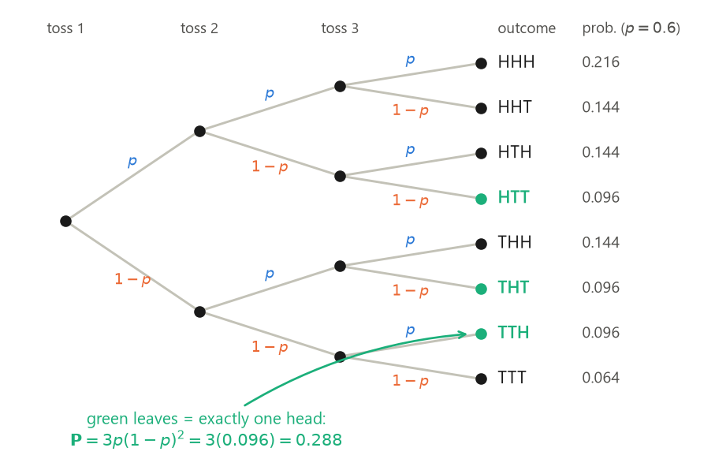
Step 0 — the model. The sample space is $\Omega=\{H,T\}^3$, the eight length-3 strings shown as leaves in Fig. 3.1. Write $H_i$ for the event "toss $i$ is a head" and $T_i=H_i^c$. The problem statement gives us one probability per toss and the assumption that tosses are independent, which (anticipating §3.4) means every intersection of the $H_i$'s and $T_i$'s factors.
Step 1 — probability of one leaf. By the multiplication rule applied twice,
$$\mathbf{P}(T_1\cap H_2\cap T_3)=\mathbf{P}(T_1)\,\mathbf{P}(H_2\mid T_1)\, \mathbf{P}(T_3\mid T_1\cap H_2).$$Independence of the tosses says the conditioning is irrelevant: $\mathbf{P}(H_2\mid T_1)=\mathbf{P}(H_2)=p$ and $\mathbf{P}(T_3\mid T_1\cap H_2)=\mathbf{P}(T_3)=1-p$. Hence
$$\mathbf{P}(THT)=(1-p)\cdot p\cdot (1-p)=p(1-p)^2 =0.6\,(0.4)^2=0.6\cdot 0.16=0.096 .$$Every leaf gets one factor $p$ per $H$ and one factor $1-p$ per $T$; the leaf probability depends only on the number of heads, not on their positions. That symmetry is the whole reason the binomial formula exists (L04 slide 6).
Step 2 — "exactly one head" is a union of leaves. The event $\{1\text{ head}\}=\{HTT,\,THT,\,TTH\}$ is a union of three distinct outcomes, which are disjoint (an outcome is a single sample point, so any two distinct ones are disjoint). The additivity axiom therefore lets us add:
$$\mathbf{P}(1\text{ head})=\mathbf{P}(HTT)+\mathbf{P}(THT)+\mathbf{P}(TTH) =p(1-p)^2+p(1-p)^2+p(1-p)^2=3p(1-p)^2,$$ $$\mathbf{P}(1\text{ head})=3(0.096)=0.288 .$$Step 3 — the conditional probability. The event $\{\text{first toss }H\}\cap\{1\text{ head}\}$ is the single leaf $HTT$, because if the first toss is a head and there is exactly one head in total, the remaining two tosses must be tails. By the definition of conditional probability,
$$\mathbf{P}(H_1\mid 1\text{ head})=\frac{\mathbf{P}(H_1\cap\{1\text{ head}\})}{\mathbf{P}(1\text{ head})} =\frac{\mathbf{P}(HTT)}{3p(1-p)^2}=\frac{p(1-p)^2}{3p(1-p)^2}=\frac{1}{3} =\frac{0.096}{0.288}=0.3333\ldots$$The $p$ cancels: given that exactly one head occurred, it is equally likely to have been toss 1, 2 or 3, whatever the bias. Numerically $1/3$ for every $p\in(0,1)$.
Solution
$\Omega$ has $4\cdot 4=16$ equally likely ordered pairs. $A$ contains the $2\cdot 4=8$ pairs whose first entry is $1$ or $2$, so $\mathbf{P}(A)=8/16=0.5$. The sum is $5$ for $(1,4),(2,3),(3,2),(4,1)$, so $\mathbf{P}(B)=4/16=0.25$. The intersection is $\{(1,4),(2,3)\}$, so $\mathbf{P}(A\cap B)=2/16=0.125$. Since $\mathbf{P}(A)\mathbf{P}(B)=0.5\cdot 0.25=0.125$, the product identity holds and the events are independent — even though $B$ mentions both rolls. Independence is an arithmetic fact about the law, not a statement about which coordinates an event "uses".
Solution
$\{\max=2\}=\{(1,2),(2,1),(2,2)\}$, so $\mathbf{P}(A)=3/16=0.1875$. $\{\min=2\}=\{(2,2),(2,3),(3,2),(2,4),(4,2)\}$, so $\mathbf{P}(B)=5/16=0.3125$. $A\cap B=\{(2,2)\}$, so $\mathbf{P}(A\cap B)=1/16=0.0625$, while $\mathbf{P}(A)\mathbf{P}(B)=0.1875\cdot 0.3125=0.05859375$. These differ, so $A$ and $B$ are dependent: knowing the maximum is small makes a small minimum more likely.
3.2 Independence of two events
L03 slide 3 gives the definition twice and then declares which version is official.
Why promote the product form? Three reasons, all on the slide.
(i) It is symmetric in $A$ and $B$. The right-hand side does not care which event is written first, so "$A$ is independent of $B$" and "$B$ is independent of $A$" are literally the same statement. The conditional form hides this: $\mathbf{P}(B\mid A)=\mathbf{P}(B)$ looks like a statement about $B$ given $A$.
(ii) It applies even when $\mathbf{P}(A)=0$. If $\mathbf{P}(A)=0$ the conditional $\mathbf{P}(B\mid A)$ is undefined (division by zero), but the product identity is still meaningful and in fact automatically true: $A\cap B\subseteq A$ forces $0\le\mathbf{P}(A\cap B)\le\mathbf{P}(A)=0$ by monotonicity, so $\mathbf{P}(A\cap B)=0=0\cdot\mathbf{P}(B)$. A null event is independent of everything.
(iii) It implies the conditional form both ways. Assume $\mathbf{P}(A\cap B)= \mathbf{P}(A)\mathbf{P}(B)$ and $\mathbf{P}(B)>0$. Then by the definition of conditional probability,
$$\mathbf{P}(A\mid B)=\frac{\mathbf{P}(A\cap B)}{\mathbf{P}(B)} =\frac{\mathbf{P}(A)\mathbf{P}(B)}{\mathbf{P}(B)}=\mathbf{P}(A),$$cancelling the nonzero factor $\mathbf{P}(B)$. Conversely, if $\mathbf{P}(B)>0$ and $\mathbf{P}(A\mid B)=\mathbf{P}(A)$, multiply both sides by $\mathbf{P}(B)$ and use the multiplication rule $\mathbf{P}(A\cap B)=\mathbf{P}(B)\mathbf{P}(A\mid B)$ to get $\mathbf{P}(A\cap B)=\mathbf{P}(A)\mathbf{P}(B)$. So on the region where both make sense the two definitions agree, and the product form additionally covers the degenerate cases (L03 slide 3).
Solution
Goal. Show $\mathbf{P}(A\cap B^c)=\mathbf{P}(A)\mathbf{P}(B^c)$, given $\mathbf{P}(A\cap B)=\mathbf{P}(A)\mathbf{P}(B)$.
Step 1 — split $A$ along $B$. Every outcome of $A$ either lies in $B$ or does not, so
$$A=(A\cap B)\cup(A\cap B^c),$$and the two pieces are disjoint because $B$ and $B^c$ are. The additivity axiom gives
$$\mathbf{P}(A)=\mathbf{P}(A\cap B)+\mathbf{P}(A\cap B^c) \quad\Longrightarrow\quad \mathbf{P}(A\cap B^c)=\mathbf{P}(A)-\mathbf{P}(A\cap B).$$Step 2 — use the hypothesis. Substitute $\mathbf{P}(A\cap B)=\mathbf{P}(A)\mathbf{P}(B)$:
$$\mathbf{P}(A\cap B^c)=\mathbf{P}(A)-\mathbf{P}(A)\mathbf{P}(B) =\mathbf{P}(A)\big(1-\mathbf{P}(B)\big).$$Step 3 — recognize the complement rule. Since $\mathbf{P}(B^c)=1-\mathbf{P}(B)$ (normalization plus additivity applied to $\Omega=B\cup B^c$),
$$\mathbf{P}(A\cap B^c)=\mathbf{P}(A)\mathbf{P}(B^c),$$which is exactly the definition of independence for the pair $(A,B^c)$. $\blacksquare$
Corollary. Applying the result twice, $A^c$ and $B^c$ are independent too: $\mathbf{P}(A^c\cap B^c)=\mathbf{P}(A^c)\mathbf{P}(B^c)$. With $\mathbf{P}(A)=0.5$ and $\mathbf{P}(B)=0.4$ this reads $\mathbf{P}(A^c\cap B^c)=0.5\cdot 0.6=0.3$, and indeed $\mathbf{P}(A\cup B)=1-0.3=0.7$, matching the inclusion–exclusion value $0.5+0.4-0.5\cdot 0.4=0.9-0.2=0.7$.
Solution
Apply the definition with $B=A$. Independence of $A$ with itself means
$$\mathbf{P}(A\cap A)=\mathbf{P}(A)\mathbf{P}(A).$$But $A\cap A=A$ (a set intersected with itself is itself), so the condition collapses to the scalar equation $\mathbf{P}(A)=\big(\mathbf{P}(A)\big)^2$. Write $x=\mathbf{P}(A)$ and solve — the recitation solution asserts the answer, so here is the missing algebra:
$$x=x^2\;\Longleftrightarrow\; x^2-x=0\;\Longleftrightarrow\; x(1-x)=0 \;\Longleftrightarrow\; x=0\ \text{ or }\ x=1 .$$So $A$ is independent of itself if and only if $\mathbf{P}(A)=0$ or $\mathbf{P}(A)=1$.
What this means. Independence of $A$ from $A$ would say that learning whether $A$ occurred tells you nothing about whether $A$ occurred — which can only be true if there was nothing to learn in the first place, i.e. if $A$ was already certain or already impossible. Deterministic events are the only self-independent ones.
The classic trap: independent is not disjoint
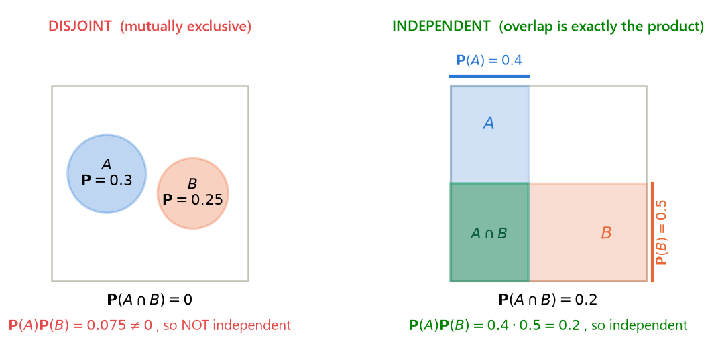
Solution
Uniform law on $6$ outcomes: $\mathbf{P}(A)=3/6=0.5$, $\mathbf{P}(B)=2/6=1/3\approx 0.3333$, and $A\cap B=\{3\}$ so $\mathbf{P}(A\cap B)=1/6\approx 0.1667$. The product is $0.5\cdot(1/3)=1/6\approx 0.1667$ — equal, so $A$ and $B$ are independent.
With $B'=\{2,4,6\}$: $\mathbf{P}(B')=3/6=0.5$ and $A\cap B'=\{2\}$, so $\mathbf{P}(A\cap B')=1/6\approx 0.1667$ while $\mathbf{P}(A)\mathbf{P}(B')=0.5\cdot 0.5=0.25$. These differ, so $A$ and $B'$ are dependent. Same die, same $A$, and the answer flips — independence is about the numbers, not about "different aspects of the experiment".
Solution
Independent case: $\mathbf{P}(A\cap B)=0.5\cdot 0.4=0.2$, so by inclusion–exclusion $$\mathbf{P}(A\cup B)=\mathbf{P}(A)+\mathbf{P}(B)-\mathbf{P}(A\cap B)=0.5+0.4-0.2=0.7 .$$ Equivalently, via complements and Example 3.2: $\mathbf{P}(A\cup B)=1-\mathbf{P}(A^c\cap B^c)=1-(0.5)(0.6)=1-0.3=0.7$.
Disjoint case: $\mathbf{P}(A\cap B)=0$, so $\mathbf{P}(A\cup B)=0.5+0.4=0.9$. Note this is a different probabilistic model, not a different calculation of the same one — with these marginals both models are internally consistent, and they give different answers ($0.7$ vs $0.9$). The modeling assumption is doing real work.
3.3 Conditional independence
Conditional probabilities form a legitimate probability law: $\mathbf{P}(\cdot\mid C)$ satisfies the three axioms on $\Omega$ (§2.1). So every definition we make about probability laws can be made again "given $C$". Independence is no exception (L03 slide 4).
Derivation (B&T §1.5, filling in the algebra). Start from the left side of the definition and expand the conditional probability, then apply the multiplication rule to the numerator, splitting off $B\cap C$:
$$\mathbf{P}(A\cap B\mid C)=\frac{\mathbf{P}(A\cap B\cap C)}{\mathbf{P}(C)} =\frac{\mathbf{P}(C)\,\mathbf{P}(B\mid C)\,\mathbf{P}(A\mid B\cap C)}{\mathbf{P}(C)} =\mathbf{P}(B\mid C)\,\mathbf{P}(A\mid B\cap C).$$Compare this with the definition's right-hand side $\mathbf{P}(A\mid C)\mathbf{P}(B\mid C)$. The two agree exactly when
$$\mathbf{P}(B\mid C)\,\mathbf{P}(A\mid B\cap C)=\mathbf{P}(B\mid C)\,\mathbf{P}(A\mid C),$$and cancelling the common nonzero factor $\mathbf{P}(B\mid C)$ leaves $\mathbf{P}(A\mid B\cap C)=\mathbf{P}(A\mid C)$. In words: once $C$ is known, the extra news that $B$ occurred does not change the probability of $A$.
Conditioning can destroy independence
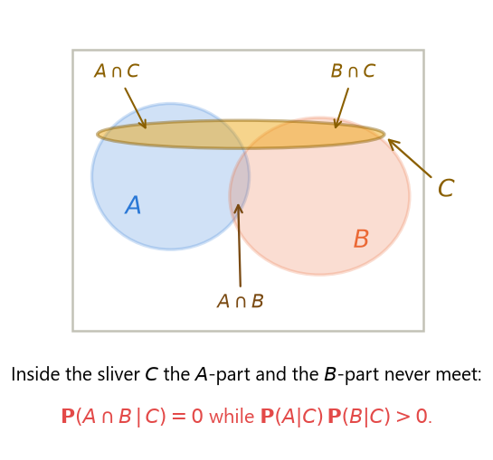
Answer: in general, no. Independence is a property of a probability law, and conditioning on $C$ replaces the law $\mathbf{P}$ by the different law $\mathbf{P}(\cdot\mid C)$. There is no reason for a product identity under one law to survive under another.
A conclusive counterexample (the picture of Fig. 3.3, made exact — this is the generalization stated in B&T §1.5 after Example 1.20). Let $A$ and $B$ be independent, let $C$ satisfy $\mathbf{P}(C)>0$, $\mathbf{P}(A\mid C)>0$, $\mathbf{P}(B\mid C)>0$, and suppose $A\cap B\cap C=\varnothing$. Then
$$\mathbf{P}(A\cap B\mid C)=\frac{\mathbf{P}(A\cap B\cap C)}{\mathbf{P}(C)} =\frac{\mathbf{P}(\varnothing)}{\mathbf{P}(C)}=\frac{0}{\mathbf{P}(C)}=0,$$while $\mathbf{P}(A\mid C)\mathbf{P}(B\mid C)>0$ as a product of two positive numbers. So $$\mathbf{P}(A\cap B\mid C)=0\;\neq\;\mathbf{P}(A\mid C)\mathbf{P}(B\mid C)>0,$$ and $A,B$ are not conditionally independent given $C$. A concrete instance is worked in Example 3.6 below with $C=D=$ "the two tosses differ". The reverse implication fails too: Example 3.5 exhibits events that are conditionally independent given each $C$ in a partition but dependent unconditionally.
Conditioning can create independence: two unfair coins
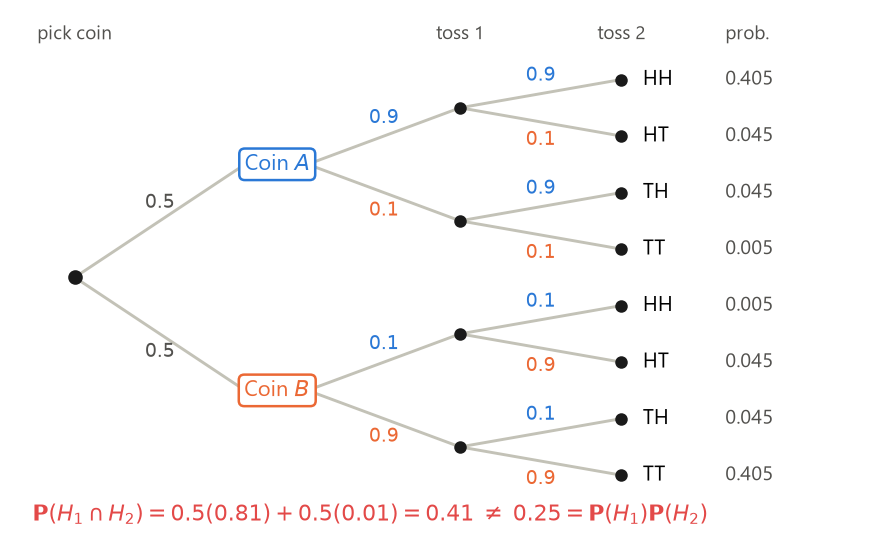
Question 1: once we know it is coin $A$, are the tosses independent? Yes — by assumption. The model is defined by saying that, given the identity of the coin, successive tosses are independent tosses of a coin with a fixed bias. That is exactly the statement
$$\mathbf{P}(H_1\cap H_2\mid \mathcal{A})=\mathbf{P}(H_1\mid\mathcal{A})\,\mathbf{P}(H_2\mid\mathcal{A}) =0.9\cdot 0.9=0.81,$$and likewise $\mathbf{P}(H_1\cap H_2\mid\mathcal{B})=0.1\cdot 0.1=0.01$. So $H_1$ and $H_2$ are conditionally independent given $\mathcal{A}$, and also given $\mathcal{B}$. In the tree of Fig. 3.4 this is visible as the fact that the toss-2 branch probabilities do not depend on what toss 1 did.
Question 2: if we do not know which coin it is, are the tosses independent? No. Compute all three quantities.
Marginal. By the total probability theorem with the partition $\{\mathcal{A},\mathcal{B}\}$,
$$\mathbf{P}(H_1)=\mathbf{P}(\mathcal{A})\mathbf{P}(H_1\mid\mathcal{A}) +\mathbf{P}(\mathcal{B})\mathbf{P}(H_1\mid\mathcal{B}) =0.5(0.9)+0.5(0.1)=0.45+0.05=0.5 .$$By the same computation $\mathbf{P}(H_2)=0.5$: the coin's bias is unknown and symmetric, so a single toss is fair.
Joint. Total probability again, now for the event $H_1\cap H_2$, using the conditional independence established above:
$$\mathbf{P}(H_1\cap H_2)=0.5(0.81)+0.5(0.01)=0.405+0.005=0.41 .$$Compare. $\mathbf{P}(H_1)\mathbf{P}(H_2)=0.5\cdot 0.5=0.25$ and $0.41-0.25=0.16\neq 0$, so
$$\mathbf{P}(H_1\cap H_2)=0.41\;\neq\;0.25=\mathbf{P}(H_1)\mathbf{P}(H_2):$$the tosses are dependent. Equivalently $\mathbf{P}(H_2\mid H_1)=0.41/0.5=0.82\neq 0.5$.
The slide's comparison: toss 11. The slide asks us to compare $\mathbf{P}(\text{toss }11=H)$ with $\mathbf{P}(\text{toss }11=H\mid\text{first }10\text{ heads})$. Let $E_{10}=H_1\cap\cdots\cap H_{10}$.
Unconditional. Exactly as for $H_1$, total probability gives
$$\mathbf{P}(H_{11})=0.5(0.9)+0.5(0.1)=0.5 .$$Conditional. First find the posterior on the coin by Bayes' rule. Conditional on $\mathcal{A}$ the ten tosses are independent, so the likelihood is a product of ten identical factors:
$$\mathbf{P}(E_{10}\mid\mathcal{A})=(0.9)^{10}=0.3486784401,\qquad \mathbf{P}(E_{10}\mid\mathcal{B})=(0.1)^{10}=1\times 10^{-10}.$$Total probability for the denominator:
$$\mathbf{P}(E_{10})=0.5(0.3486784401)+0.5(1\times 10^{-10})=0.1743392201 .$$Bayes' rule:
$$\mathbf{P}(\mathcal{A}\mid E_{10})=\frac{0.5(0.3486784401)}{0.1743392201} =\frac{0.17433922005}{0.1743392201}=0.9999999997,\qquad \mathbf{P}(\mathcal{B}\mid E_{10})=2.868\times 10^{-10}.$$Now total probability under the posterior law — legitimate because $\mathbf{P}(\cdot\mid E_{10})$ is a probability law and, given the coin, toss 11 is independent of the first ten:
$$\mathbf{P}(H_{11}\mid E_{10})=\mathbf{P}(\mathcal{A}\mid E_{10})(0.9) +\mathbf{P}(\mathcal{B}\mid E_{10})(0.1)=0.9999999997(0.9)+2.868\times 10^{-10}(0.1) =0.8999999998 .$$Conclusion. $0.5$ versus $0.9$ — ten heads have moved the predictive probability of the next head from a fair coin to essentially the coin-$A$ bias. Past tosses are highly informative about future tosses, which is precisely the failure of independence.
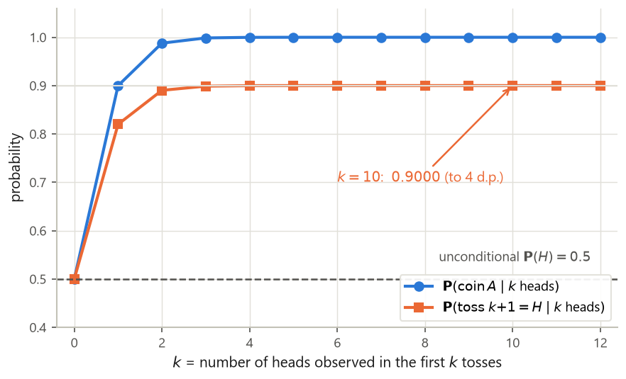
Solution
Model. $\Omega=\{HH,HT,TH,TT\}$ with the uniform law, so each outcome has probability $1/4=0.25$. In the labels the first letter is toss 1. Then $H_1=\{HH,HT\}$, $H_2=\{HH,TH\}$, $D=\{HT,TH\}$.
(a) Unconditional. By the uniform law $\mathbf{P}(E)=|E|/|\Omega|$:
$$\mathbf{P}(H_1)=\tfrac{2}{4}=0.5,\qquad \mathbf{P}(H_2)=\tfrac{2}{4}=0.5,\qquad H_1\cap H_2=\{HH\}\Rightarrow \mathbf{P}(H_1\cap H_2)=\tfrac14=0.25 .$$Since $\mathbf{P}(H_1)\mathbf{P}(H_2)=0.5\cdot 0.5=0.25=\mathbf{P}(H_1\cap H_2)$, the events are independent. (As they must be — the tosses were declared independent, and $H_1$, $H_2$ are events about separate tosses.)
(b) Conditional on $D$. First $\mathbf{P}(D)=|\{HT,TH\}|/4=2/4=0.5>0$, so conditioning is legal. Now compute the three conditional probabilities from the definition $\mathbf{P}(E\mid D)=\mathbf{P}(E\cap D)/\mathbf{P}(D)$:
$$H_1\cap D=\{HT\}:\quad \mathbf{P}(H_1\mid D)=\frac{1/4}{1/2}=\frac{0.25}{0.5}=0.5,$$ $$H_2\cap D=\{TH\}:\quad \mathbf{P}(H_2\mid D)=\frac{1/4}{1/2}=\frac{0.25}{0.5}=0.5,$$ $$H_1\cap H_2\cap D=\{HH\}\cap\{HT,TH\}=\varnothing:\quad \mathbf{P}(H_1\cap H_2\mid D)=\frac{0}{0.5}=0 .$$Compare. $\mathbf{P}(H_1\mid D)\mathbf{P}(H_2\mid D)=0.5\cdot 0.5=0.25$, but $\mathbf{P}(H_1\cap H_2\mid D)=0$. Since $0\neq 0.25$, $H_1$ and $H_2$ are not conditionally independent given $D$.
Why, in words. Inside the universe $D$ only two outcomes survive, $HT$ and $TH$, and in both of them exactly one toss is a head. So given $D$, learning $H_1$ forces $H_2^c$ — knowledge of one toss determines the other completely. Conditioning turned two independent events into two maximally dependent ones. This is the concrete version of Example 3.4 with $C=D$: indeed $H_1\cap H_2\cap D=\varnothing$ while $\mathbf{P}(H_1\mid D),\mathbf{P}(H_2\mid D)>0$.
Solution
What we may use. Independence of the collection $\{A,B,C\}$ means (§3.4 below, L03 slide 6) that all of these hold:
$$\mathbf{P}(A\cap B)=\mathbf{P}(A)\mathbf{P}(B),\quad \mathbf{P}(A\cap C)=\mathbf{P}(A)\mathbf{P}(C),\quad \mathbf{P}(B\cap C)=\mathbf{P}(B)\mathbf{P}(C),$$ $$\mathbf{P}(A\cap B\cap C)=\mathbf{P}(A)\mathbf{P}(B)\mathbf{P}(C).$$Step 1 — left-hand side. By the definition of conditional probability and the four-event product identity,
$$\mathbf{P}(A\cap B\mid C)=\frac{\mathbf{P}(A\cap B\cap C)}{\mathbf{P}(C)} =\frac{\mathbf{P}(A)\mathbf{P}(B)\mathbf{P}(C)}{\mathbf{P}(C)} =\mathbf{P}(A)\mathbf{P}(B).$$Step 2 — right-hand side. By the definition of conditional probability applied to each factor, and the pairwise identities,
$$\mathbf{P}(A\mid C)=\frac{\mathbf{P}(A\cap C)}{\mathbf{P}(C)} =\frac{\mathbf{P}(A)\mathbf{P}(C)}{\mathbf{P}(C)}=\mathbf{P}(A),\qquad \mathbf{P}(B\mid C)=\frac{\mathbf{P}(B)\mathbf{P}(C)}{\mathbf{P}(C)}=\mathbf{P}(B).$$Step 3 — compare. Multiplying the two results of Step 2 gives $\mathbf{P}(A\mid C)\mathbf{P}(B\mid C)=\mathbf{P}(A)\mathbf{P}(B)$, which is exactly the value of $\mathbf{P}(A\cap B\mid C)$ found in Step 1. Therefore
$$\mathbf{P}(A\cap B\mid C)=\mathbf{P}(A\mid C)\,\mathbf{P}(B\mid C),$$i.e. $A$ and $B$ are conditionally independent given $C$. $\blacksquare$
Remark (where the strength is needed). The proof used the triple identity in Step 1 and two pairwise identities in Step 2. Pairwise independence alone is not enough: in Example 3.6, $H_1,H_2,D$ are pairwise independent (see §3.4) yet $H_1,H_2$ are not conditionally independent given $D$. Full independence of the collection is exactly what makes conditioning on one member harmless.
Solution
Model. Take the four birth-order compositions equally likely, $\Omega=\{BB,BG,GB,GG\}$, each of probability $1/4$ (letters in birth order; $B$ = boy, $G$ = girl). The answer depends entirely on how "the king comes from a family of two children" is turned into a conditioning event — the lecture's point.
Reading 1 — "at least one of the two children is male" (a king exists in the family). The conditioning event is $M=\{BB,BG,GB\}$ with $\mathbf{P}(M)=3/4$. The event of interest is $S=\{$the other child is female$\}$, which within $M$ is $\{BG,GB\}$, of probability $2/4$. Then
$$\mathbf{P}(S\mid M)=\frac{\mathbf{P}(S\cap M)}{\mathbf{P}(M)}=\frac{2/4}{3/4}=\frac{2}{3} \approx 0.6667 .$$Reading 2 — "a child was picked at random from the family and turned out to be the (male) king". Now the observation is not just "a boy exists" but "this particular randomly chosen child is a boy", and a $BB$ family is twice as likely to produce that observation as a $BG$ family. Use Bayes' rule with the prior $1/4$ on each composition and the likelihood $\mathbf{P}(\text{chosen child is a boy}\mid \text{composition})$, which is $1$ for $BB$, $1/2$ for $BG$ and for $GB$, and $0$ for $GG$:
$$\mathbf{P}(\text{picked a boy})=\tfrac14(1)+\tfrac14(\tfrac12)+\tfrac14(\tfrac12)+\tfrac14(0) =\tfrac14+\tfrac18+\tfrac18=\tfrac12 ,$$ $$\mathbf{P}(BB\mid \text{picked a boy})=\frac{\tfrac14(1)}{\tfrac12}=\tfrac12,\qquad \mathbf{P}(\{BG,GB\}\mid\text{picked a boy})=\frac{\tfrac14(\tfrac12)+\tfrac14(\tfrac12)}{\tfrac12} =\tfrac12 .$$The sibling is female exactly in the second case, so the answer is $\mathbf{P}=1/2=0.5$.
Moral. $2/3$ and $1/2$ are both correct — for different experiments. "The king is male" is data about the family under Reading 1 and data about a sampled child under Reading 2, and the two conditioning events cut different subsets out of $\Omega$. Before conditioning, write down what was actually observed and how it was generated.
Solution
Total probability for one toss: $\mathbf{P}(H_1)=0.5(0.8)+0.5(0.3)=0.4+0.15=0.55$, and likewise $\mathbf{P}(H_2)=0.55$.
Total probability for two tosses, using conditional independence given the coin: $$\mathbf{P}(H_1\cap H_2)=0.5(0.8)^2+0.5(0.3)^2=0.5(0.64)+0.5(0.09)=0.32+0.045=0.365 .$$ Compare $\mathbf{P}(H_1)\mathbf{P}(H_2)=0.55^2=0.3025$. Since $0.365\neq 0.3025$ the tosses are dependent.
Then $\mathbf{P}(H_2\mid H_1)=0.365/0.55=0.663636\ldots$, up from $0.55$. Equivalently, Bayes gives $\mathbf{P}(\mathcal{A}\mid H_1)=0.5(0.8)/0.55=0.727273$, and $0.727273(0.8)+0.272727(0.3)=0.663636$ — the same number by the two-step route.
Solution
(i) The numeric case. With $a=b=0.5$ and independence, $\mathbf{P}(A\cap B)=0.25$ and $\mathbf{P}(C)=\mathbf{P}(A\cup B)=0.5+0.5-0.25=0.75$. Since $A\subseteq C$ and $B\subseteq C$, the numerators are just $\mathbf{P}(A)$, $\mathbf{P}(B)$, $\mathbf{P}(A\cap B)$:
$$\mathbf{P}(A\mid C)=\frac{0.5}{0.75}=\frac{2}{3},\qquad \mathbf{P}(B\mid C)=\frac{2}{3},\qquad \mathbf{P}(A\cap B\mid C)=\frac{0.25}{0.75}=\frac{1}{3}.$$The product is $(2/3)^2=4/9\approx 0.4444$, while the joint conditional is $1/3\approx 0.3333$; they differ by $-0.1111$, so here conditioning on the union destroys independence.
(ii) The general case. Write $u=\mathbf{P}(C)=\mathbf{P}(A\cup B)=a+b-ab$, which is $>0$ whenever $a$ or $b$ is. Using $A\subseteq C$, $B\subseteq C$, $A\cap B\subseteq C$ and independence of $A,B$,
$$\mathbf{P}(A\mid C)=\frac{a}{u},\qquad \mathbf{P}(B\mid C)=\frac{b}{u},\qquad \mathbf{P}(A\cap B\mid C)=\frac{ab}{u}.$$Conditional independence given $C$ therefore says
$$\frac{ab}{u}=\frac{a}{u}\cdot\frac{b}{u}=\frac{ab}{u^2} \;\Longleftrightarrow\; ab\,u = ab\,u^2 \;\Longleftrightarrow\; ab\,u\,(1-u)=0 .$$So (excluding the trivial cases $a=0$ or $b=0$, where every event is independent of a null event) the condition is $u=1$, i.e.
$$a+b-ab=1\;\Longleftrightarrow\; 1-a-b+ab=0\;\Longleftrightarrow\;(1-a)(1-b)=0 \;\Longleftrightarrow\; a=1\ \text{ or }\ b=1 .$$Conclusion. For independent $A,B$ with $a,b\in(0,1)$, conditioning on $C=A\cup B$ always destroys independence; the only way it survives is the degenerate case $\mathbf{P}(A)=1$ or $\mathbf{P}(B)=1$, in which $C=\Omega$ up to a null set and conditioning does nothing at all. (Check: $a=1$, $b=0.3$ gives $u=1$ and $\mathbf{P}(A\cap B\mid C)=0.3=1\cdot 0.3=\mathbf{P}(A\mid C)\mathbf{P}(B\mid C)$ ✓, while $a=0.8$, $b=0.3$ gives $0.279070$ against $0.324500$ ✗.) Intuition: inside $A\cup B$, learning that $A$ failed forces $B$ to have occurred, so the events become negatively related — unless one of them was certain to begin with, so that "$A$ failed" was impossible.
3.4 Independence of a collection of events
For three or more events, "every pair is independent" is a strictly weaker statement than what we want. L03 slide 6 states the intuitive requirement first: information about some of the events tells us nothing about probabilities involving the others, e.g.
$$\mathbf{P}\big(A_1\cap(A_2^c\cup A_3)\mid A_5\cap A_6^c\big)=\mathbf{P}\big(A_1\cap(A_2^c\cup A_3)\big).$$How many equations is that? Subsets of size $0$ and $1$ are automatic ($\mathbf{P}(\Omega)=1$ and $\mathbf{P}(A_i)=\mathbf{P}(A_i)$), so the number of genuine conditions is
$$2^n-n-1:\qquad n=3\to 2^3-3-1=4,\qquad n=4\to 2^4-4-1=11,\qquad n=5\to 2^5-5-1=26 .$$For $n=3$ the four conditions are the three pairwise ones plus the triple product. Neither implication between "the three pairwise conditions" and "the triple condition" holds; the two examples below are counterexamples in opposite directions (B&T §1.5, Examples 1.22 and 1.23).
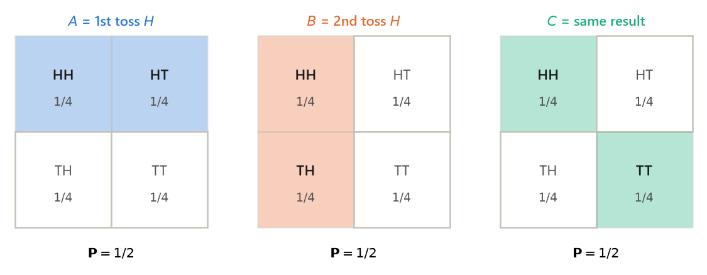
Setup. $\Omega=\{HH,HT,TH,TT\}$, uniform, each cell $1/4=0.25$ (Fig. 3.6). Reading the grid: $A=\{HH,HT\}$, $B=\{HH,TH\}$, $C=\{HH,TT\}$, so $\mathbf{P}(A)=\mathbf{P}(B)=\mathbf{P}(C)=2/4=0.5$.
1. $\mathbf{P}(C)$. $C$ is the union of the two disjoint outcomes $HH$ and $TT$, so by additivity $\mathbf{P}(C)=0.25+0.25=0.5$.
2. $\mathbf{P}(C\cap A)$. $C\cap A=\{HH,TT\}\cap\{HH,HT\}=\{HH\}$, hence $\mathbf{P}(C\cap A)=0.25$. Compare with $\mathbf{P}(C)\mathbf{P}(A)=0.5\cdot 0.5=0.25$: equal, so $A$ and $C$ are independent. By the identical computation $B\cap C=\{HH\}$ gives $\mathbf{P}(B\cap C)=0.25=\mathbf{P}(B)\mathbf{P}(C)$, and $A,B$ are independent by assumption. All three pairs are independent.
3. $\mathbf{P}(A\cap B\cap C)$. $A\cap B=\{HH\}$, and $HH\in C$, so $A\cap B\cap C=\{HH\}$ and $\mathbf{P}(A\cap B\cap C)=0.25$. But
$$\mathbf{P}(A)\mathbf{P}(B)\mathbf{P}(C)=0.5\cdot 0.5\cdot 0.5=0.125,$$ $$0.25\neq 0.125 .$$The triple condition fails, so $A,B,C$ are not independent as a collection even though they are pairwise independent.
4. $\mathbf{P}(C\mid A\cap B)$. By the definition of conditional probability,
$$\mathbf{P}(C\mid A\cap B)=\frac{\mathbf{P}(A\cap B\cap C)}{\mathbf{P}(A\cap B)} =\frac{0.25}{0.25}=1 .$$Compare with $\mathbf{P}(C)=0.5$. Knowing the outcomes of both tosses tells you with certainty whether they matched — the flagrant violation of the intuitive definition, even though no single one of $A$, $B$ carries any information about $C$.
Slide's conclusion. Pairwise independence does not imply independence.
Solution
Marginals. $\mathbf{P}(H_1)=\mathbf{P}(H_2)=\mathbf{P}(D)=2/4=0.5$.
Pairwise checks (three of them).
$$H_1\cap H_2=\{HH\}:\ \mathbf{P}=0.25=\mathbf{P}(H_1)\mathbf{P}(H_2)=0.25\ \checkmark$$ $$H_1\cap D=\{HT\}:\ \mathbf{P}=0.25=\mathbf{P}(H_1)\mathbf{P}(D)=0.5\cdot 0.5=0.25\ \checkmark$$ $$H_2\cap D=\{TH\}:\ \mathbf{P}=0.25=\mathbf{P}(H_2)\mathbf{P}(D)=0.25\ \checkmark$$Equivalently, as the textbook writes it, $\mathbf{P}(D\mid H_1)=\mathbf{P}(H_1\cap D)/\mathbf{P}(H_1)=(1/4)/(1/2)=1/2=\mathbf{P}(D)$.
Triple check. $H_1\cap H_2\cap D=\{HH\}\cap\{HT,TH\}=\varnothing$, so
$$\mathbf{P}(H_1\cap H_2\cap D)=0\;\neq\;\tfrac12\cdot\tfrac12\cdot\tfrac12=\tfrac18=0.125 .$$Conclusion. $H_1,H_2,D$ are pairwise independent but not independent. This is the same failure seen from the other side in Example 3.6: because $H_1\cap H_2\cap D=\varnothing$, conditioning on $D$ made $H_1$ and $H_2$ mutually exclusive.
Solution
Marginals. $|\Omega|=36$ equally likely ordered pairs. $\mathbf{P}(A)=18/36=0.5$ and $\mathbf{P}(B)=18/36=0.5$. The sum is $9$ for $(3,6),(4,5),(5,4),(6,3)$, so $\mathbf{P}(C)=4/36=1/9\approx 0.1111$.
All three pairwise checks fail.
$$A\cap B=\{\text{1st roll}=3\}:\ \mathbf{P}(A\cap B)=\tfrac{6}{36}=\tfrac16\approx 0.1667 \;\neq\;\tfrac12\cdot\tfrac12=0.25 ;$$ $$A\cap C=\{(3,6)\}:\ \mathbf{P}(A\cap C)=\tfrac1{36}\approx 0.0278 \;\neq\;\tfrac12\cdot\tfrac19=\tfrac1{18}\approx 0.0556 ;$$ $$B\cap C=\{(3,6),(4,5),(5,4)\}:\ \mathbf{P}(B\cap C)=\tfrac{3}{36}=\tfrac1{12}\approx 0.0833 \;\neq\;\tfrac1{18}\approx 0.0556 .$$The triple product nevertheless holds. $A\cap B\cap C$ requires the first roll to be $3$ (the only value in both $A$ and $B$) and the sum to be $9$, i.e. the outcome $(3,6)$:
$$\mathbf{P}(A\cap B\cap C)=\tfrac1{36}\approx 0.02778,\qquad \mathbf{P}(A)\mathbf{P}(B)\mathbf{P}(C)=\tfrac12\cdot\tfrac12\cdot\tfrac19=\tfrac1{36}\approx 0.02778 .$$Equal. So one can satisfy the $n$-fold product identity while failing every pairwise one: independence of a collection really does require checking all $2^n-n-1$ conditions, not just the biggest one.
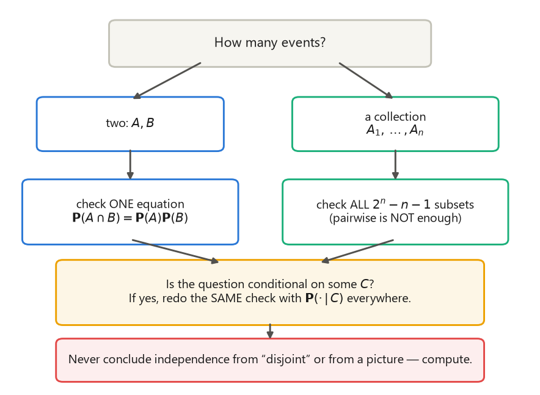
- Count the events. Two events: one equation, $\mathbf{P}(A\cap B)=\mathbf{P}(A)\mathbf{P}(B)$. Three or more: all $2^n-n-1$ subset equations ($4$ for $n=3$, $11$ for $n=4$).
- Get the marginals. In a uniform model, count: $\mathbf{P}(E)=|E|/|\Omega|$. In a sequential model, use the tree and the total probability theorem.
- Get the joint by intersecting the outcome sets, not by multiplying — multiplying is what you are trying to test. In a grid or a list of leaves, literally intersect.
- Compare. Equal for every required subset $\Rightarrow$ independent. One failure $\Rightarrow$ not independent, and you should say which equation failed.
- If the question says "given $C$", replace every $\mathbf{P}(\cdot)$ by $\mathbf{P}(\cdot\mid C)$ and rerun the same check. Do not reuse the unconditional verdict — §3.3 shows it can flip in either direction.
- Sanity flags. Disjoint with positive probabilities $\Rightarrow$ dependent. One event contained in another with $0<\mathbf{P}<1$ $\Rightarrow$ dependent. $\mathbf{P}(A)\in\{0,1\}$ $\Rightarrow$ $A$ is independent of everything.
Solution
$\mathbf{P}(A)=18/36=0.5$, $\mathbf{P}(B)=18/36=0.5$; the sum is odd exactly when the two rolls have different parities, which happens in $18$ of the $36$ pairs, so $\mathbf{P}(C)=0.5$.
Pairwise: $A\cap B$ = both odd = $9$ pairs, $\mathbf{P}=9/36=0.25=0.5\cdot 0.5$ ✓. $A\cap C$ = 1st odd and parities differ = 1st odd, 2nd even = $9$ pairs, $\mathbf{P}=0.25$ ✓. $B\cap C$ = 2nd odd, 1st even = $9$ pairs, $\mathbf{P}=0.25$ ✓. All three pairs are independent.
Triple: if the first two rolls are both odd, the sum is even, so $A\cap B\cap C=\varnothing$ and $\mathbf{P}(A\cap B\cap C)=0$, whereas $\mathbf{P}(A)\mathbf{P}(B)\mathbf{P}(C)=0.125$. Not independent. (Structurally identical to Example 3.10: $C$ is a parity check on the other two.)
Solution
Every subset $S\subseteq\{1,\ldots,5\}$ gives one equation, but the $\binom{5}{0}=1$ empty subset and the $\binom{5}{1}=5$ singletons are automatic, leaving $2^5-5-1=32-6=26$ conditions. Of these, $\binom{5}{2}=10$ are pairwise, $\binom{5}{3}=10$ are triples, $\binom{5}{4}=5$ are quadruples and $\binom{5}{5}=1$ is the full product: $10+10+5+1=26$ ✓. Checking only the $10$ pairwise ones certifies less than $40\%$ of the requirement.
3.5 Independent trials: the drunk tightrope walker
Independence turns a sequence of identical experiments into a model you can compute with by multiplication alone. rec03 P2 is the smallest interesting example: a random walk.
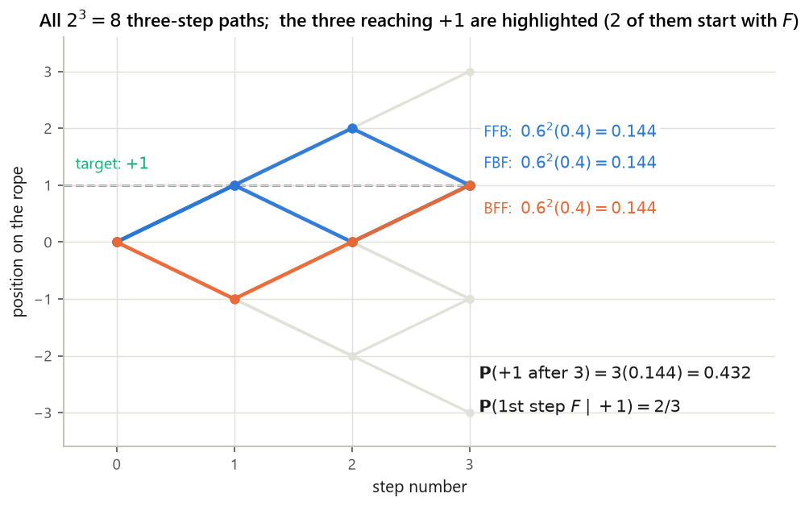
(a) What is the probability that after two steps he will be at the same place on the rope?
(b) What is the probability that after three steps he is one step forward of where he began?
(c) Given that after three steps he has moved ahead one step, what is the probability that his
first step was a step forward?
Solution (official solution plus every step the handout omits)
Model. Let $F_i$ be the event "step $i$ is forward" and $B_i=F_i^c$ "step $i$ is back", with $\mathbf{P}(F_i)=p$ and $\mathbf{P}(B_i)=1-p$ for every $i$, and the steps independent. After $n$ steps the position is (number of $F$'s) $-$ (number of $B$'s). Numerically we use $p=0.6$, $1-p=0.4$. Because the steps are independent, the probability of any specific step sequence is the product of its per-step probabilities, and therefore depends only on how many $F$'s it contains: a sequence with $k$ forward steps out of $n$ has probability $p^k(1-p)^{n-k}$.
(a) Same place after two steps. Position $0$ after two steps requires one $F$ and one $B$, in either order: the outcomes are $FB$ and $BF$. The handout jumps straight to $2p(1-p)$; here are the two independence steps it skips:
$$\mathbf{P}(FB)=\mathbf{P}(F_1\cap B_2)=\mathbf{P}(F_1)\mathbf{P}(B_2)=p(1-p)=0.6(0.4)=0.24,$$ $$\mathbf{P}(BF)=\mathbf{P}(B_1\cap F_2)=\mathbf{P}(B_1)\mathbf{P}(F_2)=(1-p)p=0.4(0.6)=0.24 .$$The two outcomes are distinct sample points, hence disjoint, so additivity gives
$$\mathbf{P}(\text{same place after 2 steps})=0.24+0.24=2p(1-p)=0.48 .$$Check. The other possibilities are $+2$ (probability $p^2=0.36$) and $-2$ (probability $(1-p)^2=0.16$), and $0.36+0.48+0.16=1.00$ ✓.
(b) One step forward after three steps. Net displacement $+1$ from three steps means $k$ forward and $3-k$ back with $k-(3-k)=+1$, i.e. $2k-3=1$, $k=2$. So exactly two of the three steps are forward. The handout asserts the factor $3$; it is the binomial coefficient counting which step is the backward one:
$$\binom{3}{2}=\frac{3!}{2!\,1!}=\frac{6}{2}=3,\qquad \text{the sequences } FFB,\ FBF,\ BFF .$$Each has two $F$'s and one $B$, so by independence each has probability
$$p^2(1-p)=(0.6)^2(0.4)=0.36\cdot 0.4=0.144 ,$$and the three are disjoint, so additivity gives
$$\mathbf{P}(+1\text{ after 3 steps})=3p^2(1-p)=3(0.144)=0.432 .$$(c) First step forward, given $+1$ after three steps. The conditioning event is $G=\{FFB,FBF,BFF\}$ with $\mathbf{P}(G)=0.432$ from (b). The handout says the three sample points are "equally likely" and reads off $2/3$; the computation behind that claim is: each has the identical probability $p^2(1-p)=0.144$, so the conditional law $\mathbf{P}(\cdot\mid G)$ assigns each of them $0.144/0.432=1/3$ — the conditional law is uniform on $G$. The event "first step is forward" intersects $G$ in $\{FFB,FBF\}$, two of the three points. Explicitly,
$$\mathbf{P}(F_1\mid G)=\frac{\mathbf{P}(F_1\cap G)}{\mathbf{P}(G)} =\frac{\mathbf{P}(FFB)+\mathbf{P}(FBF)}{\mathbf{P}(G)} =\frac{2p^2(1-p)}{3p^2(1-p)}=\frac{2}{3} =\frac{2(0.144)}{0.432}=\frac{0.288}{0.432}=0.6667 .$$The bias $p$ cancels completely: whatever the walker's drift, given that he ended at $+1$ after three steps, the backward step is equally likely to have been step 1, 2 or 3, so the first step was forward with probability $2/3$. (Same cancellation as Example 3.1 — for the same reason.)
Solution
Back at $0$ after four steps needs $2k-4=0$, i.e. $k=2$ forward steps. The number of such sequences is $\binom{4}{2}=\frac{4!}{2!2!}=6$, and each has probability $p^2(1-p)^2=(0.36)(0.16)=0.0576$. Hence
$$\mathbf{P}(\text{back at }0\text{ after }4)=6(0.0576)=0.3456 .$$Conditioning on that event, all six sequences have the same probability, so the conditional law is uniform on them. Those starting with $F$ have one more $F$ among the remaining three steps: $\binom{3}{1}=3$ of them. Therefore
$$\mathbf{P}(F_1\mid \text{back at }0)=\frac{3(0.0576)}{6(0.0576)}=\frac{3}{6}=0.5 .$$By symmetry this had to be $1/2$: conditioned on two forwards and two backs, the first step is equally likely to be either.
Solution
$+2$ after four steps: $2k-4=2\Rightarrow k=3$. Count $\binom{4}{3}=4$, path probability $p^3(1-p)=(0.216)(0.4)=0.0864$, so $\mathbf{P}=4(0.0864)=0.3456$.
$+4$: $k=4$, only one path $FFFF$, probability $p^4=0.1296$.
Check the whole distribution after four steps. The remaining two cases are $\binom{4}{1}p(1-p)^3=4(0.6)(0.064)=0.1536$ (position $-2$) and $(1-p)^4=0.0256$ (position $-4$), so
$$0.1296+0.3456+0.3456+0.1536+0.0256=1.0000\ \checkmark$$3.6 Independent trials in engineering: the noisy channel and repetition coding
![Binary channel crossover diagram. On the left, transmitted symbols 0 (with prior p = 0.6) and 1 (with prior 1 minus p = 0.4). On the right, received symbols 0 and 1. A green horizontal arrow from left 0 to right 0 labeled 1 minus epsilon-zero = 0.95; a red diagonal arrow from left 0 to right 1 labeled epsilon-zero = 0.05; a red diagonal arrow from left 1 to right 0 labeled epsilon-one = 0.10; a green horizontal arrow from left 1 to right 1 labeled 1 minus epsilon-one = 0.90. Caption notes errors in different transmissions are independent.](img/g1_s3_channel.png)
(a) What is the probability that a randomly chosen symbol is received correctly?
(b) The string $1011$ is transmitted. What is the probability that all four symbols are received
correctly?
(c) Each symbol is now sent three times ($0\to000$, $1\to111$) and decoded by majority rule. What is
the probability that a transmitted $0$ is correctly decoded?
(d) Under the scheme of (c), what is the probability that a $0$ was transmitted, given that the
received string is $101$?
Solution (the handout defers all four parts to the text; worked here in full, symbolically and at $\epsilon_0=0.05$, $\epsilon_1=0.10$, $p=0.6$)
Notation. Let $S_0$ = "a $0$ is transmitted" and $S_1=S_0^c$ = "a $1$ is transmitted", so $\mathbf{P}(S_0)=p=0.6$ and $\mathbf{P}(S_1)=1-p=0.4$. Let $R$ = "the symbol is received correctly". The channel specification is the pair of conditional probabilities read off Fig. 3.9:
$$\mathbf{P}(R\mid S_0)=1-\epsilon_0=1-0.05=0.95,\qquad \mathbf{P}(R\mid S_1)=1-\epsilon_1=1-0.10=0.90 .$$(a) A randomly chosen symbol is received correctly. $\{S_0,S_1\}$ is a partition of $\Omega$, so the total probability theorem applies:
$$\mathbf{P}(R)=\mathbf{P}(S_0)\mathbf{P}(R\mid S_0)+\mathbf{P}(S_1)\mathbf{P}(R\mid S_1) =p(1-\epsilon_0)+(1-p)(1-\epsilon_1).$$ $$\mathbf{P}(R)=0.6(0.95)+0.4(0.90)=0.57+0.36=0.93 .$$The error probability per symbol is $1-0.93=0.07$. Note this is a weighted average of $0.05$ and $0.10$ with weights $0.6$ and $0.4$: $0.6(0.05)+0.4(0.10)=0.03+0.04=0.07$ ✓.
(b) The string $1011$ arrives intact. Here nothing is random about which symbols are sent — they are given as $1,0,1,1$. Let $C_i$ be the event "the $i$th symbol is received correctly". The problem states that errors in different transmissions are independent, so the four-fold intersection factors:
$$\mathbf{P}(C_1\cap C_2\cap C_3\cap C_4)=\mathbf{P}(C_1)\mathbf{P}(C_2)\mathbf{P}(C_3)\mathbf{P}(C_4).$$Symbols $1,3,4$ are $1$'s, each correct with probability $1-\epsilon_1=0.90$; symbol $2$ is a $0$, correct with probability $1-\epsilon_0=0.95$. Therefore
$$\mathbf{P}=(1-\epsilon_1)(1-\epsilon_0)(1-\epsilon_1)(1-\epsilon_1) =(1-\epsilon_0)(1-\epsilon_1)^3=0.95(0.90)^3 .$$ $$0.90^3=0.729,\qquad \mathbf{P}=0.95(0.729)=0.69255 .$$Do not use $0.93$ here: $0.93$ averages over an unknown symbol, whereas here the symbols are known. ($0.93^4=0.7481$ would be the wrong answer to a different question.)
(c) Majority decoding of a transmitted $0$. The codeword $000$ is sent; each of the three bits is independently flipped with probability $\epsilon_0=0.05$. Let $N$ be the number of the three received bits that are wrong. Decoding is correct exactly when the received triple contains at least two $0$'s, i.e. when $N\le 1$. Split that into disjoint cases:
No errors ($N=0$): all three bits correct, and by independence
$$\mathbf{P}(N=0)=(1-\epsilon_0)^3=(0.95)^3=0.857375 .$$Exactly one error ($N=1$): choose which of the three positions is wrong — $\binom{3}{1}=3$ ways — and each such pattern has probability $\epsilon_0(1-\epsilon_0)^2$ by independence:
$$\mathbf{P}(N=1)=3\epsilon_0(1-\epsilon_0)^2=3(0.05)(0.9025)=3(0.045125)=0.135375 .$$The two cases are disjoint, so additivity gives
$$\mathbf{P}(\text{a transmitted }0\text{ is decoded correctly})=(1-\epsilon_0)^3+3\epsilon_0(1-\epsilon_0)^2 =0.857375+0.135375=0.992750 .$$The failure probability is $1-0.992750=0.007250$, which also equals $3\epsilon_0^2(1-\epsilon_0)+\epsilon_0^3=3(0.0025)(0.95)+0.000125=0.007125+0.000125=0.007250$ ✓. Compare with the uncoded error $\epsilon_0=0.05$: repetition has cut the error rate by a factor $0.05/0.00725=6.90$, at the cost of tripling the transmission time.
For completeness, a transmitted $1$ is decoded correctly with probability $(1-\epsilon_1)^3+3\epsilon_1(1-\epsilon_1)^2=0.729+3(0.10)(0.81)=0.729+0.243=0.972$.
(d) Posterior probability that a $0$ was sent, given the received string $101$. This is Bayes' rule with hypotheses $S_0$ ("$000$ was sent") and $S_1$ ("$111$ was sent").
Likelihood under $S_0$. If $000$ was sent and $101$ arrived, bits 1 and 3 were flipped and bit 2 was not. By independence of the three transmissions,
$$\mathbf{P}(101\mid S_0)=\epsilon_0\,(1-\epsilon_0)\,\epsilon_0=\epsilon_0^2(1-\epsilon_0) =(0.05)^2(0.95)=0.0025(0.95)=0.002375 .$$Likelihood under $S_1$. If $111$ was sent and $101$ arrived, only bit 2 was flipped:
$$\mathbf{P}(101\mid S_1)=(1-\epsilon_1)\,\epsilon_1\,(1-\epsilon_1)=\epsilon_1(1-\epsilon_1)^2 =0.10(0.81)=0.081 .$$Denominator by total probability.
$$\mathbf{P}(101)=p\,\mathbf{P}(101\mid S_0)+(1-p)\,\mathbf{P}(101\mid S_1) =0.6(0.002375)+0.4(0.081)=0.001425+0.032400=0.033825 .$$Bayes' rule.
$$\mathbf{P}(S_0\mid 101)=\frac{p\,\mathbf{P}(101\mid S_0)}{\mathbf{P}(101)} =\frac{0.001425}{0.033825}=0.042129 ,$$and consequently $\mathbf{P}(S_1\mid 101)=1-0.042129=0.957871$ (or directly $0.032400/0.033825$). The majority rule's verdict — decode as $1$ — is confirmed by the exact posterior: given $101$, a $1$ was sent with probability about $95.8\%$.
Reading the numbers (odds form). Work throughout with odds in favor of $1$, so that every ratio points the same way. The prior odds are
$$\frac{\mathbf{P}(S_1)}{\mathbf{P}(S_0)}=\frac{1-p}{p}=\frac{0.4}{0.6}=0.666667 \quad(\text{the prior mildly favors }0),$$and the evidence enters through the likelihood ratio for the same pair of hypotheses:
$$\frac{\mathbf{P}(101\mid S_1)}{\mathbf{P}(101\mid S_0)}=\frac{0.081}{0.002375}=34.105263 .$$Multiplying the two (the denominator $\mathbf{P}(101)$ cancels in the ratio of the two Bayes formulas) gives the posterior odds and hence the posterior probability:
$$\frac{\mathbf{P}(S_1\mid 101)}{\mathbf{P}(S_0\mid 101)}=0.666667\times 34.105263=22.736842, \qquad \mathbf{P}(S_1\mid 101)=\frac{22.736842}{1+22.736842}=0.957871\ \checkmark$$which is exactly the $1-0.042129=0.957871$ found above. The lesson is the bookkeeping one: a likelihood ratio of $34.1$ in favor of $1$ swamps prior odds of only $0.67$ against it.
- Fix what is given and what is random. If the transmitted symbols are stated ("$1011$ is transmitted"), do not average over the source; use the per-symbol conditional probabilities directly (part b).
- Per-symbol reliability, unknown symbol $\Rightarrow$ total probability over the source (part a).
- Block error, known codeword $\Rightarrow$ count the error patterns that the decoder gets wrong, weight each by $\epsilon^{\#\text{errors}}(1-\epsilon)^{\#\text{correct}}$, multiply by $\binom{n}{k}$, and add (part c).
- "Given the received string, what was sent?" $\Rightarrow$ Bayes. Likelihood of a received string = product over positions of $\epsilon$ (mismatch) or $1-\epsilon$ (match); multiply by the prior; normalize (part d).
- Sanity check with the odds form: posterior odds = prior odds $\times$ likelihood ratio.
How much does repetition buy? The error curve
Generalize part (c). Send each bit $n$ times ($n$ odd, so there are no ties) through a channel that flips each bit independently with probability $\epsilon$, and decode by majority. The decoder is wrong exactly when more than half the bits are flipped, so with $K$ = number of flipped bits,
$$\mathbf{P}(\text{decoder wrong})=\mathbf{P}\Big(K\ge \tfrac{n+1}{2}\Big) =\sum_{k=(n+1)/2}^{n}\binom{n}{k}\,\epsilon^{k}(1-\epsilon)^{n-k},$$where each term is (number of error patterns with exactly $k$ flips) $\times$ (probability of one such pattern), the terms being disjoint events. For $n=5$, $\epsilon=0.10$ the three terms are
$$\binom{5}{3}(0.1)^3(0.9)^2=10(0.001)(0.81)=0.00810,\quad \binom{5}{4}(0.1)^4(0.9)=5(0.0001)(0.9)=0.00045,\quad \binom{5}{5}(0.1)^5=0.00001,$$ $$\mathbf{P}(\text{wrong})=0.00810+0.00045+0.00001=0.00856 .$$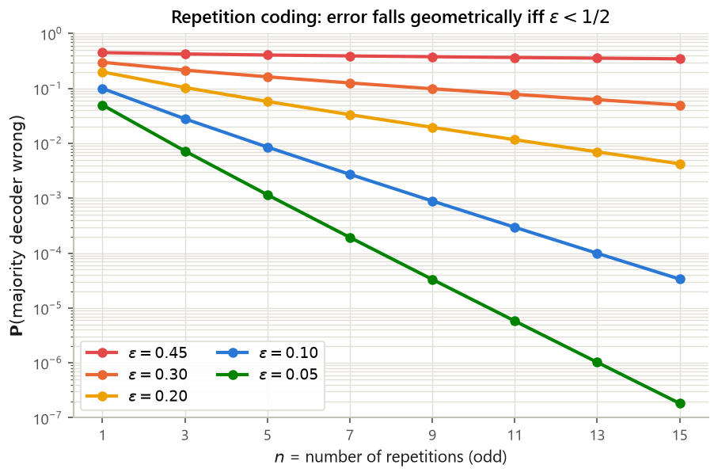
Solution
Three repetitions (part c): failure probability $3\epsilon_0^2(1-\epsilon_0)+\epsilon_0^3=0.007125+0.000125=0.007250$.
Five repetitions: the decoder fails when at least three of the five copies flip,
$$\binom{5}{3}\epsilon_0^3(1-\epsilon_0)^2+\binom{5}{4}\epsilon_0^4(1-\epsilon_0)+\binom{5}{5}\epsilon_0^5 =10(0.000125)(0.9025)+5(6.25\times10^{-6})(0.95)+3.125\times10^{-7},$$ $$=0.001128125+0.0000296875+0.0000003125=0.001158125 .$$Improvement factor $0.007250/0.001158125=6.26$. (Against uncoded transmission the factor is $0.05/0.001158125=43.2$.) Two extra copies buy roughly another factor of six — geometric decay, as Fig. 3.10 shows.
Solution
Likelihoods: if $000$ was sent, receiving $000$ means no flips, probability $(1-\epsilon_0)^3=(0.95)^3=0.857375$. If $111$ was sent, receiving $000$ means all three flipped, probability $\epsilon_1^3=(0.10)^3=0.001$.
Total probability: $\mathbf{P}(000)=0.6(0.857375)+0.4(0.001)=0.514425+0.000400=0.514825$.
Bayes: $\mathbf{P}(S_0\mid 000)=0.514425/0.514825=0.999223$. Receiving an unambiguous triple leaves essentially no doubt — contrast with the $0.042129$ of part (d), where the evidence pointed the other way.
Solution
At $\epsilon=1/2$ every one of the $2^n$ error patterns has the same probability $(1/2)^k(1/2)^{n-k}=2^{-n}$. The decoder is wrong when more than half the bits flip. Map each pattern to its complement (flip every entry): this is a bijection of the $2^n$ patterns that exchanges "more than half flipped" with "fewer than half flipped", and for odd $n$ there is no tie case. So the two events have equal size, each $2^{n-1}$ patterns, and probability $2^{n-1}/2^{n}=1/2$.
For $n=7$: $\sum_{k=4}^{7}\binom{7}{k}=35+21+7+1=64=2^{6}$, and $64/128=0.5$ ✓.
This is why $\epsilon=1/2$ is the useless channel: the output carries no information about the input, i.e. the received bit is independent of the transmitted bit.
- Two events. $A\perp B$ means $\mathbf{P}(A\cap B)=\mathbf{P}(A)\mathbf{P}(B)$; equivalently $\mathbf{P}(A\mid B)=\mathbf{P}(A)$ when $\mathbf{P}(B)>0$. The product form is the official one because it is symmetric and survives $\mathbf{P}(A)=0$ (L03 slide 3).
- Closure. $A\perp B$ $\Rightarrow$ $A\perp B^c$, $A^c\perp B$, $A^c\perp B^c$ (rec03 P4(b)). $A\perp A$ iff $\mathbf{P}(A)\in\{0,1\}$ (rec03 P4(a)).
- Disjoint $\neq$ independent. With $\mathbf{P}(A),\mathbf{P}(B)>0$, disjointness makes $\mathbf{P}(A\cap B)=0<\mathbf{P}(A)\mathbf{P}(B)$: maximal dependence, never independence.
- Conditional independence given $C$. $\mathbf{P}(A\cap B\mid C)=\mathbf{P}(A\mid C)\mathbf{P}(B\mid C)$, equivalently $\mathbf{P}(A\mid B\cap C)=\mathbf{P}(A\mid C)$. Neither direction of implication with unconditional independence holds: two fair tosses are independent but not given $D$ (rec03 P1); the two-coin tosses are conditionally independent given the coin but dependent unconditionally (L03 slide 5: $0.41\neq 0.25$).
- Collections. $A_1,\ldots,A_n$ independent iff every subset's intersection factors — $2^n-n-1$ equations ($4$ for $n=3$). Pairwise $\not\Rightarrow$ independent ($H_1,H_2,D$: $\mathbf{P}=0$ vs $0.125$); the triple product $\not\Rightarrow$ pairwise (die example: triple $1/36=1/36$ ✓ but every pair fails).
- Independent trials. A specific sequence with $k$ successes in $n$ has probability $p^k(1-p)^{n-k}$; there are $\binom{n}{k}$ such sequences. Conditioned on the number of successes, all surviving sequences are equally likely and $p$ cancels ($1/3$ in Example 3.1, $2/3$ in rec03 P2(c)).
- Channel numbers to remember ($\epsilon_0=0.05$, $\epsilon_1=0.10$, $p=0.6$): per-symbol correct $0.93$; string $1011$ intact $0.69255$; $3$-fold majority decoding of a $0$ correct $0.99275$; $\mathbf{P}(0\text{ sent}\mid 101\text{ received})=0.042129$.
- Repetition coding. $\mathbf{P}(\text{wrong})=\sum_{k=(n+1)/2}^{n}\binom{n}{k} \epsilon^k(1-\epsilon)^{n-k}$; geometric decay in $n$ iff $\epsilon<1/2$, constant $0.5$ at $\epsilon=1/2$.
§4 Counting
Sources: L04 slides 1–8 (raster p01–p02) · rec04 P1–P5 and the "Recitation 4: Extra Handout" · Bertsekas–Tsitsiklis §1.6 and Problems 1.50, 1.60, 1.61. Every number on this page is recomputed in computes/g1_s4.py (JSON: computes/g1_s4.json); the figures come from computes/g1_s4_figs.py.
Counting is not probability. It becomes probability the instant you are entitled to say "all outcomes are equally likely," because then the entire probability law collapses to a ratio of two integers. L04 is therefore organized backwards from most of the course: first the one probabilistic statement (the discrete uniform law, L04 slide 2), then a toolbox of pure arithmetic — the counting principle, permutations, $k$-permutations, combinations, partitions — and finally one genuinely probabilistic payoff, the binomial formula, which needs counting and independence (L04 slides 3–8). Recitation 4 then stress-tests the toolbox on five problems: the birthday problem (P1), non-attacking rooks (P2), the hypergeometric urn (P3), the slot derivation of the multinomial coefficient (P4), and multinomial probabilities (P5). The two combinatorial ones, P4 and P5, are solved where they belong, alongside the multinomial coefficient in §4.6 (Examples 4.9 and 4.11); the three probability problems P1–P3 are solved in §4.7.
The recurring difficulty is never the arithmetic. It is deciding what to count: a sequence, a subset, or a partition. §4.8 turns that decision into an explicit recipe and flowchart.
4.1 The discrete uniform law: probability by counting
Let $\Omega$ be a finite sample space — the set of possible outcomes of the experiment — and let $A \subseteq \Omega$ be an event. Write $|S|$ for the number of elements of a set $S$.
The formula is not an axiom; it follows from the three axioms of L01 in two lines. Let $N = |\Omega|$ and enumerate the outcomes $\Omega = \{\omega_1,\dots,\omega_N\}$, where $\omega_j$ is the $j$-th outcome. Let $c$ denote the common value $\mathbf{P}(\{\omega_j\})$, which by assumption does not depend on $j$.
Step 1 — pin down $c$. The one-element events $\{\omega_1\},\dots,\{\omega_N\}$ are disjoint and their union is $\Omega$, so finite additivity gives $$\mathbf{P}(\Omega) \;=\; \sum_{j=1}^{N}\mathbf{P}(\{\omega_j\}) \;=\; \sum_{j=1}^{N} c \;=\; Nc .$$ By the normalization axiom $\mathbf{P}(\Omega)=1$, so $Nc = 1$, i.e. $c = 1/N$.
Step 2 — add up over $A$. The event $A$ is the disjoint union of its own one-element subsets, $|A|$ of them, so additivity again gives $$\mathbf{P}(A) \;=\; \sum_{\omega_j \in A}\mathbf{P}(\{\omega_j\}) \;=\; |A|\cdot c \;=\; \frac{|A|}{N} \;=\; \frac{|A|}{|\Omega|}. \qquad \blacksquare$$
Solution
Take $\Omega$ = ordered triples $(a_1,a_2,a_3)$ with $a_i \in \{1,\dots,6\}$ the outcome of roll $i$; these $6^3 = 216$ sequences are equally likely because the die is fair and the rolls are separate physical actions. Favorable outcomes are the triples with distinct entries: $6$ choices for $a_1$, then $5$ (anything but $a_1$) for $a_2$, then $4$ for $a_3$, giving $6\cdot 5\cdot 4 = 120$ by the counting principle of §4.2. Hence $$\mathbf{P}(\text{all different}) = \frac{120}{216} = \frac{5}{9} \approx 0.555556 .$$
Solution
The eleven sums are mutually exclusive and collectively exhaustive, so $\Omega$ is a legitimate sample space — but its elements are not symmetric: the sum $2$ arises from one ordered pair $(1,1)$ while the sum $7$ arises from six. Nothing in the physics of the dice makes the sums equally likely, so the hypothesis of the uniform law fails and $|A|/|\Omega| = 1/11$ is wrong. Work instead on the $36$ equally likely ordered pairs. The event "sum $=4$" is $\{(1,3),(2,2),(3,1)\}$, of size $3$, so $\mathbf{P} = 3/36 = 1/12 \approx 0.083333$.
4.2 The basic counting principle
Everything countable in this section is counted with one tool.
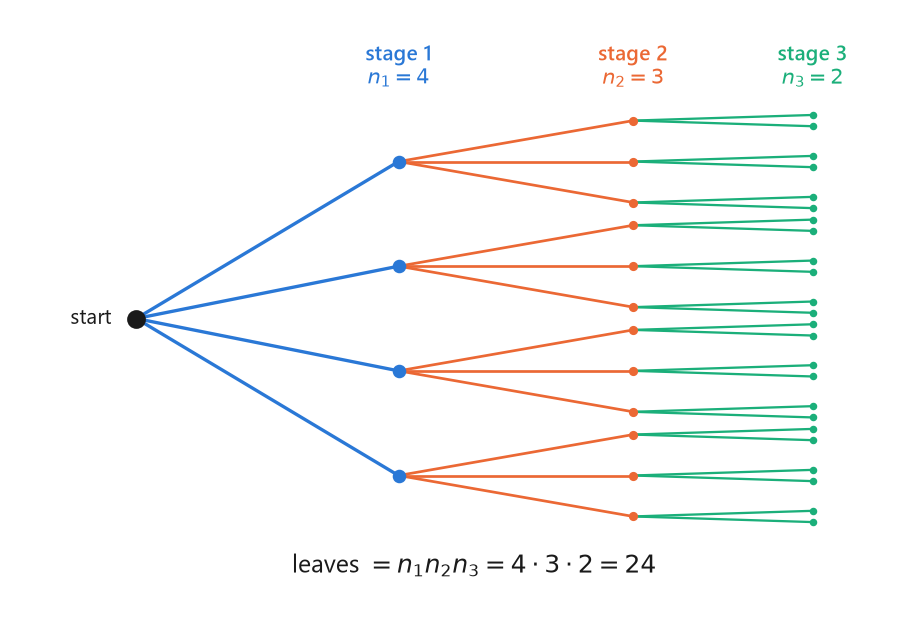
Derivation (the slide states the product rule with no proof — L04 slide 3 [derivation gap]). Argue by induction on the number of stages $r$, counting the leaves of the tree in Fig. 4.1.
- Base case $r=1$. A one-stage selection is just a choice among $n_1$ alternatives, so there are $n_1$ selections, which is the claimed product.
- Induction step. Assume the result for $r-1$ stages: there are $n_1\cdots n_{r-1}$ distinct partial selections through stage $r-1$, i.e. $n_1\cdots n_{r-1}$ nodes at depth $r-1$ of the tree. Each such node is extended in exactly $n_r$ ways — exactly, by hypothesis, because $n_r$ does not depend on the earlier choices — and two complete selections are different whenever they differ at some stage. So the complete selections are partitioned into $n_1\cdots n_{r-1}$ groups of $n_r$ each, and their number is $(n_1\cdots n_{r-1})\cdot n_r = n_1n_2\cdots n_r$. $\blacksquare$
Solution. Model a plate as a $7$-stage selection: stages $1$–$3$ choose the letters, stages $4$–$7$ the digits. There are $n_1=n_2=n_3=26$ choices (the letters of the alphabet) and $n_4=\cdots=n_7=10$ (the digits $0$–$9$), and none of these counts depends on earlier choices since repetition is allowed. By the counting principle, $$26\cdot 26\cdot 26\cdot 10\cdot 10\cdot 10\cdot 10 \;=\; 26^3\cdot 10^4 \;=\; 17{,}576 \cdot 10{,}000 \;=\; 175{,}760{,}000 .$$
Solution. The stages are the same; only the counts change, because each stage must avoid the symbols already used. Letters: $26$, then $25$, then $24$. Digits: $10$, then $9$, then $8$, then $7$. Each count is independent of which symbols were used, so the principle applies: $$26\cdot 25\cdot 24 \;=\; 15{,}600, \qquad 10\cdot 9\cdot 8\cdot 7 \;=\; 5{,}040,$$ $$26\cdot 25\cdot 24\cdot 10\cdot 9\cdot 8\cdot 7 \;=\; 15{,}600 \cdot 5{,}040 \;=\; 78{,}624{,}000 .$$ As a check on plausibility, the ratio to Example 4.1 is $78{,}624{,}000/175{,}760{,}000 \approx 0.447337$: forbidding repetition removes about $55\%$ of the plates.
Solution. Specify a subset $S$ by an $n$-stage process: at stage $i$ decide whether the element $i$ belongs to $S$. Each stage has $n_i = 2$ choices ("in" or "out"), independently of the earlier decisions, and distinct decision sequences give distinct subsets while every subset is produced by exactly one sequence — the map (decision sequence) $\mapsto$ (subset) is a bijection. Hence the number of subsets is $$\underbrace{2\cdot 2\cdots 2}_{n \text{ stages}} \;=\; 2^n .$$ For $n=3$ this gives $2^3 = 8$, and indeed $\varnothing,\{1\},\{2\},\{3\},\{1,2\},\{1,3\},\{2,3\},\{1,2,3\}$ are eight sets. Note that the empty set and the full set are both counted — a frequent off-by-two slip. (This closes the [derivation gap] on L04 slide 3, which asserted the subset count without saying that subset selection is an $n$-stage binary process.)
Solution
Four stages, with $26$, $25$, $24$, $23$ choices: $26\cdot 25\cdot 24\cdot 23 = 358{,}800$. This is the $4$-permutation count $26!/22!$ of §4.3.
Solution
Treat "skip" as an extra choice in each course, giving $3+1=4$, $5+1=6$, $4+1=5$ options and $4\cdot 6\cdot 5 = 120$ meals. Exactly one of them is the empty meal, so there are $119$ non-empty meals. The lesson: an option to abstain is folded into the product by adding $1$ to that stage's count — the same device that turns the subset count into $2^n$ ("take it" or "leave it").
4.3 Permutations and $k$-permutations
(i) Orderings of all $n$ elements. Build an ordering in $n$ stages, where stage $i$ names the element that occupies position $i$. Stage $1$ has $n$ candidates. Stage $2$ has $n-1$: every element except the one already placed — again, which element is excluded depends on stage $1$, but the count $n-1$ does not, so the counting principle applies. Continuing, stage $i$ has $n-i+1$ candidates and the last stage has $1$. Therefore $$\#\{\text{orderings of } n \text{ elements}\} \;=\; n(n-1)(n-2)\cdots 2\cdot 1 \;=\; n! ,$$ with the convention $0! = 1$ (the empty sequence is the unique ordering of nothing). For $n=4$ this is $4! = 24$. (This closes the second half of the L04 slide 3 [derivation gap].)
(ii) $k$-permutations (L04 slide 5). Stop the same process after $k$ stages. The counts are $n, n-1, \dots, n-k+1$ — there are exactly $k$ factors, the last being $n-k+1$ because $k-1$ elements have already been used. Hence $$\#\{k\text{-permutations}\} \;=\; n(n-1)\cdots(n-k+1) \;=\; \frac{n(n-1)\cdots(n-k+1)\cdot (n-k)!}{(n-k)!} \;=\; \frac{n!}{(n-k)!},$$ where the middle step multiplies and divides by $(n-k)! = (n-k)(n-k-1)\cdots 1$ so that the numerator telescopes into the full factorial $n!$. Example: the number of ways to award gold, silver and bronze among $7$ runners is $7!/4! = 7\cdot 6\cdot 5 = 210$.
Solution. Three quantities are needed; the slide gives only their labels.
(i) Sample space. An outcome is the ordered sequence $(a_1,\dots,a_6)$ of the six results, $a_i \in\{1,\dots,6\}$. This is a $6$-stage selection with $6$ choices each, so $$|\Omega| \;=\; 6\cdot 6\cdot 6\cdot 6\cdot 6\cdot 6 \;=\; 6^6 \;=\; 46{,}656 .$$ Because the die is fair and the rolls are separate, all $46{,}656$ sequences are equally likely, which licenses the uniform law of §4.1.
(ii) Favorable outcomes. The event $A$ = "all six results different" consists of the sequences whose six entries are distinct. Since there are exactly six possible values and six positions, such a sequence uses every value exactly once — it is a permutation of $\{1,\dots,6\}$. Hence $$|A| \;=\; 6! \;=\; 720 .$$
(iii) Answer. By the discrete uniform law, $$\mathbf{P}(A) \;=\; \frac{|A|}{|\Omega|} \;=\; \frac{6!}{6^6} \;=\; \frac{720}{46{,}656} \;=\; \frac{5}{324} \;\approx\; 0.015432 ,$$ about $1.543\%$.
Cross-check by the multiplication rule (L02 slide 6), which needs no counting at all: the first roll is unconstrained, the second must avoid $1$ value out of $6$, the third must avoid $2$, and so on, so $$\mathbf{P}(A) = \frac{6}{6}\cdot\frac{5}{6}\cdot\frac{4}{6}\cdot\frac{3}{6}\cdot\frac{2}{6}\cdot\frac{1}{6} = 1 \cdot 0.833333 \cdot 0.666667 \cdot 0.5 \cdot 0.333333 \cdot 0.166667 = 0.015432 ,$$ the same value. The two routes are the same arithmetic reorganized: $6!/6^6 = \prod_{i=0}^{5}(6-i)/6$.
Solution
Medals are distinguishable, so the answer is a $3$-permutation of $12$: $12!/9! = 12\cdot 11\cdot 10 = 1{,}320$.
Solution
Glue A and B into a single block. There are then $4$ objects to order, giving $4! = 24$ orderings, and the block itself can be internally arranged in $2! = 2$ ways (AB or BA). By the counting principle the answer is $24 \cdot 2 = 48$ out of the $5! = 120$ unrestricted seatings, i.e. a proportion $48/120 = 2/5$. The "glue" trick is the standard way to convert an adjacency constraint into a plain permutation count.
4.4 Combinations $\binom{n}{k}$ — two derivations
Derivation 1 — via $k$-permutations (the slide's argument, L04 slide 5). Count in two ways the same collection $\mathcal{T}$ of objects: ordered sequences of $k$ distinct items drawn from the $n$. The slide asserts that the two constructions produce the same set without saying so explicitly — that is the [derivation gap] we now fill.
- Way A — choose the items one at a time. This is exactly the $k$-permutation count of §4.3: $$|\mathcal{T}| \;=\; n(n-1)\cdots(n-k+1) \;=\; \frac{n!}{(n-k)!}.$$
- Way B — choose first, order later. A two-stage construction: stage 1 picks the set of $k$ items that will appear, which can be done in $\binom{n}{k}$ ways by definition; stage 2 arranges those $k$ chosen items in a row, which can be done in $k!$ ways by the permutation count. The number of stage-2 choices is $k!$ whatever set was chosen at stage 1, so the counting principle gives $$|\mathcal{T}| \;=\; \binom{n}{k}\cdot k! .$$
- Why these count the same thing. Way B's output is a $k$-element set together with an ordering of it, which is the same data as an ordered sequence of $k$ distinct items; conversely every such sequence determines its underlying set and its order. The correspondence is one-to-one in both directions, so the two counts are equal.
Equating them, $$\binom{n}{k}\cdot k! \;=\; \frac{n!}{(n-k)!} \qquad\Longrightarrow\qquad \boxed{\;\binom{n}{k} \;=\; \frac{n!}{k!\,(n-k)!}\;}$$ after dividing both sides by $k! > 0$.
Derivation 2 — via choosing positions (the "slot" argument). This second route is worth having because it generalizes directly to the multinomial coefficient in §4.6. Line up all $n$ items in a row; there are $n!$ such lineups. Declare the items in the first $k$ positions to be "chosen" and the rest "not chosen." Every lineup thus produces a $k$-subset, and every $k$-subset is produced by some lineup. How many lineups give the same subset? The $k$ chosen items can be permuted among the first $k$ slots in $k!$ ways and the $n-k$ unchosen items among the remaining slots in $(n-k)!$ ways, and by the counting principle these can be combined freely: exactly $k!\,(n-k)!$ lineups per subset — the same number for every subset, which is what makes the division legal. Hence $$n! \;=\; \binom{n}{k}\cdot k!\,(n-k)! \qquad\Longrightarrow\qquad \binom{n}{k} = \frac{n!}{k!\,(n-k)!},$$ in agreement with Derivation 1. Equivalently: $\binom{n}{k}$ is the number of binary strings of length $n$ with exactly $k$ ones — read "chosen" as a $1$ — a reading used in the binomial derivation of §4.5.
Two immediate consequences. Symmetry: $\binom{n}{k} = \frac{n!}{k!(n-k)!} = \frac{n!}{(n-k)!\,k!} = \binom{n}{n-k}$, because choosing the $k$ members is the same act as choosing the $n-k$ non-members. Small cases: $\binom{n}{0}=\binom{n}{n}=1$ and $\binom{n}{1}=n$. For instance $\binom{5}{2} = 5!/(2!\,3!) = 120/12 = 10$, which also equals the $2$-permutation count $5\cdot4=20$ divided by $2! = 2$, i.e. $20/2 = 10$; and the number of $5$-card poker hands from a $52$-card deck is $\binom{52}{5} = 2{,}598{,}960$.
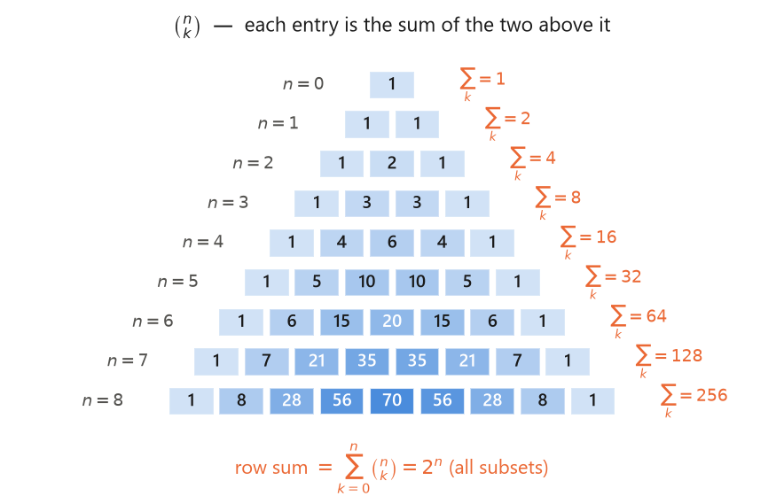
computes/g1_s4.py, key pascal_rows_0_8). Row sums on the right illustrate $\sum_k \binom{n}{k} = 2^n$ (L04 slide 5).Solution — by double counting. Let $\mathcal{S}$ be the collection of all subsets of $\{1,\dots,n\}$.
Count 1. Classify the subsets by their size. For each $k \in \{0,1,\dots,n\}$ there are $\binom{n}{k}$ subsets of size exactly $k$; the classes are disjoint (a set has one size) and exhaustive (every subset has some size between $0$ and $n$), so $|\mathcal{S}| = \sum_{k=0}^{n}\binom{n}{k}$.
Count 2. By Example 4.3, $|\mathcal{S}| = 2^n$.
The two counts refer to the same collection, hence
$$\sum_{k=0}^{n}\binom{n}{k} \;=\; 2^n .$$
Check at $n=5$: $1+5+10+10+5+1 = 32 = 2^5$, and the identity was verified numerically for all
$n \le 12$ in the compute script (key sum_identity_check_n_0_12).
Solution
(a) The committee is an unordered $5$-subset: $\binom{12}{5} = 12!/(5!\,7!) = 792$.
(b) Two stages: choose the committee ($792$ ways), then choose its chair among its $5$ members ($5$ ways, the same count for every committee). By the counting principle, $792\cdot 5 = 3{,}960$. Equivalently, choose the chair first ($12$ ways) and then the other four members from the remaining $11$: $12\cdot\binom{11}{4} = 12\cdot 330 = 3{,}960$ — the same answer by a different staging, which is a useful self-check.
Solution
Fix the element $n$ and split the $k$-subsets of $\{1,\dots,n\}$ into two disjoint, exhaustive classes. Class 1: those containing $n$. Removing $n$ leaves a $(k-1)$-subset of the remaining $n-1$ elements, and this correspondence is a bijection, so class 1 has $\binom{n-1}{k-1}$ members. Class 2: those not containing $n$ — these are exactly the $k$-subsets of $\{1,\dots,n-1\}$, so class 2 has $\binom{n-1}{k}$ members. Adding the two disjoint classes gives the identity. Numerically, $\binom{7}{3} + \binom{7}{4} = 35 + 35 = 70 = \binom{8}{4}$, matching the last row of Fig. 4.2.
One counting object is still missing, and $\binom{n}{k}$ supplies it. Drawing $k$ items from $n$ types admits four regimes — ordered or not, with replacement or not — and three of them have appeared: sequences $n^k$ (ordered, with replacement, §4.2), $k$-permutations $n!/(n-k)!$ (ordered, without replacement, §4.3) and subsets $\binom{n}{k}$ (unordered, without replacement, just now). The fourth is the unordered draw with replacement, where an item may be picked several times and only the tally matters. Its outcome is a multiset: a selection recording how many copies of each type were taken, so that from types $\{a,b,c\}$ the draws $aab$ and $aba$ are the same object, described by the counts $(2,1,0)$.
Derivation — a bijection with strings of stars and bars. Encode a multiset as a row of symbols, using $k$ stars ($\star$) for the items drawn and $n-1$ bars ($\mid$) as fences separating the $n$ types: write $k_1$ stars, a bar, $k_2$ stars, a bar, …, a bar, $k_n$ stars. The row has $k + (n-1)$ symbols in all. With $n=4$ types and $k=6$ draws, the multiset with counts $(2,0,3,1)$ becomes $$\star\star \mid \; \mid \star\star\star \mid \star ,$$ the empty gap between the first two bars recording that type $2$ was never drawn. The encoding is a bijection, and both directions must be checked, which is the whole content of the argument:
- Every multiset gives exactly one row. The counts $k_1,\dots,k_n$ are determined by the multiset, and the recipe above then fixes the row symbol by symbol.
- Every row gives exactly one multiset. Given a row of $k$ stars and $n-1$ bars, the bars cut it into exactly $n$ (possibly empty) blocks; reading off the block lengths $k_1,\dots,k_n$ recovers the counts, and they sum to $k$ because every star lies in exactly one block.
So the multisets are in one-to-one correspondence with the rows, and it remains to count rows. A row is determined by which of its $n+k-1$ positions hold the stars — a $k$-element subset of the positions, everything else being a bar — so by the combination count above there are $\binom{n+k-1}{k}$ rows. Choosing the bars' positions instead gives $\binom{n+k-1}{n-1}$, the same number by the symmetry $\binom{N}{j}=\binom{N}{N-j}$. $\blacksquare$
Two instances. From $n=3$ types, the $k=2$ multisets number $\binom{3+2-1}{2}=\binom{4}{2}=6$, and
they can be listed: $11, 12, 13, 22, 23, 33$ — the $9$ ordered pairs collapse to $6$ because $12$ and
$21$ are the same tally. From $n=6$ types with $k=6$ draws, the count is
$\binom{11}{6} = \binom{11}{5} = 462$: the number of distinguishable unordered results of six rolls
of a die, against $6^6 = 46{,}656$ ordered ones. (Both counts, and the formula itself for all
$n\le 8$, $k\le 7$, are checked by direct enumeration in computes/g1_s4.py, key
multiset_formula_check.)
4.5 Binomial probabilities
Now counting meets independence. Toss a coin $n$ times independently, with $\mathbf{P}(H)=p$ on each toss, where $p\in[0,1]$ is the head probability and $n\ge 1$ the number of tosses (L04 slide 6). The sample space is the set of $2^n$ head–tail sequences of length $n$; unless $p=1/2$ it is not uniform, so §4.1 does not apply directly and we must weight sequences individually.
Solution. Let $A_i$ be the event that toss $i$ gives the letter demanded by the sequence. The tosses are independent, so the probability of the intersection is the product of the individual probabilities (L03 slide 3): $$\mathbf{P}(HTTHHH) = p\cdot(1-p)\cdot(1-p)\cdot p\cdot p\cdot p = p^4 (1-p)^2 ,$$ since the sequence $HTTHHH$ contains $4$ heads and $2$ tails. Only the counts survive, not the order. In general $$\mathbf{P}(\text{a specified sequence}) = p^{\#\text{heads}}(1-p)^{\#\text{tails}} . $$
Derivation, every step (the slide compresses this — L04 slide 6 [derivation gap]). Let $B_k \subseteq \Omega$ be the event "exactly $k$ heads."
Step 1 (additivity). $B_k$ is the disjoint union of its one-element subsets, so by the additivity axiom $$\mathbf{P}(B_k) \;=\; \sum_{\text{sequences } s \text{ with } k \text{ heads}} \mathbf{P}(s).$$
Step 2 (every term is the same). By Example 4.7, a sequence with $k$ heads has $n-k$ tails and probability $p^k(1-p)^{n-k}$ — a value depending only on $k$, not on where the heads sit. A sum of $M$ equal terms is $M$ times the common term, so $$\mathbf{P}(B_k) \;=\; \big(\#\text{ of } k\text{-head sequences}\big)\cdot p^k(1-p)^{n-k}.$$
Step 3 (the count). A $k$-head sequence is completely determined by the set of positions occupied by the heads, a $k$-element subset of the $n$ toss indices $\{1,\dots,n\}$; conversely each such subset yields one sequence. The correspondence is a bijection, so by §4.4 the count is $\binom{n}{k}$. Substituting, $$\mathbf{P}(B_k) \;=\; \binom{n}{k}p^k(1-p)^{n-k}. \qquad \blacksquare$$
Sanity check. Summing over $k$ must give $1$: indeed $\sum_{k=0}^n \binom{n}{k}p^k(1-p)^{n-k} = \big(p+(1-p)\big)^n = 1$ by the binomial theorem — and at $p=1/2$ this reduces to $\sum_k\binom{n}{k}=2^n$, Example 4.6. Numerically, with $n=10$: at $p=0.3$, $\mathbf{P}(4\text{ heads}) = \binom{10}{4}(0.3)^4(0.7)^6 = 210 \cdot 0.0081 \cdot 0.117649 = 0.200121$; at $p=0.5$, $\mathbf{P}(5\text{ heads}) = \binom{10}{5}(0.5)^{10} = 252/1024 = 0.246094$.
(i) Why the conditional law on $B$ is uniform. Every outcome $\omega \in B$ is a $10$-toss sequence with $3$ heads and $7$ tails, so by Example 4.7 it has the same unconditional probability $\mathbf{P}(\omega) = p^3(1-p)^7$. By the definition of conditional probability (L02 slide 3), for $\omega\in B$, $$\mathbf{P}(\omega \mid B) = \frac{\mathbf{P}(\{\omega\}\cap B)}{\mathbf{P}(B)} = \frac{p^3(1-p)^7}{\mathbf{P}(B)},$$ which is the same number for all $\omega \in B$. So the conditional law is uniform on $B$ and §4.1 applies inside $B$: for any event $A$, $\mathbf{P}(A\mid B) = |A\cap B| / |B|$.
(ii) Number of outcomes in $B$. By Step 3 above, a $3$-head sequence is determined by the $3$-element set of head positions among $10$, so $$|B| = \binom{10}{3} = \frac{10!}{3!\,7!} = \frac{10\cdot 9\cdot 8}{6} = 120 .$$ (Consistency check: $\mathbf{P}(B) = 120\,p^3(1-p)^7$, so $\mathbf{P}(\omega\mid B) = p^3(1-p)^7 / \big(120\,p^3(1-p)^7\big) = 1/120$, confirming uniformity.)
(iii) How many outcomes of $B$ start with $HH$? Fix tosses $1$ and $2$ to be heads. Since the sequence must contain $3$ heads in total, exactly $1$ head remains to be placed among the $8$ remaining positions $3,\dots,10$, and the other $7$ positions are tails. The number of ways to choose that one position is $$\binom{8}{1} = 8 .$$
(iv) The answer (the slide stops before this division): $$\mathbf{P}(\text{first two tosses are heads}\mid B) \;=\; \frac{\binom{8}{1}}{\binom{10}{3}} \;=\; \frac{8}{120} \;=\; \frac{1}{15} \;\approx\; 0.066667 .$$ Verification. The compute script evaluates the ratio $\sum_{\omega\in B,\ \omega_1=\omega_2=H}\mathbf{P}(\omega) \big/ \sum_{\omega\in B}\mathbf{P}(\omega)$ by brute force over all $2^{10}$ sequences at $p = 0.2$, $0.5$ and $0.77$, obtaining $0.066666667$ in all three cases — the answer really is free of $p$.
Solution
Use the complement, which needs two binomial terms instead of seven. With $n=8$, $p=0.25$: $$\mathbf{P}(0) = \binom{8}{0}(0.25)^0(0.75)^8 = (0.75)^8 = 0.100113,$$ $$\mathbf{P}(1) = \binom{8}{1}(0.25)^1(0.75)^7 = 8\cdot 0.25\cdot 0.133484 = 0.266968,$$ $$\mathbf{P}(\ge 2) = 1 - 0.100113 - 0.266968 = 0.632919 .$$
Solution
By the argument of Example 4.8 the conditional law is uniform over the $\binom{12}{6}$ arrangements of $6$ heads among $12$ slots, and by symmetry each slot is equally likely to hold one of the $6$ heads, so the answer is $6/12 = 1/2$. Confirming by counting: the favorable arrangements have a head in slot $1$ and $5$ more heads among the remaining $11$ slots, i.e. $\binom{11}{5} = 462$, and $\binom{12}{6} = 924$, so the probability is $462/924 = 1/2$. If instead $7$ heads had been observed the answer would be $7/12$ — the conditional probability tracks the observed frequency, not the coin's $p$.
4.6 Partitions and the multinomial coefficient
The last counting object generalizes the subset. Instead of splitting $n$ distinct items into two groups of sizes $k$ and $n-k$, split them into $r$ labeled groups of prescribed sizes.
Derivation A — sequential choice of groups (the argument used in lecture). Build the partition in $r$ stages, stage $i$ deciding which items form group $i$.
- Stage $1$: choose $n_1$ items out of the $n$ available: $\binom{n}{n_1}$ ways.
- Stage $2$: choose $n_2$ items out of the $n-n_1$ that remain: $\binom{n-n_1}{n_2}$ ways — and this count is the same whatever stage 1 chose, so the counting principle applies.
- Stage $i$: $\binom{n-n_1-\cdots-n_{i-1}}{n_i}$ ways; the last stage has $\binom{n_r}{n_r}=1$ way, since only $n_r$ items are left.
Multiplying and writing each coefficient out, $$\binom{n}{n_1}\binom{n-n_1}{n_2}\cdots\binom{n_r}{n_r} = \frac{n!}{n_1!\,(n-n_1)!}\cdot\frac{(n-n_1)!}{n_2!\,(n-n_1-n_2)!}\cdots\frac{n_r!}{n_r!\,0!}.$$ Every "remainder" factorial $(n-n_1)!,\ (n-n_1-n_2)!,\ \dots$ appears once in a numerator and once in a denominator and cancels — the product telescopes — leaving $$\frac{n!}{n_1!\,n_2!\cdots n_r!}. \qquad\blacksquare$$ (This closes the L04 slide 8 [derivation gap], which stated $52!/(13!)^4$ with no derivation.)
Statement. Derive the multinomial coefficient — the number of partitions of $n$ distinct items into groups of sizes $n_1,\dots,n_r$ — by a different argument than the one used in class. Consider $n$ items placed into $n$ slots, and divide the group of $n$ slots into consecutive segments of lengths $n_1,\dots,n_r$. Show how many different ways the $n$ items can be arranged into the $r$ segments.
Solution
Setup. Fix a row of $n$ slots and cut it, once and for all, into $r$ consecutive segments: slots $1,\dots,n_1$ form segment $1$; slots $n_1+1,\dots,n_1+n_2$ form segment $2$; and so on, with segment $i$ having length $n_i$. The cut is possible precisely because $n_1+\cdots+n_r=n$ — a constraint the official solution leaves implicit.
Step 1 — count arrangements. Place the $n$ distinct items into the $n$ slots, one per slot. This is an ordering of $n$ distinct objects, so by §4.3 there are $n!$ arrangements.
Step 2 — each arrangement induces a partition. Read off, for each $i$, the set of items sitting in segment $i$. That produces a partition into groups of the prescribed sizes $n_1,\dots,n_r$, and every such partition arises this way (put the members of group $i$ into segment $i$ in any order).
Step 3 — the map is exactly $n_1!\cdots n_r!$-to-one. This is the step the official solution asserts rather than verifies. Fix a target partition $(G_1,\dots,G_r)$. An arrangement induces it if and only if the items of $G_i$ occupy segment $i$, for every $i$. Within segment $i$ its $n_i$ items may be ordered in $n_i!$ ways, and the choices in different segments are unconstrained, so by the counting principle the number of arrangements mapping to this particular partition is $$n_1!\,n_2!\cdots n_r! ,$$ a number that does not depend on which partition was chosen. This uniformity is what licenses dividing rather than merely bounding.
Step 4 — divide. The $n!$ arrangements are thereby split into groups of equal size $n_1!\cdots n_r!$, one group per partition, so $$\#\text{partitions} \;=\; \frac{\text{ways to arrange } n \text{ items}}{(\text{ways within segment }1)\cdots(\text{ways within segment } r)} \;=\; \frac{n!}{n_1!\,n_2!\cdots n_r!} \;=\; \binom{n}{n_1,\dots,n_r},$$ in the notation the recitation solution does not introduce. This agrees with Derivation A.
Numerical check. Partition $6$ distinct items into groups of $3,2,1$: $6!/(3!\,2!\,1!) = 720/12 = 60$; the sequential derivation gives $\binom{6}{3}\binom{3}{2}\binom{1}{1} = 20\cdot 3\cdot 1 = 60$. A second use: the number of distinguishable arrangements of the letters of MISSISSIPPI ($1$ M, $4$ I, $4$ S, $2$ P) is $11!/(1!\,4!\,4!\,2!) = 39{,}916{,}800/1{,}152 = 34{,}650$ — here the "groups" are the sets of positions assigned to each letter.
Model. An outcome is a deal: a partition of the $52$ distinct cards into four labeled $13$-card hands. "Well shuffled" makes all deals equally likely, so the uniform law applies.
(i) Size of the sample space. By the multinomial coefficient with $n=52$, $r=4$ and $n_1=n_2=n_3=n_4=13$, $$|\Omega| = \frac{52!}{13!\,13!\,13!\,13!} \approx 5.364474\times 10^{28}.$$
(ii) Favorable deals, stage 1 — distribute the aces. Deal the four aces to players by a $4$-stage process: the first ace can go to any of the $4$ players; the second, which must go to a different player, to any of the remaining $3$; the third to either of the remaining $2$; the fourth to the single player left. Hence $$4\cdot 3\cdot 2\cdot 1 = 4! = 24$$ ways. (The slide writes "$4\cdot 3\cdot 2$", omitting the trailing factor $1$; the value $24$ is unchanged. This spells out the stage-by-stage reasoning the slide leaves verbal.)
(iii) Favorable deals, stage 2 — distribute the other $48$ cards. After the aces, each player still needs $12$ more cards, so the $48$ non-ace cards are partitioned into four labeled groups of $12$: $$\frac{48!}{12!\,12!\,12!\,12!} \approx 2.358093\times 10^{26}$$ ways, again by the multinomial coefficient. The count is the same regardless of how the aces were distributed, so the counting principle multiplies the two stages.
(iv) Answer.
$$\mathbf{P}(\text{each gets an ace}) \;=\; \frac{4!\cdot \dfrac{48!}{(12!)^4}}{\dfrac{52!}{(13!)^4}} .$$
Simplify — the slide stops here. Rewrite the ratio as
$$24\cdot\frac{48!}{(12!)^4}\cdot\frac{(13!)^4}{52!}
= 24\cdot\left(\frac{13!}{12!}\right)^{4}\cdot\frac{48!}{52!}
= 24\cdot 13^4\cdot\frac{1}{52\cdot 51\cdot 50\cdot 49},$$
using $13!/12! = 13$ and $52!/48! = 52\cdot51\cdot50\cdot49$. Numerically,
$$= \frac{24\cdot 28{,}561}{6{,}497{,}400} = \frac{685{,}464}{6{,}497{,}400} = \frac{2197}{20825} \approx 0.105498 .$$
So roughly one deal in ten spreads the aces one per player. The compute script confirms that the
exact rational from the unsimplified expression equals $2197/20825$ (key
cards_ace_prob_closedform_matches).
Reading the closed form. $24\cdot 13^4/(52\cdot51\cdot50\cdot49)$ is exactly the probability that four cards drawn without replacement land in four different $13$-card blocks — a reminder that the enormous factorials were never necessary; only the aces' fates matter.
Statement. At each draw there is a probability $p_i$ ($i=1,\dots,r$) of getting a ball of color $i$. Draw $n$ objects. What is the probability of obtaining exactly $n_i$ balls of each color $i$?
Solution
Standing assumptions (left implicit in the official solution): the draws are independent and identically distributed — as in drawing with replacement — the color probabilities satisfy $p_1+\cdots+p_r = 1$, and the target counts satisfy $n_1+\cdots+n_r = n$ with $n_i \ge 0$. If the $n_i$ do not sum to $n$ the probability is $0$.
Step 1 — probability of one particular sequence. An outcome is the ordered sequence of $n$ colors drawn. Fix a sequence containing exactly $n_i$ balls of color $i$. By independence, the probability of the intersection of the $n$ single-draw events is the product of their probabilities, and grouping equal factors, $$\mathbf{P}(\text{that sequence}) = p_1^{n_1}p_2^{n_2}\cdots p_r^{n_r},$$ a value depending only on the counts, not on the order — the same phenomenon as in Example 4.7.
Step 2 — how many such sequences. A sequence with the prescribed counts is determined by deciding which of the $n$ draw positions (slots) receive color $1$, which receive color $2$, and so on: that is exactly a partition of $n$ distinct slots into labeled groups of sizes $n_1,\dots,n_r$. By Example 4.9 there are $$\binom{n}{n_1,\dots,n_r} = \frac{n!}{n_1!\cdots n_r!}$$ such sequences.
Step 3 — add up. The event "exactly $n_i$ of color $i$" is the disjoint union of those sequences, all of the same probability, so by additivity $$\mathbf{P}(n_1 \text{ of color }1,\dots,n_r\text{ of color }r) = \binom{n}{n_1,\dots,n_r}p_1^{n_1}\cdots p_r^{n_r} = \frac{n!}{n_1!\cdots n_r!}\,p_1^{n_1}\cdots p_r^{n_r}.$$ For $r=2$ this is the binomial formula of §4.5, with $(p_1,p_2)=(p,1-p)$ and $(n_1,n_2)=(k,n-k)$.
Numerical illustration and sanity check. With $n=10$, $r=3$, $p=(0.5,0.3,0.2)$ and counts
$(5,3,2)$: the coefficient is $10!/(5!\,3!\,2!) = 2{,}520$ and
$$\mathbf{P} = 2520\cdot (0.5)^5(0.3)^3(0.2)^2 = 0.085050 .$$
Summing the formula over all $66$ triples $(n_1,n_2,n_3)$ of nonnegative integers with sum $10$ gives
exactly $1.0$ (key mnprob_sums_to_one) — the distribution is properly normalized.
Solution
Labeled: $\dfrac{12!}{4!\,4!\,4!} = \dfrac{479{,}001{,}600}{13{,}824} = 34{,}650$. Unlabeled: divide by $3! = 6$ because the $6$ color assignments of a given split all give the same unlabeled split, yielding $5{,}775$.
Solution
This is Example 4.11 with $r=6$, $n=12$, all $p_i = 1/6$, all $n_i = 2$: $$\mathbf{P} = \frac{12!}{(2!)^6}\left(\frac16\right)^{12} = \frac{479{,}001{,}600}{64}\cdot\frac{1}{2{,}176{,}782{,}336} = \frac{7{,}484{,}400}{2{,}176{,}782{,}336} \approx 0.003438 .$$ Equivalently by the uniform law: $|\Omega| = 6^{12}$ sequences, and the favorable ones are the arrangements of the multiset $\{1,1,2,2,3,3,4,4,5,5,6,6\}$, of which there are $12!/(2!)^6$. Perfect balance is rare even for a fair die — a useful antidote to the intuition that "fair" means "even."
4.7 Recitation 4: the three probability problems, fully solved
Recitation 4 has five problems. The two purely combinatorial ones were needed earlier and were solved there: P4 (the slot derivation of the multinomial coefficient) is Example 4.9 in §4.6, and P5 (multinomial probabilities) is Example 4.11 in §4.6. The remaining three — P1, P2, P3 — are genuine probability problems and are solved below.
Problem 1 — the birthday problem (rec04 P1; B&T Problem 1.50, p. 67)
Statement. Consider $n$ people attending a party. Assume every person is equally likely to be born on any day of the year, independently of everyone else, and ignore leap years (nobody is born on February 29). What is the probability that each person has a distinct birthday?
Solution
Step 1 — sample space. An outcome records the birthday of each person, so it is an ordered $n$-tuple $(b_1,\dots,b_n)$ with $b_j \in \{1,\dots,365\}$ the birthday of person $j$. Person $j$ has $365$ choices, independently of the others, so by the counting principle $$|\Omega| = \underbrace{365\cdot 365\cdots 365}_{n} = 365^n .$$ By the equal-likelihood and independence assumptions all these tuples are equally likely, so the uniform law applies.
Step 2 — favorable outcomes. Let $A$ be the event "no two birthdays coincide," i.e. the tuple has $n$ distinct entries. Build such a tuple in $n$ stages: person $1$ has $365$ choices; person $2$ must avoid person $1$'s day, so $364$; person $3$ must avoid two days, so $363$; and in general person $j$ has $365-(j-1)$ choices. The counts do not depend on which days were used, so $$|A| = 365\cdot 364\cdot 363\cdots (365-n+1) = \frac{365!}{(365-n)!},$$ valid for $n \le 365$; for $n > 365$ we have $|A| = 0$, since $366$ people cannot have distinct days (the pigeonhole principle).
Step 3 — the probability. By the uniform law, $$P(n) \;\equiv\; \mathbf{P}(\text{no two birthdays coincide}) \;=\; \frac{365\cdot 364\cdots(365-n+1)}{365^n} \;=\; \prod_{i=0}^{n-1}\left(1-\frac{i}{365}\right).$$ The product form comes from dividing the $j$-th numerator factor $365-(j-1)$ by one copy of $365$; it is also exactly the multiplication rule applied sequentially (each new person must miss the birthdays already taken).
Step 4 — the $n=23$ crossing. Evaluating exactly (compute key birthday_table):
| $n$ | $P(n)$ = all distinct | $1-P(n)$ = some match |
|---|---|---|
| 5 | 0.972864 | 0.027136 |
| 10 | 0.883052 | 0.116948 |
| 15 | 0.747099 | 0.252901 |
| 20 | 0.588562 | 0.411438 |
| 22 | 0.524305 | 0.475695 |
| 23 | 0.492703 | 0.507297 |
| 24 | 0.461656 | 0.538344 |
| 30 | 0.293684 | 0.706316 |
| 40 | 0.108768 | 0.891232 |
| 50 | 0.029626 | 0.970374 |
| 57 | 0.009878 | 0.990122 |
| 80 | 0.000086 | 0.999914 |
At $n=22$ the collision probability is $0.475695 < 1/2$; at $n=23$ it is $0.507297 > 1/2$. So $23$ is the smallest group size for which a shared birthday is more likely than not — the remark the recitation solution makes without computation. The threshold $99\%$ is first exceeded at $n=57$.
Step 5 — why so few people (the approximation). Use $1-x \le e^{-x}$, exact to first order for small $x$: $$P(n) = \prod_{i=0}^{n-1}\left(1-\frac{i}{365}\right) \approx \exp\left(-\sum_{i=0}^{n-1}\frac{i}{365}\right) = \exp\left(-\frac{n(n-1)}{2\cdot 365}\right),$$ using $\sum_{i=0}^{n-1} i = n(n-1)/2$. At $n=23$ this gives $0.499998$ against the exact $0.492703$. Setting the approximation to $1/2$ and solving, $n^2 \approx 2\cdot 365\cdot\ln 2$, i.e. $n \approx \sqrt{2\cdot 365\cdot \ln 2} = 22.494$ — rounding up to $23$. The key structural fact: what matters is the number of pairs, $\binom{n}{2} = n(n-1)/2$, which is quadratic in $n$; with $23$ people there are already $253$ pairs, each having a $1/365$ chance of matching.
Step 6 — the log panel (rec04 Extra Handout). The handout's second panel plots $P(n)$ on a logarithmic axis out to $P \approx 10^{-10}$ near $n \approx 122$. Our exact computation gives $P(121) = 1.6372\times 10^{-10}$ and $P(122) = 1.0945\times 10^{-10}$, with $P(n)$ first dropping below $10^{-10}$ at $n = 123$ — consistent with the handout's curve ending around $n\approx 122$. On a log axis the curve is concave-decreasing because $\ln P(n) \approx -n(n-1)/730$ is quadratic in $n$.
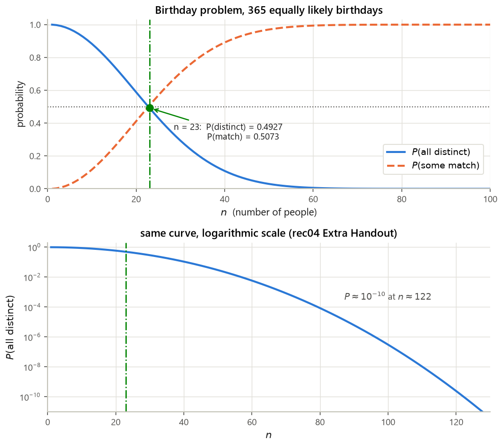
computes/g1_s4.py; the marked crossing is $P(23) = 0.492703$, so $\mathbf{P}(\text{match}) = 0.507297$.Solution
Replace $365$ by $12$: $P(5) = \frac{12\cdot11\cdot10\cdot9\cdot8}{12^5} = 0.381944$, so a shared month has probability $1 - 0.381944 = 0.618056$. Scanning $n$, the collision probability first exceeds $1/2$ at $n=5$ — consistent with the rule of thumb $n \approx \sqrt{2\cdot 12\cdot\ln 2} \approx 4.08$, rounded up. Set the widget's $D$ slider to $12$ to see this.
Problem 2 — eight non-attacking rooks (rec04 P2)
Statement. Eight rooks are placed at random on a chessboard. Find the probability that all the rooks are safe from one another, i.e. that no row and no column contains more than one rook.
Solution
View 1 — the official one-by-one (ordered) count. Treat the rooks as distinguishable and place them one at a time; both numerator and denominator will then count ordered placements, so the labeling cancels.
Denominator. With no restriction, rook $1$ has $64$ squares available, rook $2$ has $63$ (the occupied square is gone), and so on down to $57$ for rook $8$: $$|\Omega| = 64\cdot 63\cdot 62\cdots 57 = \frac{64!}{56!} = 178{,}462{,}987{,}637{,}760 .$$ (The official solution switches between the phrase "$64\cdot 63\cdots 57$" and the symbol $64!/56!$ without comment; they are the same $8$-permutation count of §4.3.)
Numerator. Place safe rooks one at a time. Rook $1$: all $64$ squares. Placing it kills one entire row and one entire column, leaving an effective $7\times 7$ board, so rook $2$ has $49 = 7^2$ squares. Rook $3$ has $36=6^2$, rook $4$ has $25$, then $16$, $9$, $4$, and finally $1 = 1^2$ for rook $8$. Therefore $$|A| = 64\cdot 49\cdot 36\cdot 25\cdot 16\cdot 9\cdot 4\cdot 1 = (8\cdot 7\cdot 6\cdot 5\cdot 4\cdot 3\cdot 2\cdot 1)^2 = (8!)^2 = 1{,}625{,}702{,}400 .$$ (The recitation solution prints only seven factors, stopping at $4$; the eighth factor is $1$, so the value is unaffected, but the pattern $8^2\,7^2\cdots 1^2 = (8!)^2$ is worth completing — see the [source typo] note in the transcript.)
Probability. $$\mathbf{P}(\text{all safe}) = \frac{(8!)^2}{64!/56!} = \frac{1{,}625{,}702{,}400}{178{,}462{,}987{,}637{,}760} = \frac{560}{61{,}474{,}519} \approx 9.109465\times 10^{-6},$$ about one chance in $109{,}776$.
View 2 — the unordered "permutation" count (the argument the official solution omits). Rooks are in reality indistinguishable, so count sets of eight squares.
Denominator. The number of $8$-element subsets of the $64$ squares is $\binom{64}{8} = 4{,}426{,}165{,}368$.
Numerator. A safe configuration has at most one rook per row and per column; with $8$ rooks on an $8\times 8$ board, every row and every column must contain exactly one. So a safe configuration is completely described by the function $\sigma$ sending each row $i$ to the column $\sigma(i)$ of its rook, and safety says $\sigma$ is injective, hence a permutation of $\{1,\dots,8\}$. Conversely every permutation gives a safe configuration. By §4.3 there are $8! = 40{,}320$ of them.
Probability. $\dfrac{8!}{\binom{64}{8}} = \dfrac{40{,}320}{4{,}426{,}165{,}368} \approx 9.109465\times 10^{-6}$
— identical to View 1, as the compute script verifies exactly with rational arithmetic (key
rooks_two_views_agree). The two views differ by the factor $8!$ in both numerator and
denominator, which cancels: $\frac{(8!)^2}{64!/56!} = \frac{8!\cdot 8!}{\binom{64}{8}\cdot 8!} = \frac{8!}{\binom{64}{8}}$.
Closed form. $\mathbf{P} = \dfrac{8!}{\binom{64}{8}} = \dfrac{(8!)^2\,56!}{64!}$ — the compact answer the official solution never writes down.
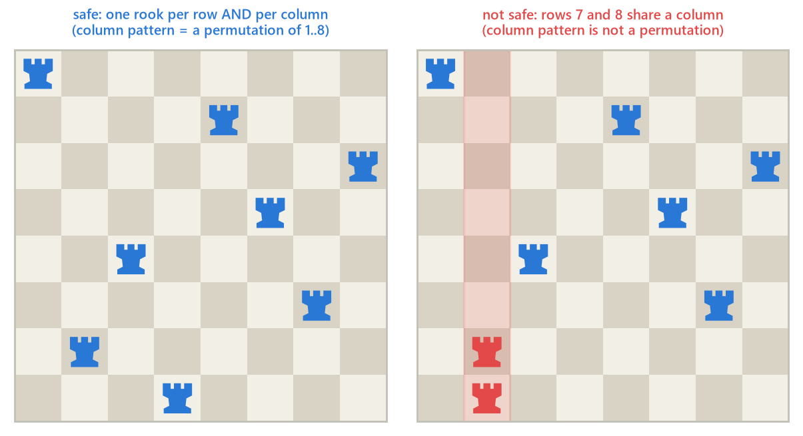
Solution
Unordered view. Denominator: $\binom{16}{3} = 560$ placements. Numerator: choose the $3$ rows used, $\binom{4}{3} = 4$ ways; choose the $3$ columns used, $\binom{4}{3}=4$ ways; match rows to columns by a bijection, $3! = 6$ ways. Total $4\cdot4\cdot6 = 96$. Hence $\mathbf{P} = 96/560 = 6/35 \approx 0.171429$. Note that when the number of rooks is smaller than the board size you must choose which rows and columns are used — the pure-permutation shortcut of Example 4.13 is the special case where all rows and columns are forced.
Problem 3 — hypergeometric probabilities (rec04 P3; B&T Problem 1.61, p. 69)
Statement. An urn contains $n$ balls, of which exactly $m$ are red. We select $k$ of the balls at random, without replacement (selected balls are not returned before the next selection). What is the probability that $i$ of the selected balls are red?
Solution
The recitation solution defers entirely to the textbook [solution gap]; the derivation below is the book's argument (B&T §1.6, Problem 1.61) expanded step by step.
Variables. $n$ = total number of balls, $m$ = number of red balls ($0\le m\le n$), $k$ = number of balls selected ($0\le k\le n$), $i$ = number of red balls among the selected ones. The $n-m$ non-red balls are treated as distinguishable objects too.
Step 1 — sample space. Because the balls are drawn without replacement and we only care which balls end up selected, take an outcome to be the set of $k$ selected balls. There are $$|\Omega| = \binom{n}{k}$$ such sets, and "at random" makes them equally likely, so the uniform law applies. (Sampling one at a time in random order produces every $k$-set with the same probability, so this unordered model is legitimate — an instance of the consistency rule of §4.1.)
Step 2 — favorable outcomes. Let $A_i$ be the event "exactly $i$ of the selected balls are red." Construct such a selection in two stages:
- Stage 1: choose which $i$ of the $m$ red balls are selected — $\binom{m}{i}$ ways.
- Stage 2: choose which $k-i$ of the $n-m$ non-red balls are selected — $\binom{n-m}{k-i}$ ways, a count independent of stage 1's outcome.
By the counting principle, and because the two stages together determine the selected set uniquely (and every favorable set arises exactly once), $$|A_i| = \binom{m}{i}\binom{n-m}{k-i}.$$
Step 3 — the PMF. By the uniform law, $$\mathbf{P}(i \text{ red selected}) \;=\; \frac{\dbinom{m}{i}\dbinom{n-m}{k-i}}{\dbinom{n}{k}},$$ valid for integers $i \ge 0$ satisfying $i \le m$, $i \le k$ and $k-i \le n-m$; for all other $i$ the probability is $0$ (there are not enough red or not enough non-red balls). Equivalently $\max(0,\,k-(n-m)) \le i \le \min(k,m)$.
Sanity check 1 — it sums to one. Summing the numerator over $i$ must reproduce
$\binom{n}{k}$; that is Vandermonde's identity
$\sum_i \binom{m}{i}\binom{n-m}{k-i} = \binom{n}{k}$, which is itself a counting statement: classify
the $k$-subsets of the urn by how many red balls they contain. Verified numerically (key
vandermonde_check).
Sanity check 2 — edge cases. If $m=n$ (all balls red) the formula gives probability $1$ at $i=k$ and $0$ elsewhere. If $k=n$ (draw everything) it gives probability $1$ at $i=m$. Both verified in the compute script.
Sanity check 3 — a worked instance. Take $n=20$, $m=8$, $k=5$. Then $\binom{20}{5} = 15{,}504$, and for $i=2$: $\binom{8}{2}\binom{12}{3} = 28\cdot 220 = 6{,}160$, so $$\mathbf{P}(2\text{ red}) = \frac{6{,}160}{15{,}504} = \frac{385}{969} \approx 0.397317 .$$ The full PMF is $0.051084,\ 0.255418,\ 0.397317,\ 0.238390,\ 0.054180,\ 0.003612$ for $i=0,\dots,5$; it sums to $1.000000$ and has mean $2.000000$, matching the general formula $\mathbb{E}[i] = km/n = 5\cdot 8/20 = 2$ (a result proved in G2; here it is a numerical check).
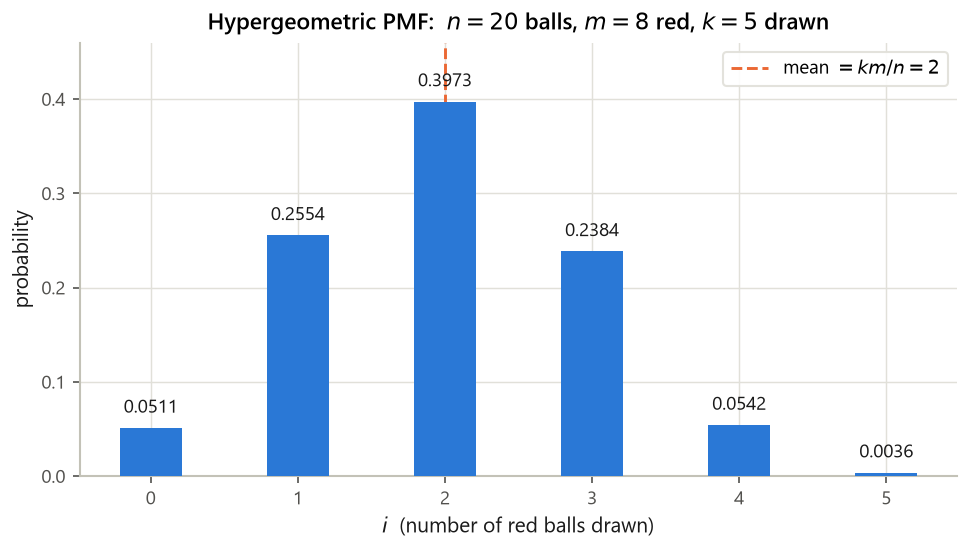
computes/g1_s4.py, key hyper_pmf; the dashed line marks $km/n = 2$.That closeness can be made exact. Write $X$ for the number of red balls drawn — the quantity called $i$ above — and $q = m/n$ for the fraction of the urn that is red.
hyper_var_from_pmf_frac, hyper_var_matches). The same comparison for
Practice 4.16 ($n=20$, $m=3$, $k=4$): $0.51$ with replacement against
$0.51\cdot\frac{16}{19} = 0.429474$ without. This is the precise statement of the note above — the
hypergeometric is the binomial with the variance shaved by $\frac{n-k}{n-1}$, and the shave is
negligible exactly when $k$ is small relative to $n$.Solution
Hypergeometric with $n=52$, $m=4$ (aces), $k=5$, $i=2$: $$\mathbf{P} = \frac{\binom{4}{2}\binom{48}{3}}{\binom{52}{5}} = \frac{6\cdot 17{,}296}{2{,}598{,}960} = \frac{103{,}776}{2{,}598{,}960} \approx 0.039930 .$$
Solution
$n=20$, $m=3$, $k=4$, $i=1$: $$\mathbf{P} = \frac{\binom{3}{1}\binom{17}{3}}{\binom{20}{4}} = \frac{3\cdot 680}{4{,}845} = \frac{2{,}040}{4{,}845} \approx 0.421053 .$$ For comparison, the binomial (with-replacement) approximation gives $\binom{4}{1}(0.15)(0.85)^3 = 0.368475$ — a $12.5\%$ relative error, because $k=4$ is not small compared with $n=20$.
4.8 Which counting object? A decision recipe
Almost every counting error in this material is a misidentification of the object being counted, not an arithmetic slip. Three questions settle it.
- Fix the sample space first, and check symmetry. Write down what a single outcome is, as a concrete object (a sequence of $7$ symbols; a set of $8$ squares; a partition into $4$ hands). Confirm that the model makes these objects equally likely. If it does not, do not count — weight instead (§4.5).
- Are the items split into $r$ labeled groups of prescribed sizes? If yes, the object is a partition: $\dfrac{n!}{n_1!\cdots n_r!}$. If the groups are interchangeable, divide further by the number of ways to permute equally sized groups.
- If not — does order matter? Would swapping two chosen items give a different object?
- Yes, and repetition is allowed $\Rightarrow$ sequence: $n^k$ (each of $k$ slots independently takes one of $n$ values).
- Yes, no repetition $\Rightarrow$ $k$-permutation: $\dfrac{n!}{(n-k)!}$; with $k=n$ this is $n!$.
- No, and repetition is allowed $\Rightarrow$ multiset: $\dbinom{n+k-1}{k}$ (stars and bars, §4.4) — only the tally of each type is recorded.
- No, no repetition $\Rightarrow$ subset: $\dbinom{n}{k}$; summed over all $k$ this gives $2^n$.
- Count numerator and denominator in the same currency (both ordered, or both unordered), then divide.
- Sanity-check. Is the answer in $[0,1]$? Do the counts sum correctly over a partition of the event space? Does an extreme case ($k=0$, $k=n$, $p=0$, $p=1$) give the obvious answer?
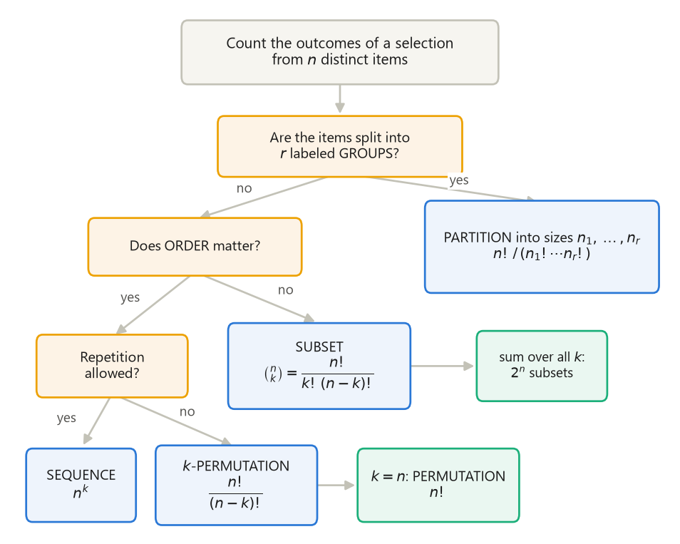
Fig. 4.6 draws the three classical branches; step 3's two questions — does order matter, is repetition allowed — are independent of each other, so together they make a $2\times 2$ table whose fourth cell is the multiset count of §4.4. Drawing $k$ items from $n$ types:
| $k$ from $n$ | without replacement | with replacement |
|---|---|---|
| ordered | $k$-permutation, $\dfrac{n!}{(n-k)!}$ | sequence, $n^k$ |
| unordered | subset, $\dbinom{n}{k}$ | multiset, $\dbinom{n+k-1}{k}$ |
At $n=5$, $k=3$ the four cells are $5\cdot4\cdot3 = 60$, $5^3 = 125$, $\binom{5}{3} = 10$ and
$\binom{7}{3} = 35$ — each verified by direct enumeration in computes/g1_s4.py (key
sampling_table_brute_check). The two "with replacement" cells are the larger ones in each
row, since repetition adds outcomes; the two "unordered" cells are the smaller ones in each column,
since forgetting the order merges outcomes. Only the without-replacement column divides cleanly:
$60/3! = 10$, because each subset comes from exactly $3!$ orderings. The with-replacement column does
not — $125/3!$ is not even an integer, because a sequence with a repeated item has
fewer than $3!$ distinct rearrangements. That failed division is the reason the fourth cell needs its
own argument.
Solution
(a) Permutation ($k=n$, order matters, no repetition): $6! = 720$. (b) Sequence (order matters, repetition allowed): $10^5 = 100{,}000$. (c) Subset (order irrelevant, no repetition): $\binom{12}{4} = 495$. (d) Partition into labeled groups: $\dfrac{9!}{3!\,3!\,3!} = \dfrac{362{,}880}{216} = 1{,}680$.
Solution
Use the complement. The sample space is the set of $4$-subsets of the $20$ socks: $\binom{20}{4} = 4{,}845$. "No matching pair" means the four socks come from four different pairs, and one sock is chosen from each: choose the $4$ pairs, $\binom{10}{4} = 210$ ways, then one sock from each pair, $2^4 = 16$ ways, giving $210\cdot 16 = 3{,}360$ favorable subsets. Hence $$\mathbf{P}(\text{no pair}) = \frac{3{,}360}{4{,}845} \approx 0.693498, \qquad \mathbf{P}(\text{at least one pair}) \approx 0.306502 .$$ This combines all three objects from the recipe: a subset (which pairs), a sequence (which sock from each pair), and a complement.
Solution
(a) The candies are identical, so an outcome records only how many each child gets: a multiset of size $k=10$ drawn from the $n=4$ children, equivalently a solution of $k_1+k_2+k_3+k_4 = 10$ in nonnegative integers. By the stars-and-bars count of §4.4, $\binom{n+k-1}{k} = \binom{13}{10} = \binom{13}{3} = 286$.
(b) Give each child one candy first — a single fixed act, no choices made — and distribute the
remaining $10-4 = 6$ freely: $\binom{4+6-1}{6} = \binom{9}{6} = \binom{9}{3} = 84$. (Brute-force
enumeration of the $84$ quadruples confirms it, key candies_positive_brute.)
(c) $4^{10}$ counts sequences: it answers "assign each of $10$ distinguishable candies to a child", where swapping two candies between two children gives a different outcome. With identical candies that swap changes nothing, so the object is a multiset, not a sequence. The two models are genuinely different questions — and note that $4^{10}$ equally weighted is the model in which the tallies are not equally likely, exactly the gotcha of §4.4.
| Object / result | Formula | Trigger | Source |
|---|---|---|---|
| Discrete uniform law | $\mathbf{P}(A)=|A|/|\Omega|$ | "fair", "at random", "well shuffled" on a finite $\Omega$ | L04 s2; B&T §1.2 |
| Basic counting principle | $n_1n_2\cdots n_r$ | selection describable as $r$ stages with fixed per-stage counts | L04 s3; B&T §1.6 |
| Sequences (repetition ok) | $n^k$ | $k$ slots, each freely one of $n$ values | L04 s3 |
| Subsets of an $n$-set | $2^n$ | each element independently in or out | L04 s3, s5 |
| Permutations | $n!$ | order all $n$ distinct items | L04 s3 |
| $k$-permutations | $n!/(n-k)!$ | ordered selection of $k$ distinct items | L04 s5 |
| Combinations | $\binom{n}{k}=\dfrac{n!}{k!(n-k)!}$ | unordered $k$-subset; positions of $k$ heads | L04 s5; B&T §1.6 |
| Multisets (stars and bars) | $\binom{n+k-1}{k}$ | unordered draw of $k$ from $n$ types with replacement; $k$ identical items into $n$ labeled bins | §4.4 (beyond L04) |
| Subset-sum identity | $\sum_{k=0}^n\binom{n}{k}=2^n$ | classify all subsets by size | L04 s5 |
| Partitions (multinomial) | $\dfrac{n!}{n_1!\cdots n_r!}$, $\sum_i n_i=n$ | $r$ labeled groups of prescribed sizes | L04 s8; rec04 P4 |
| Binomial probability | $\binom{n}{k}p^k(1-p)^{n-k}$ | $k$ successes in $n$ independent trials | L04 s6; B&T §1.6 |
| Conditional uniformity | $\mathbf{P}(A\mid B)=|A\cap B|/|B|$ when all $\omega\in B$ share a probability | "given exactly $k$ heads …"; answer free of $p$ | L04 s7 |
| Multinomial probability | $\dfrac{n!}{n_1!\cdots n_r!}p_1^{n_1}\cdots p_r^{n_r}$ | count vector over $r$ categories, i.i.d. trials | rec04 P5 |
| Hypergeometric | $\dfrac{\binom{m}{i}\binom{n-m}{k-i}}{\binom{n}{k}}$ | sampling $k$ without replacement from $m$ red, $n-m$ other | rec04 P3; B&T §1.6 Prob. 1.61 |
| Hypergeometric mean, variance | $\mathbb{E}[X]=k\dfrac{m}{n}$, $\operatorname{var}(X)=k\dfrac{m}{n}\Big(1-\dfrac{m}{n}\Big)\dfrac{n-k}{n-1}$ | same setting; last factor is the finite-population correction $\frac{N-n}{N-1}$ | rec04 P3; G2 |
| Birthday probability | $\dfrac{365\cdot364\cdots(365-n+1)}{365^n}$ | "do any two of $n$ coincide?" — count pairs, not people | rec04 P1; B&T §1.6 Prob. 1.50 |
Numbers to remember. Six die rolls all different: $6!/6^6 = 5/324 \approx 0.015432$. Given $3$ heads in $10$ tosses, first two heads: $\binom{8}{1}/\binom{10}{3} = 1/15 \approx 0.066667$, free of $p$. Four players each get an ace: $2197/20825 \approx 0.105498$. Birthday: $n=23$ gives collision probability $0.507297$; $n=57$ exceeds $99\%$. Hypergeometric urn $n=20$, $m=8$, $k=5$: mean $2$, variance $\frac{6}{5}\cdot\frac{15}{19} = \frac{18}{19} \approx 0.947368$. Eight safe rooks: $8!/\binom{64}{8} \approx 9.109465\times 10^{-6}$.
§5 Synthesis, cheatsheet, and the bridge to random variables
Sources: L01 slides 4–11 · L02 slides 3–8 · L03 slides 3–8 · L04 slides 2–8 · rec01 P1–P4 and G1† · rec02 P1–P4 · rec03 P1–P4 · rec04 P1–P5 · Bertsekas–Tsitsiklis §1.1–1.6. All numbers on this page are recomputed in computes/g1_s5.py.
Four lectures have produced exactly one object — a probabilistic model — and a small set of moves you are allowed to make on it. Everything in G1 is a consequence of three axioms plus one definition (conditional probability); the counting formulas are not probability at all, they are arithmetic that becomes probability the moment you invoke the uniform law. This section collects the whole toolkit on one page, states the traps that generate most wrong answers, gives a mixed problem set in which nothing announces which tool to use, and explains why the next group of notes replaces raw outcomes by numbers.
5.1 How the pieces fit together
Read the map below as a dependency graph: an arrow means "the target is derived from, or is a special case of, the source." Two chains descend from the axioms. The left chain is the conditioning chain — conditional probability is a definition, the multiplication rule is that definition rearranged, the total probability theorem is the multiplication rule summed over a partition, and Bayes' rule is the definition again with the total probability theorem substituted into its denominator. The right chain is the counting chain — the uniform law converts probability into counting, counting supplies $\binom{n}{k}$, and $\binom{n}{k}$ combined with independence gives the binomial probabilities.
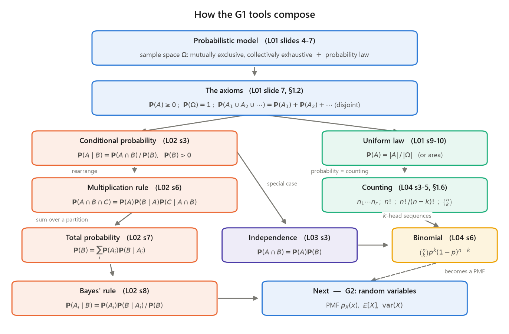
5.2 The master cheatsheet
Every result of G1 in one table. "When to use" is the trigger phrase in a problem statement that should make you reach for that row.
| Tool | Formula | When to use | Source |
|---|---|---|---|
| Model and axioms | |||
| Sample space | $\Omega$ = set of outcomes, mutually exclusive and collectively exhaustive | Always first. Choose the granularity so the events you care about are subsets. | L01 s4; B&T §1.2 |
| Nonnegativity | $\mathbf{P}(A)\ge 0$ | Sanity check on any answer. | L01 s7 |
| Normalization | $\mathbf{P}(\Omega)=1$ | Solving for an unknown weight (loaded die: $9c=1$). | L01 s7; rec01 P3 |
| (Countable) additivity | $A_i$ disjoint $\Rightarrow \mathbf{P}(\bigcup_i A_i)=\sum_i \mathbf{P}(A_i)$ | Break an event into disjoint pieces; infinite sample spaces. | L01 s7, s11 |
| Complement rule | $\mathbf{P}(A^c)=1-\mathbf{P}(A)$ | "At least one …" problems — complement is usually smaller. | B&T §1.2; rec01 P2 |
| Inclusion–exclusion (2 events) | $\mathbf{P}(A\cup B)=\mathbf{P}(A)+\mathbf{P}(B)-\mathbf{P}(A\cap B)$ | Overlapping events; percentages "in both categories." | rec01 P2; B&T §1.2 |
| Symmetric difference | $\mathbf{P}\big((A\cap B^c)\cup(A^c\cap B)\big)=\mathbf{P}(A)+\mathbf{P}(B)-2\mathbf{P}(A\cap B)$ | "Exactly one of the two occurred." | rec01 P1 |
| Continuity of $\mathbf{P}$ | $A_n\uparrow A \Rightarrow \mathbf{P}(A_n)\to\mathbf{P}(A)$; $A_n\downarrow A \Rightarrow \mathbf{P}(A_n)\to\mathbf{P}(A)$ | Limits of nested events; $\mathbf{P}([0,\infty))=\lim_n\mathbf{P}([0,n])$. | rec01 G1†; B&T §1.2, Prob. 1.13 |
| Uniform laws | |||
| Discrete uniform law | $\mathbf{P}(A)=\dfrac{|A|}{|\Omega|}$ | "Fair," "at random," "well shuffled," equally likely outcomes — then count. | L01 s9; L04 s2 |
| Continuous uniform law | $\mathbf{P}(A)=\dfrac{\operatorname{area}(A)}{\operatorname{area}(\Omega)}$ | Two "random numbers" in $[0,1]$; meeting-time problems. | L01 s10; rec01 P4 |
| Point events are null | $\mathbf{P}\big((X,Y)=(x_0,y_0)\big)=0$ in a continuous model | Whenever you are tempted to "count" in a continuous space. | L01 s10 |
| Conditioning | |||
| Conditional probability | $\mathbf{P}(A\mid B)=\dfrac{\mathbf{P}(A\cap B)}{\mathbf{P}(B)}$, requires $\mathbf{P}(B)>0$ | "Given that …", "knowing that …". $B$ becomes the new universe. | L02 s3; B&T §1.3 |
| Conditional uniform law | All outcomes of $B$ equally likely $\Rightarrow \mathbf{P}(A\mid B)=\dfrac{|A\cap B|}{|B|}$ | Conditioning inside a uniform (or equal-probability) model: just recount inside $B$. | L04 s7 |
| Multiplication (chain) rule | $\mathbf{P}(A_1\cap\cdots\cap A_n)=\mathbf{P}(A_1)\prod_{i=2}^{n}\mathbf{P}(A_i\mid A_1\cap\cdots\cap A_{i-1})$ | Sequential experiments; probability of one path down a tree. | L02 s6; B&T §1.3 |
| Total probability theorem | $\mathbf{P}(B)=\sum_i \mathbf{P}(A_i)\mathbf{P}(B\mid A_i)$, $\{A_i\}$ a partition of $\Omega$ | "Divide and conquer": you know $\mathbf{P}(B\mid A_i)$ for each scenario $A_i$. | L02 s7; B&T §1.4 |
| Bayes' rule | $\mathbf{P}(A_i\mid B)=\dfrac{\mathbf{P}(A_i)\mathbf{P}(B\mid A_i)}{\sum_j \mathbf{P}(A_j)\mathbf{P}(B\mid A_j)}$ | Inference: you observe an effect $B$, you want the cause $A_i$. Reverses the conditioning. | L02 s8; L03 s1; B&T §1.4 |
| Independence | |||
| Independence of two events | $\mathbf{P}(A\cap B)=\mathbf{P}(A)\mathbf{P}(B)$ (equivalently $\mathbf{P}(A\mid B)=\mathbf{P}(A)$ when $\mathbf{P}(B)>0$) | Physically separate mechanisms; "independent tosses" stated in the problem. | L03 s3; B&T §1.5 |
| Independence of a collection | $\mathbf{P}(A_i\cap A_j\cap\cdots\cap A_q)=\mathbf{P}(A_i)\mathbf{P}(A_j)\cdots\mathbf{P}(A_q)$ for every subset of distinct indices | Three or more events — pairwise checks are not enough. | L03 s6, s7 |
| Conditional independence | $\mathbf{P}(A\cap B\mid C)=\mathbf{P}(A\mid C)\mathbf{P}(B\mid C)$ | Independence within a scenario (e.g. once the coin's identity is known). | L03 s4, s5; rec03 P1, P4 |
| Counting | |||
| Basic counting principle | $n_1n_2\cdots n_r$ for $r$ stages with $n_i$ choices at stage $i$ | Any selection you can describe as a sequence of decisions. | L04 s3; B&T §1.6 |
| Permutations | $n!=n(n-1)\cdots 2\cdot 1$ | Order all $n$ distinct items. | L04 s3 |
| $k$-permutations | $\dfrac{n!}{(n-k)!}=n(n-1)\cdots(n-k+1)$ | Ordered selection of $k$ distinct items from $n$ (order matters, no repeats). | L04 s5; rec04 P1 |
| Combinations | $\dbinom{n}{k}=\dfrac{n!}{k!\,(n-k)!}$ | Unordered selection of $k$ from $n$; equivalently a $k$-subset. | L04 s5; B&T §1.6 |
| Subsets / binomial sum | $\displaystyle\sum_{k=0}^{n}\binom{n}{k}=2^n$ | Counting all subsets ($n$ in/out decisions); normalization check. | L04 s3, s5 |
| Partitions (multinomial coefficient) | $\dbinom{n}{n_1,\ldots,n_r}=\dfrac{n!}{n_1!\,n_2!\cdots n_r!}$, $\sum_i n_i=n$ | Split $n$ distinct items into labelled groups of prescribed sizes (dealing hands). | L04 s8; rec04 P4 |
| Binomial probability | $\mathbf{P}(k\text{ heads in }n)=\dbinom{n}{k}p^k(1-p)^{n-k}$ | $n$ independent trials, two outcomes each, same $p$ every trial. | L04 s6; B&T §1.6 |
| Multinomial probability | $\dbinom{n}{n_1,\ldots,n_r}p_1^{n_1}\cdots p_r^{n_r}$ | $n$ independent draws with $r$ possible colors, probabilities $p_i$. | rec04 P5 |
| Hypergeometric probability | $\dfrac{\dbinom{m}{i}\dbinom{n-m}{k-i}}{\dbinom{n}{k}}$ | Draw $k$ of $n$ balls without replacement, $m$ of them red; want $i$ red. | rec04 P3; B&T §1.6, Prob. 1.61 |
- Write down $\Omega$ and the probability law first. If the problem says "fair", "at random", "well shuffled", or "equally likely", the law is uniform and the whole problem is a counting problem — go to step 5. Otherwise the law is given by branch probabilities: draw the tree.
- Does the question contain "given that"? Yes $\to$ conditional probability. If the conditioning event is a subset of a uniform space, just recount inside it, $\mathbf{P}(A\mid B)=|A\cap B|/|B|$ (L04 s7). Otherwise use the definition.
- Do you want the probability of a whole path / of several things happening together? Multiplication rule — multiply along the branches.
- Do you know the answer only "under each scenario"? Partition $\Omega$ into the scenarios $A_i$ and use total probability. If the question instead asks which scenario given an observation, that is Bayes' rule — same numbers, one extra division.
- Counting: does order matter, and are repeats allowed? order matters + repeats $\to n^k$ (basic counting principle); order matters + no repeats $\to n!/(n-k)!$; order does not matter $\to \binom{n}{k}$; several labelled groups at once $\to n!/(n_1!\cdots n_r!)$. Then apply the uniform law: $\mathbf{P}(A)=|A|/|\Omega|$, making sure numerator and denominator count the same kind of object (both ordered, or both unordered).
- Independence is a claim, not a default. Use $\mathbf{P}(A\cap B)=\mathbf{P}(A)\mathbf{P}(B)$ only if the problem states independence, or if you have verified the product identity numerically.
The following numbers are the canonical worked answers of G1; keep them as calibration points
(all recomputed in computes/g1_s5.py).
| Quantity | Value | Why it is worth remembering | Source |
|---|---|---|---|
| $\mathbf{P}(\min(X,Y)=2)$, two tetrahedral rolls | $5/16$ | The uniform law is literally cell counting: 5 of 16 cells. | L01 s8; L02 s4 |
| Loaded die (evens twice as likely): $\mathbf{P}(\{1,2,3\})$ | $4/9\approx0.444444$ | Not $3/6$ — normalization, not symmetry, fixes the law. | rec01 P3 |
| Romeo & Juliet, $w=15$ min: $\mathbf{P}(\text{meet})=1-(1-w)^2$ | $7/16=0.4375$ | Continuous uniform law: area of a band, computed by complement. | rec01 P4 |
| Chess tournament: $\mathbf{P}(\text{win})$ | 0.375 | $0.5(0.3)+0.25(0.4)+0.25(0.5)$ — total probability over opponent types. | L02 s7 |
| Chess tournament: $\mathbf{P}(\text{type }1\mid\text{win})$ | 0.4 | $0.15/0.375$ — winning is evidence against the strongest opponent, so $0.5$ drops to $0.4$. | L02 s8 |
| Radar: $\mathbf{P}(A\cap B)=0.05\cdot 0.99$ | 0.0495 | Multiplication rule along one tree path. | L02 s5 |
| Radar: $\mathbf{P}(B)=0.0495+0.095$ | 0.1445 | Total probability over the partition $\{A,A^c\}$. | L02 s5, s7 |
| Radar: $\mathbf{P}(A\mid B)$ | 0.342561 | A 5% prior becomes only a 34.26% posterior — false alarms dominate. | L02 s5, s8 |
| Monty Hall: $\mathbf{P}(\text{win})$ stick vs switch | $1/3$ vs $2/3$ | Switching wins exactly when the first guess was wrong. Always switch. | rec02 P4; B&T §1.3 |
| $\mathbf{P}(A\cap B\cap C)$ vs $\mathbf{P}(A)\mathbf{P}(B)\mathbf{P}(C)$, coin triple | $1/4$ vs $1/8$ | Pairwise independence does not imply independence. | L03 s7 |
| Two unfair coins: $\mathbf{P}(\text{toss }11=H)$ vs $\mathbf{P}(\text{toss }11=H\mid 10\text{ heads})$ | 0.5 vs 0.9 | Unconditionally dependent, conditionally (on the coin) independent. | L03 s5 |
| License plates, 3 letters + 4 digits | 175 760 000 | $26^3\cdot 10^4$ — the basic counting principle with repetition. | L04 s3 |
| … with no repetition | 78 624 000 | $26\cdot25\cdot24\cdot10\cdot9\cdot8\cdot7$ — choices shrink by one per stage. | L04 s3 |
| Six rolls of a die all different: $6!/6^6$ | 0.015432 | $720/46\,656$ — favorable orderings over all sequences. | L04 s4 |
| $\mathbf{P}(\text{first 2 heads}\mid 3\text{ heads in }10)=\binom{8}{1}/\binom{10}{3}$ | $8/120=1/15\approx0.066667$ | Conditioning on $B$ gives a uniform law on $B$, so recount inside $B$. | L04 s7 |
| 52-card deal, each player gets an ace | 0.105498 | $4!\cdot\frac{48!}{(12!)^4}\big/\frac{52!}{(13!)^4}$ — a partition count over a partition count. | L04 s8 |
| Birthday problem, $n=23$: $\mathbf{P}(\text{all distinct})$ | 0.492703 | So $\mathbf{P}(\text{some match})=0.507297>1/2$ with only 23 people. | rec04 P1 |
| 8 non-attacking rooks: $(8!)^2\big/\frac{64!}{56!}$ | $9.109465\times10^{-6}$ | Ordered count in both numerator and denominator, so ordering cancels. | rec04 P2 |
| Hypergeometric, $n=20,m=8,k=5,i=2$ | 0.397317 | $\binom{8}{2}\binom{12}{3}/\binom{20}{5}$ — sampling without replacement. | rec04 P3 |
5.3 Top gotchas of G1
These are the errors that account for most lost points on this material. Each one is a place where two different notions look similar in English but are different in the formalism.
5.4 The bridge: from outcomes to random variables
Every G1 answer was obtained by describing a set of outcomes and measuring it. That works, but it does not scale, and it does not compose. Three symptoms:
- The interesting objects are already numbers. On the tetrahedral grid we never really cared about the pair $(x,y)$; we asked about $X+Y$, $\min(X,Y)$, $\max(X,Y)$ — numerical functions of the outcome. The binomial formula $\binom{n}{k}p^k(1-p)^{n-k}$ is not a statement about one event; it is a whole table of probabilities, one for each value $k=0,1,\ldots,n$, i.e. a function of a number.
- Set descriptions blow up. Writing $\{\omega: \min(X,Y)=2\}=\{(2,2),(2,3),(2,4),(3,2),(4,2)\}$ is fine for 16 outcomes and hopeless for $52!/(13!)^4$ card deals. We want to specify the answer as a function of a value, not as a list of outcomes.
- We cannot yet say "on average". Nothing in G1 lets you ask how many heads you expect in $n$ tosses, or how spread out that count is. Averages and spreads are properties of numbers, so we first need numbers attached to outcomes.
Two G1 results are already PMFs in disguise, which is why they are the natural first examples in
G2. The binomial formula, read as a function of $k$, is the PMF of the number of heads in $n$
independent tosses:
$$p_K(k)=\binom{n}{k}p^k(1-p)^{n-k},\qquad k=0,1,\ldots,n,$$
and the normalization $\sum_{k=0}^{n}p_K(k)=1$ is precisely the binomial theorem — verified
numerically in computes/g1_s5.py for $n=10$, $p=0.3$, where the sum evaluates to
$1.0$. Likewise the countably infinite example of L01 slide 11, $\mathbf{P}(n)=2^{-n}$ for
$n=1,2,\ldots$, is the PMF of a geometric random variable, and the calculation
$\mathbf{P}(\{2,4,6,\ldots\})=1/3$ done there is exactly the kind of sum G2 automates.
5.5 Mixed practice: choose the tool yourself
Every practice problem in §§1–4 sat directly under the subsection whose tool it exercised, so the
tool was announced by the table of contents. These five are deliberately unsorted: each one chains two
or three rows of the §5.2 cheatsheet, and nothing in the statement tells you which. Work them before
reading the solutions, and note which rows you used — each solution names them. All numbers are
recomputed in computes/g1_s5.py.
Solution
Rows used: Hypergeometric probability $\to$ Total probability theorem $\to$ Bayes' rule. The problem is an inference question ("which box, given what I saw"), so the last step is Bayes; but the likelihoods $\mathbf{P}(\text{2 red}\mid\text{box }i)$ are not given, they must be counted first.
Step 1 — the likelihoods. Given box $i$, the 3 drawn balls are an equally likely 3-subset of the 10 balls in that box, so the conditional uniform law applies and this is sampling without replacement: the hypergeometric row with $n=10$, $k=3$, $i=2$. With $m=6$ red in box 1, $$\mathbf{P}(R_2\mid B_1)=\frac{\binom{6}{2}\binom{4}{1}}{\binom{10}{3}}=\frac{15\cdot 4}{120}=\frac{60}{120}=\frac{1}{2},$$ and with $m=3$ red in box 2, $$\mathbf{P}(R_2\mid B_2)=\frac{\binom{3}{2}\binom{7}{1}}{\binom{10}{3}}=\frac{3\cdot 7}{120}=\frac{21}{120}=\frac{7}{40}=0.175 .$$ (Here $R_2$ = "exactly 2 of the 3 drawn are red"; $B_i$ = "box $i$ was picked".)
Step 2 — total probability. $\{B_1,B_2\}$ is a partition of $\Omega$, so $$\mathbf{P}(R_2)=\tfrac12\cdot\tfrac12+\tfrac12\cdot\tfrac{7}{40}=\tfrac14+\tfrac{7}{80}=\tfrac{20}{80}+\tfrac{7}{80}=\tfrac{27}{80}=0.3375 .$$
Step 3 — Bayes. $$\mathbf{P}(B_1\mid R_2)=\frac{\mathbf{P}(B_1)\mathbf{P}(R_2\mid B_1)}{\mathbf{P}(R_2)}=\frac{1/4}{27/80}=\frac{20}{27}\approx 0.740741 .$$
Reading it. The prior was $0.5$; seeing 2 reds out of 3 pushes it to $\approx 0.74$, because the red-rich box makes that observation $1/2 \div 7/40 = 20/7\approx 2.857$ times more likely. The posterior odds are exactly the prior odds ($1{:}1$) times that likelihood ratio: $20{:}7$, i.e. $20/27$. ✓
Solution
Rows used: Total probability theorem (with a partition you have to invent) $\to$ Binomial probability $\to$ Bayes' rule. Nothing in the statement says "partition"; the cue is that the coin experiment is only describable once you know $N$. So partition by the value of $N$: $A_n=\{N=n\}$, $n=1,\ldots,6$, which are disjoint and exhaust $\Omega$, each with $\mathbf{P}(A_n)=1/6$.
Step 1 — the conditional probabilities. Given $N=n$, the tosses are $n$ independent fair trials, so the binomial row with $p=1/2$ gives $$\mathbf{P}(H_2\mid N=n)=\binom{n}{2}\left(\tfrac12\right)^{2}\left(\tfrac12\right)^{n-2}=\frac{\binom{n}{2}}{2^{n}},$$ where $H_2$ = "exactly 2 heads". This is $0$ for $n=1$ (you cannot get 2 heads in 1 toss), and $$\tfrac{1}{4},\quad \tfrac{3}{8},\quad \tfrac{6}{16}=\tfrac38,\quad \tfrac{10}{32}=\tfrac{5}{16},\quad \tfrac{15}{64}$$ for $n=2,3,4,5,6$ respectively.
Step 2 — total probability. Weight each by $1/6$ and add: $$\mathbf{P}(H_2)=\frac16\left(\frac14+\frac38+\frac38+\frac{5}{16}+\frac{15}{64}\right) =\frac16\cdot\frac{16+24+24+20+15}{64}=\frac16\cdot\frac{99}{64}=\frac{99}{384}=\frac{33}{128}=0.2578125 .$$
Step 3 — Bayes for part (b). $$\mathbf{P}(N=2\mid H_2)=\frac{\mathbf{P}(N=2)\mathbf{P}(H_2\mid N=2)}{\mathbf{P}(H_2)} =\frac{(1/6)(1/4)}{33/128}=\frac{1/24}{33/128}=\frac{128}{24\cdot 33}=\frac{16}{99}\approx 0.161616 .$$
Reading it. The prior on $N=2$ was $1/6\approx0.1667$; observing exactly 2 heads barely moves it, to $\approx 0.1616$. That is because $\binom{n}{2}/2^n$ is nearly flat over $n=2,\ldots,4$ — "2 heads" is about equally plausible under several values of $N$, so it is weak evidence. Evidence only moves a posterior when the likelihoods actually differ across the partition.
Solution
Rows used: Conditional uniform law (L04 s7) $\to$ Combinations $\to$ Independence of two events, checked as a product identity. The word "independent" in the statement is about the unconditional model and tells you nothing about the conditional one — Gotcha 3.
Step 1 — the conditional model. All $2^{10}$ toss sequences are equally likely, so conditioning on $B$ leaves a uniform law on the $|B|=\binom{10}{3}=120$ sequences with exactly 3 heads, and every conditional probability is a count inside $B$ divided by 120.
Step 2 — the marginals. Sequences in $B$ with toss 1 heads: fix an H in position 1 and place the remaining 2 heads among the other 9 positions, $\binom{9}{2}=36$ ways. So $$\mathbf{P}(H_1\mid B)=\frac{36}{120}=\frac{3}{10}=0.3,$$ and by the same count $\mathbf{P}(H_2\mid B)=3/10$. (Sanity check: the three heads are equally likely to sit in any 3 of the 10 slots, so each slot is heads with probability $3/10$. ✓)
Step 3 — the joint. Sequences in $B$ with both tosses 1 and 2 heads: fix two H's, place the last head among the other 8 positions, $\binom{8}{1}=8$ ways. So $$\mathbf{P}(H_1\cap H_2\mid B)=\frac{8}{120}=\frac{1}{15}\approx 0.066667 .$$
Step 4 — the verdict. $$\mathbf{P}(H_1\mid B)\,\mathbf{P}(H_2\mid B)=\frac{3}{10}\cdot\frac{3}{10}=\frac{9}{100}=0.09 \;\ne\; \frac{1}{15}\approx 0.066667=\mathbf{P}(H_1\cap H_2\mid B),$$ so they are not conditionally independent given $B$. Conditioning destroyed the independence.
Reading it. Fixing the total number of heads makes the tosses compete for a fixed budget: knowing toss 1 is heads leaves only 2 heads for the remaining 9 slots, so $\mathbf{P}(H_2\mid H_1\cap B)=2/9\approx 0.222 < 0.3$. Any constraint on a sum makes the summands negatively dependent — a pattern you will meet again in G2.
Solution
Rows used: Discrete uniform law + Combinations $\to$ Complement rule $\to$ Conditional uniform law. Part (b) is a "given that" question inside a uniform model, so it is a recount, not a division of two computed probabilities.
Step 0 — the model. $\Omega$ = the set of 5-subsets of the 10 people, $|\Omega|=\binom{10}{5}=252$, uniform.
Step 1 — part (a) by complement. "At least one man" is a union of five overlapping cases, so use the complement: no man at all means all 5 are women, $\binom{6}{5}=6$ committees. Hence $$\mathbf{P}(\text{no man})=\frac{6}{252}=\frac{1}{42},\qquad \mathbf{P}(\text{at least one man})=1-\frac{1}{42}=\frac{41}{42}\approx 0.976190 .$$
Step 2 — part (b) by recounting inside $B$. Let $B$ = "at least one man", so $|B|=252-6=246$. Since the law on $\Omega$ is uniform, the law on $B$ is uniform too and $\mathbf{P}(A\mid B)=|A\cap B|/|B|$. Committees with exactly 2 men: choose the 2 men, $\binom{4}{2}=6$ ways, and the 3 women, $\binom{6}{3}=20$ ways, giving $20\cdot 6=120$ — and every one of them lies in $B$. Therefore $$\mathbf{P}(\text{exactly 2 men}\mid B)=\frac{120}{246}=\frac{20}{41}\approx 0.487805 .$$
Reading it. Unconditionally $\mathbf{P}(\text{exactly 2 men})=120/252=10/21\approx 0.476$; conditioning on $B$ nudges it up only slightly, because $B$ is nearly all of $\Omega$ ($\mathbf{P}(B)\approx 0.976$) — conditioning on an almost-certain event barely changes anything, which is a useful sanity check on any conditional answer.
Solution
Rows used: (a) Multinomial probability (or, equivalently, Partitions plus the discrete uniform law on ordered sequences); (b) Binomial probability. The trap is reaching for the same formula twice: (a) tracks all six faces at once, (b) collapses the die to a two-outcome trial ("6" vs "not 6"), which is exactly what makes it binomial.
Step 1 — part (a) as counting. $\Omega$ = ordered sequences of 12 rolls, $|\Omega|=6^{12}=2\,176\,782\,336$, uniform because the die is fair and the rolls independent. The favorable sequences are the arrangements of the multiset $\{1,1,2,2,3,3,4,4,5,5,6,6\}$, counted by the multinomial coefficient $$\binom{12}{2,2,2,2,2,2}=\frac{12!}{(2!)^6}=\frac{479\,001\,600}{64}=7\,484\,400 .$$ Hence $$\mathbf{P}(\text{each face twice})=\frac{7\,484\,400}{2\,176\,782\,336}\approx 0.003438 .$$ Both numerator and denominator count ordered sequences — Gotcha 5 satisfied.
Step 2 — part (a) as a multinomial probability. Same answer from the cheatsheet row directly, with $n=12$, $r=6$, every $n_i=2$ and every $p_i=1/6$: $$\binom{12}{2,\ldots,2}\left(\tfrac16\right)^{12}=\frac{12!}{(2!)^6}\cdot\frac{1}{6^{12}}\approx 0.003438 . \checkmark$$
Step 3 — part (b). Call a roll a "success" if it shows 6. The 12 rolls are independent, each a success with the same $p=1/6$, so the count of successes is binomial: $$\mathbf{P}(\text{exactly two 6s})=\binom{12}{2}\left(\frac16\right)^{2}\left(\frac56\right)^{10} =66\cdot\frac{1}{36}\cdot\left(\frac56\right)^{10}\approx 0.296094 .$$
Reading it. The two answers differ by a factor of about 86, yet (a) is a special case of the same model: "each face exactly twice" is the intersection of six constraints like the one in (b), and constraints on a fixed total of 12 rolls are strongly negatively dependent (compare Practice 5.3), so the joint probability is far below the product of the marginals.
- One model, two chains. Axioms $\to$ conditional probability $\to$ multiplication rule $\to$ total probability $\to$ Bayes; axioms $\to$ uniform law $\to$ counting $\to$ binomial (Fig. 5.1).
- Two ideas only. Additivity over disjoint pieces, and renormalization inside a conditioning event. Every formula in the cheatsheet is one of these two applied to a particular decomposition.
- Trigger words. "at random / fair / shuffled" $\to$ uniform law and counting; "given that" $\to$ conditional probability; "under each scenario" $\to$ total probability; "which cause, given the observation" $\to$ Bayes; "independent trials" $\to$ products, and only then.
- Nine traps. disjoint $\ne$ independent; $\mathbf{P}(A\mid B)\ne\mathbf{P}(B\mid A)$ (0.99 vs 0.342561 in the radar model); conditioning changes independence (0.5 vs 0.9 for the two coins); pairwise $\ne$ mutual ($1/4$ vs $1/8$); count order consistently; labelled vs unlabelled groups; do not assume uniformity; pin down the conditioning event; never condition on a null event.
- Mixed practice (§5.5). Five problems where the statement does not name the tool: $20/27$ (hypergeometric $\to$ total probability $\to$ Bayes); $33/128$ and $16/99$ (invent the partition, then binomial, then Bayes); $9/100\ne 1/15$ (independence destroyed by conditioning on the number of heads); $41/42$ and $20/41$ (complement, then recount inside $B$); $0.003438$ vs $0.296094$ (multinomial vs binomial).
- Next. Replace outcomes by numbers: $X:\Omega\to\mathbb{R}$ with PMF $p_X(x)=\mathbf{P}(X=x)$. The binomial formula becomes the binomial PMF; expectation and variance follow in G2.